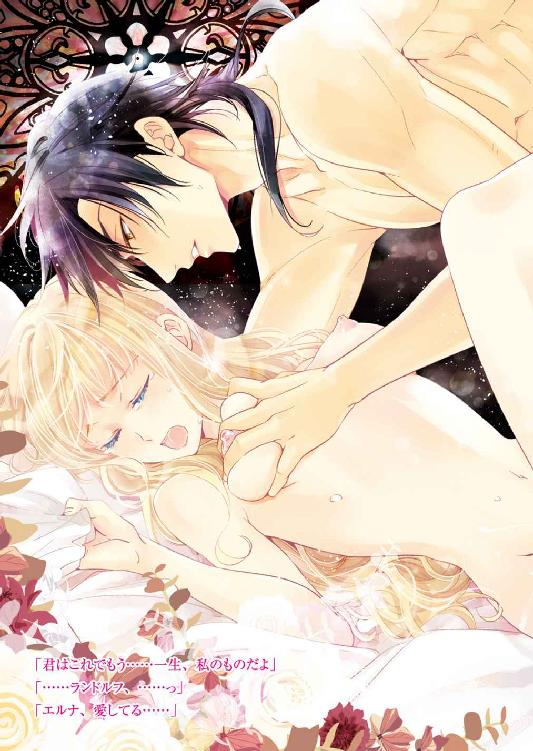
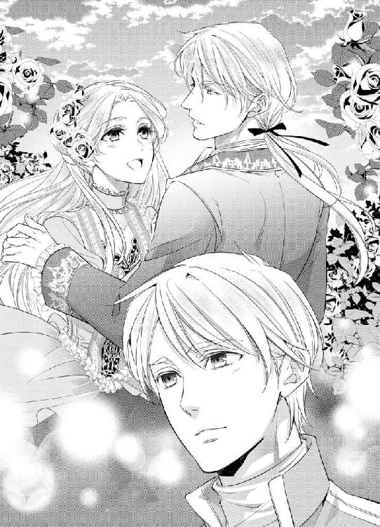
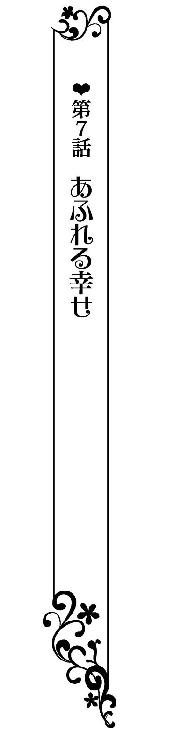

| 騎士団長と『仮』新婚生活！？【SS付】【イラスト付】 ～プリンセス・ウエディング～ (ロイヤルキス文庫) | |
| 立花実咲 | |
| (2016) | |

この物語はフィクションであり、実在の人物・団体・事件等とは、いっさい関係ありません。
イラスト・えとう綺羅
『ずっと......私と一緒にいてくれる？』
『もちろんです。ずっと、貴方のお傍に......約束します』
かつて、ベルンシュタインの騎士は誓った。
王妃への忠誠と服従を。
そして永遠の愛を──
ユーグラウス大陸の北の山々が雪解けをはじめる頃、大陸一の国土を誇る南西の国、ベルンシュタイン王国にあたたかな春が訪れていた。
空は青々と澄み、煌めく海の上を、白い鳥が悠然と翔けてゆく。王都のいたるところで花が咲きこぼれ、黄色や橙色のパンジーやポピー、赤やピンクの薔薇、薄紫のゼラニウムや純白のジャスミンなど、甘く華やかな色が、人々の心を和ませている。
そんなある日のうららかな昼下がり──
王都シュタルツの中央に構えられたノーブル宮殿では、騎士叙任式の式典が執り行われていた。
国王ならびに王妃は、王立騎士団に新たに入団した者たちへ宣下と共に首打ちを行い、騎士は授けられた剣と盾をもって、君主および主君に忠誠を誓う。騎士にとって一生のうちで極めて重要な場面だ。
王立騎士団のうち王族警護にあたる近衛騎士団の第一団長ランドルフは、新たに仲間に加わる騎士らを見守り、粛々とした気持ちで式典に参加していた。
これが滞りなく済んだら騎士団の詰所にいったん戻り、新米騎士の鍛錬のために剣合わせを、と考えていたのだが──終わってすぐ、第一王子マルクスに捕まってしまい足止めされる。
「ランドルフ、君に相談があるんだ。このあと僕の部屋に来てほしい」
必要以上ににこやかなマルクスの様子からすると、〝また〟あの用事か──と思ったが、主君の命令には従わなければならない。ランドルフは硬質な輝きを放つ黒髪をさらりと下げ、「仰せのままに」と普段どおりに返事をした。
「ああ、安心していいよ、ランドルフ。もう決めたから」
マルクスが端正な顔をくしゃりとゆるめて、ふふんと得意げに微笑む。一方、常に泰然たるランドルフは涼しげなまなざしのまま、精悍な表情を崩すことなく、さらりと問い返す。
「......と言いますと？」
「花嫁候補のことさ」
マルクスはきっぱりと言った。けれど、彼の金色の前髪からのぞく琥珀の瞳には何か含みがある。少年期のいたずらを企んだときのものと重なって見えたので、ランドルフは王子の言葉を鵜呑みにはしなかった。
第一王子の条件に適う花嫁探しの舞踏会を開いたのがつい先月のこと。王族の血筋を引く者や名家の貴族たちから候補を絞ったあとも、最終的になかなか決められず未だに保留のまま。王子の言うことが二転三転するのは毎日のことだったからだ。
実際、花嫁探しというのは口実で、第一王子を支持する穏健派と第二王子を支持する改進派、宮廷内で派閥が二分に分かれている現状、国王の特別な宣下がない限りは第一王子に継承権があるということを反対派閥に見せつけたかった......という政治絡みの思惑もある。
王子自身は婚約そのものに乗り気ではなく、できる限り先延ばしにしたいようだ。
古くより名誉ある騎士を輩出し、国から叙勲を与えられた名門アイゼンシュタット家出身のグライムノア公爵ことランドルフ・アイゼンシュタットと、第一王子マルクス・ノア・ベルンシュタインは、実のところ主従関係以前に幼なじみなのである。王立学園および騎士学校では学友として過ごしてきたこともあり、ランドルフは王子の性格を理解しているつもりだ。
王位継承者候補の中でもっともふさわしいと名があがっているマルクスは、才気に溢れ、勘が鋭く、洞察力が優れている。常におだやかに振る舞い、飄々と見せかけているが、立場上、常に孤独に苛まれ、それゆえに気を許したランドルフには寂しがりやな一面を見せることがあった。
暗殺に毒を使われぬよう薄めた毒薬を毎日飲まされていた少年期もそうだったが、相談と言いつつ不安を解消する話し相手が欲しいのだ。それがいつしか習慣となり、他愛のない長話にも付き合わされるのが日常というか日課になっていた。
まあいい、いつものように話半分は聞き流すことにしよう。有益な情報とそうでないものを聞き分けるのも臣下の役目だ。そう思い、ランドルフは立場をわきまえ、黙々とマルクスについていった。
宮廷の中庭に出るなり、
「今日も我が国の女神は美しいね」
とマルクスは呟いた。
ランドルフはつられて円形の噴水の傍に視線をやった。かつてベルンシュタインに多大な恵みをもたらし、美と豊穣の女神と賞賛されたミンディア妃がモデルとなった石像のことだ。
たしかに女神の石像は美しく、陽の光にきらめいた噴水の水しぶきで、光のベールに包まれているかのように神々しく輝いている。
王子の発言は、敬意や称賛というより、歴代の美妃といわれたミンディア妃以上の優れた女性を娶ることが王室の理想とされる風潮へのいやみもあったかもしれない。
ランドルフは黙ったまま付き従い、女神像が飾られた円形の噴水を通りすぎ、薔薇やハーブが育てられている温室の方に進んだ。
温室の側には白いロトンダ式の柱に囲われたガゼボがあり、白い透かし彫りのテーブルと椅子が備え付けられていて、王子や王女はよくここを気に入ってお茶会を開く。
まずは休憩をするのだろうかと思ったが、王子の目的は違うらしい。ガゼボから三メートルあまり離れたところで歩みを止め、物影に隠れるような位置で立ち話をしはじめた。
「実は今日、お目当ての子が妹のお茶会に来ているんだ。そろそろ例の件、腹を括って決めようと思っていてね。だから、おまえにも意見を聞きたいんだよ」
マルクスが声を潜める。このセリフは一字一句違わず、数日前に聞いた気がしないでもない。聞き流すべきか否か。一拍おいて、ランドルフは半信半疑で尋ねた。
「殿下のお目当ての子とは......花嫁候補の、ですか？」
「ああ、そうだよ。僕が選ぶなら、大人しくて控えめな子がいいと言ったよね？ あれこれ主張する声の大きい女性はあまり好きではないし、過干渉だとか束縛する子も窮屈だから遠慮したい。しいていうなら、笑顔が愛らしい女性がいいね。毎日顔を見合わせるのだから」
条件を話しだすと長い。おそらく百以上はあるかもしれない。王子は理想が高い。いや、王子だからこそこのぐらい望むのは当然なのか。毎日のように聞いているランドルフはもはや麻痺しつつあった。うっかり返事が億劫になったところを適当に相槌を打つ。
「......であれば、殿下のお眼鏡にかなった方は一体どんな方なのでしょうね」
社交辞令ではなくランドルフは本気でそう思う。王子の理想を叶えられる女性とは誰か、非常に興味深い。
「ああ。まず、僕が気にかけたのはね、あちらのご令嬢だよ」
マルクスの視線の先を辿ると、王子の実妹、第二王女イレーネの姿があった。テーブルを挟んで向かい合う形でお茶を飲んでいるのは、ブラウゼル公爵の嫡男で外交官を務めるハインツである。その隣に小柄な女性、ブラウゼル公爵の長女エルナが座っていた。
このたびの叙任式で、エルナの双子の弟ヨハンが王立騎士団に入団したので、おそらく心配して様子を見に来たのかもしれない。昔から仲のよいイレーネが気を利かせて茶会に呼んだのだろう。
しかし、ランドルフはまさか......とマルクスとエルナを二度見した。あそこにいるご令嬢といったらエルナしかいないじゃないか。その現実を受け止めたとき、雷に打たれたような衝撃が走った。
ランドルフが唖然としている横で、王子はにこにこと満足した表情を浮かべている。
「エルナ、可愛いよね。控えめで慎ましくてはずかしがりやで笑顔が愛らしい。僕はああいう可憐な子が好きだよ」
「殿下、お待ちください。なぜ、彼女なんです？ 花嫁候補にはあがっていなかったはずでは？」
ランドルフは焦って聞き返した。動揺のあまりに声が上ずってしまい、情けなかったかもしれないが、それでも構わなかった。今まで誰の名前があがっても平気でいられたが、エルナに関しては別だ。無様だろうがなんだろうが見過ごせないし、黙ってなどいられるものか。
「うーん、いけないかな？ 彼女も十七歳。社交界デビューもしたのだから、候補であってもいいと思うんだけど。遠い親戚とはいえ王族の血も引いている公爵家のご令嬢なのだから、身分としても申し分ないだろう？」
「たしかにそうですが......その、彼女はなかなか社交的とは言えませんから、殿下とは正反対の性格ですし、いろいろと苦労なさるのではないかと」
陰口をたたくようでいたたまれなかったが、とにかくランドルフは必死だった。
（殿下は突然、何を考えていらっしゃるのか......）
じりじりと胸の奥がもどかしく疼いて、喉のあたりに苦々しいものが込み上げてくる。常に泰然と構えているランドルフだったが、今に限っては動揺が隠しきれず、手に汗を握ってしまっていた。
「うーん、意見があったね」
「は──？」
と、ランドルフは肩透かしを食らった。
「実は、おまえと同じように考えたんだ。あんなにいい子なのに引っ込み思案だと、きっと誰とも知り合えないんじゃないかな。せっかく素敵なレディになったのにデビュー以来、社交界を避けているようじゃないか。趣味でロマンス小説を読むのが好きで夢を見ているのもいいけれど、だから、彼女に〝も〟運命の相手が見つかるように、いい縁談をもちかけてあげようと思っているんだ」
王子の目当てではなかったのだ、とホッとしたのも束の間、いい縁談をもちかけると聞いて、ランドルフは再び焦った。
「おまえはどう思う？ エルナが安心するようなタイプがいいと思うんだ。たとえば──」
指折り選出しそうな勢いを阻止すべく、ランドルフは口を挟んだ。
「殿下、ご検討中のところ誠に恐縮ですが、私から一つ提案を申し上げてもよろしいでしょうか？」
いつにない剣幕のランドルフにマルクスがきょとんとした顔をする。
「うん？」
さっきから黙って聞いていたが、もう我慢はできない。主君の言葉を遮るような無礼など、自分らしくなかったかもしれない。しかし、話が進んでしまってからでは遅いのだ。
「それならば、ぜひ、私が立候補させていただきます」
正気の沙汰ではなかったかもしれない。なりふり構っていられず、気付いたらランドルフは口走ってしまっていた。
これまで主君の様々な表情を側で見てきたが、いまほどポカンと間の抜けた顔は初めてだった。
ベルンシュタイン王国は、ユーグラウス大陸における二千年の歴史の中で、幾度も合併と分裂を繰り返してできた国である。広い国土を誇る軍事国家と、文化都市として栄えた国の特色が融合し、それぞれの利点が集まって発展してきた。
北は芸術や美術などの文化都市として、南は貿易が盛んな商業都市として栄え、いまや大陸一の経済国家として名高く、歴史を重ねてきた鈍色の石畳の街並みは、とても美しい。
王都シュタルツの最北端にはノーブル宮殿が構えられ、港へつづく城下町を見下ろすように広がり、王の権威をあらわす象徴として存在感を示している。国内の平和は王立騎士団が部門をわけて領地ごとに管理し、王侯貴族をはじめ一般市民の生活を守っていた。
騎士叙任式から一ヶ月後──
ノーブル宮殿から馬車で二時間ほどの距離にあるブラウゼル公爵の邸では、長女のエルナが落ち着きなくそわそわしていた。
邸の応接間の窓辺から外を覗いたり、バルコニーに出て見たり、庭園を散歩してみたり......しかし、お目当ての来客がなかなか見えず、ため息をつく。
ちょうど家令に見送られて公務に出かけようとしていた兄のハインツが見かねて「まったくおまえは困った子だね」と呆れたように言った。
「お行儀悪いことをしてごめんなさい」
兄に咎められ、我に返ったエルナがシュンとして謝罪すると、ハインツは苦笑しつつ首を横に振った。
「そんなに会いたかったのなら、なぜイレーネ王女殿下とのお茶会のときにもマルクス王子殿下へ謁見を申し込むのを拒んだんだい？ おまえのいとしの騎士団長殿にもお会いできる時間はあったはずだろう？」
兄に揶揄されたエルナはたちまち顔を赤くした。兄にはバレバレだったようだ。
「だって叙任式といったら騎士にとって大事な式典だもの。ランドルフはもっとも優秀だと言われる近衛騎士第一団の騎士団長よ？ 式典が終わったあとだってきっと忙しいはずだったわ。それにあの日は、ヨハンの様子を見に行くことが一大事だったでしょう」
「まあ、そうだね」
とハインツは頷く。
生まれたときから身体の弱かった双子の弟ヨハンが騎士になりたいと言い出したとき、エルナは心配でたまらなかった。けれど弟はまわりの心配をよそに騎士学校で優秀な成績をおさめて卒業し、王立騎士団に入団。先日の叙任式にも出席していた。
きっと弟は今まで以上に努力を重ねることだろう。頭ではそうわかっていてもやはり双子の片割れがどうしているか気になるのがもう一方の性というものらしい。エルナはちょうど公務で用事があった兄ハインツについて様子を見にいったのだ。
「ヨハンも立派になったものだよ。それもイレーネ王女殿下の護衛につかせてもらえるのだから、とても誇らしいことだ」
「ええ、とっても努力していたものね」
それならなおさら上司にあたるランドルフには挨拶をしておくべきだったと思うのだが、公務中の彼の麗しい姿に見惚れているうちに時間が過ぎてしまった......なんてことを兄に言ったらまた呆れられてしまうだろう。
（それに......なんだかいつもと様子が違って、近寄りがたいような雰囲気だったのよね......邪魔して嫌われたらいやだもの）
けれど、やっぱり声をかければよかった。翌日から王立騎士団は各々の部隊編成を組み、王都から往復三日ほどの距離にある国境まで遠征に出立してしまい、ひと月の間ずっと会えていないのだ。
昨日になってやっと遠征から帰ってきた騎士団が、各々交代で休暇をとっているらしく、ランドルフも戻ってくる予定だと情報を得た。五日ほどまとまった休暇をとるつもりだと聞いて、エルナはとても楽しみにしていた。
兄以上に慕っているもう一人の兄のような人。エルナにとってランドルフはそういう存在だった。彼は剣術に長けているだけではなく、芸術や文学にもあかるく博識なので、彼と話をする時間は何より楽しかったのだ。
公爵令嬢という高貴な身分にありながら、社交界が大の苦手という箱入り娘のエルナは、人見知り、あがり症、赤面症、ひいては男性が苦手という四つの大きな悩みを抱えていて、家族以外に気を許せるのもランドルフだけだった。
彼の実家であるアイゼンシュタット家の邸は、ここから馬車で半時とかからないところにある。王都シュタルツを領地として治める由緒正しき家だ。
先代のシュタルツァー公爵が亡くなったあとランドルフの兄が家督と爵位を引き継いだ。次男であるランドルフ自身は騎士でありながら王から授けられたグライムノア公爵の爵位をもち、彼の現在の住まいは便宜上、城の敷地内にある臣下の塔にあった。
旧市街地をいくつか任されているエルナの父ブラウゼル公爵も内政に関わっている重鎮ではあるが、アイゼンシュタット家の方がずっと格上だ。
たとえランドルフが実家に里帰りをしたところを狙って訪ねても、まず顔を見せるのはシュタルツァー公爵夫人である。
「目上の女性に失礼があってはならない。少女の頃とは違うのだからレディが気軽に遊びに行くものではないよ」
と、父に叱られて以来、エルナは自分の邸で大人しく待つようになった。
大人しく......といっても邸の中ではやはりそわそわと落ち着きない。
（大丈夫。約束していなくたって、必ずランドルフは立ち寄ってくれるもの）
そう、休暇で帰ってくるときランドルフは必ず顔を見せてくれた。だから、エルナはいつでも「お帰りなさい」と笑顔で迎えられる準備をしていた。
『君の笑顔を見ると癒されるよ』
と言ってくれた彼のために、任務で疲れた心身を労ってあげたかったのだ。ハインツも妹のそういった健気さを認めてくれてはいるものの、渋い表情には変わりない。
「そのぐらい、縁談にも前向きになってくれるといいんだが。父上がだいぶ頭を悩ませていたようだ。おまえに合う男性が一生見つからなかったら......と青くなっていたよ」
エルナは言葉に詰まった。それを言われると辛い。
「そんなに......結婚って急がなくちゃいけないのかしら......」
だったらずっと子どものままでいたかったわ、などと稚拙なことを言い出したら、思いきり呆れられるに決まっているので、心の中だけで密かに思うことにする。
「エルナ、この国の結婚適齢期はわかっているかい？ 我が国では十四歳になったら結婚の資格をもらえる。十六歳になって社交界に出たあと、相手を決めて婚約を交わし、十八歳までに結婚するのが理想だ」
「それは理想でしょう？ そうではない女性もいるのでしょう？」
「それはね、相手が見つからない場合もあるだろうけど、おまえは兄の贔屓目を差し引いても愛らしいのにもったいない話だよ。いいかい？ 女性の四季は一度きりなんだ。どんなに魅力的な内面をもっていようとも、花盛りを過ぎてしまってからでは遅いのさ」
ハインツはそう言い、長いため息をついた。
「お父様から何回も聞いたわ」
「ああ、今日は父さんの代わりに私が言わせてもらうよ」
エルナはむうっと頬を膨らませたくなってくる。実は、幼い頃、近所の男爵家の男の子からよくからかわれた。すぐに顔が赤くなるものだから、更にからかわれ、それ以来なんとなく男性が得意ではなくなってしまった。
小さな頃のトラウマは割としつこく根付くものらしい。社交界デビューをしてからも品定めをする男性の視線が過去のことを思い出させ、ぎこちなく接することしかできなかった。
父の人脈を使って縁談の話が次々に舞い込むもののうまくいった試しがない。初めはエルナの見た目に惹かれる男性も、話術のない女性には魅力を感じないらしく、向こうからの誘いが途絶える。
そうこうしているうちにあっというまに一年が過ぎてしまったため、父や兄はエルナの将来を心配していたのだった。
「まあいいさ。父上がもってくる縁談の中に、そのうちいいと思う人があらわれるかもしれない」
「......そうかしら？」
「不満なら、自分で探すかい？ 別に意地悪で言っているわけじゃないんだよ。父上にしたって娘に幸せになってほしいという親心からだよ。貴族の女性がほんとうの意味で一人前になるのは社交界デビューの日ではないんだ。結婚してまわりから夫人と呼ばれるようになってからだ。いいかい？」
「ええ、お兄様。わかってるわ」
兄だって咎めるために言うのではない。そうすることが淑女として当然の務めだし、親孝行になるということも理解しているつもりだ。
（けれど、私の幸せは......そうなのかしら？）
やっぱりエルナにはしっくりこなかった。
趣味といえるほどたくさんのロマンス小説を読みふけっていて、恋は素敵なものなのだろうと憧れはあるが、自分ができるとは思えない。まず、心惹かれる男性の存在がなければ──否、あったとしても、今のままの自分では、やっぱりうまくいく気がしない。
（恋をするのにセンスとテクニックが必要って本当ね......）
今朝読んだロマンス小説を思い返して、エルナは心の中で思った。
「かわいい妹にはいつまでも傍にいてもらいたいとは思っているけれどね」
エルナが沈んでしまったのがまるわかりだったからか、ハインツはやんわりとフォローしてくれた。それとこれとは話が別だ、という牽制の意味ももちろんあるだろう。
エルナは小さくため息をつく。
（天国にいるお母様は、お父様とどうして結婚しようと思ったのかしら......）
最初の出会いは家柄同士のお見合いからだったらしいが、恋愛してから結婚したのだとも聞いている。そんな両親がとても羨ましく思う。
エルナだって男性が得意ではないだけで、避けているわけではない。いつか好きな人と結婚したいという甘い感情は持ち合わせているのだ。
でも、その相手は──？
想像を巡らせていたとき、外が騒がしいことに気付いてハッとした。馬車が停まった音がする。どうやら玄関に来客があったようだ。
「もしやお見えになったのではないかな？」
ハインツが玄関の方を振り返る。エルナの鼓動が大きく飛びあがった。
「そうよ。きっとランドルフだわ！」
声を弾ませてとんでいきそうな勢いのエルナに、兄がちくりと牽制する。
「仕方ない子だね。お迎えとお見送りくらいは令嬢らしく頼むよ」
ハインツが言って、エルナの肩を抱いた。
ちょうど家令が来客を出迎えたところだったらしい。大階段をおりていくと、エルナお目当てのランドルフがこちらに気付いて、にこやかな笑顔を見せてくれた。
「グライムノア公爵閣下。お久しぶりでございます。このたびは、ご無事に帰路されたようでなによりです」
ハインツが声をかけると、ランドルフも恭しく挨拶をした。
「ええ。労いのお言葉ありがとうございます。クライナー伯爵。ブラウゼル公爵もお元気でしょうか？ 先触れも出さずにお邪魔して申し訳ありません」
「いえいえ。父もかわりなく元気にしていますよ。それよりも、このとおり、もう何日も待ちわびている者がおりまして」
ランドルフと目が合い、エルナははにかみながらも心を込めて告げる。
「ランドルフ、お帰りなさい。お務めご苦労さま」
敬称では呼ばない。兄には叱られるのだが、ランドルフがそうしてほしいと言ってくれたので甘えさせてもらっている。
「ただいま、エルナ」
耳に触れる、低くてとおる声。ああこの声が聞きたかった。
ひと月ぶりにランドルフに会えてうれしくてたまらなかったエルナは我慢しきれなくなり、両手を伸ばしてぎゅうっと抱きつく。
「うれしい！ とっても会いたかったわ」
「おっ......と」
ランドルフが凛々しい表情を崩し、戸惑ったように赤面する。
「こらこら、エルナ。そういうことは新婚の二人がするものだよ」
ハインツに叱責され、エルナは渋々ランドルフの腕から離れた。
「まったく。こういうわけでして、せっかくのご休暇のところ申し訳ないのですが、しばし妹の相手をお願いしてもよろしいでしょうか？」
「もちろん。こちらこそ、いつもエルナと話をすると元気をもらっていますから」
では邪魔者は退散することにして......と、ハインツは辞した。
兄がいなくなった瞬間、エルナはここぞとばかりにランドルフの腕に絡みつく。
「ねえ、ランドルフ。あなたは近衛騎士だから、国境の任務に長く行かれたのは初めてでしょう？」
「ああ、そうだね。新人騎士の研修もかねて行ったんだ。春を迎えたあたたかい王都と違って、ずいぶんと冷涼なところだった。だが、湖畔や山々が澄んでいて、美しい景色も見られたよ」
「たくさんお話がありそうね？ とっても楽しみだわ」
わくわくと胸を躍らせるエルナを、ランドルフは目を細めるようにして微笑む。
「ああ。では、つづきは君の好きなテラスでお茶をいただきながらどうかな？」
「そうね。天気がいいからきっと気持ちいいわ」
エルナはランドルフの腕に絡みついたまま、さあ行きましょうと促す。
「まあまあ！ では、こちらにご案内いたします」
と、声をかけたのはエルナの乳母であり侍女長のテレーザだ。白髪をきっちりと結って、すっと伸びた背筋で恭しく挨拶をする。
「テレーザ、お願いね」
と、エルナがとびっきりの笑顔を見せたことで毒気を抜かれてしまったらしい。いつもなら「公爵令嬢である方が......なっておりませんよ」
と口うるさく言うのだが見逃してくれた。
しばらくぶりのランドルフの訪問に喜んでいるエルナを見て、大目に見てくれたのだろう。兄も父も外出しているのだから、叱りつける人もいない。
お茶の準備は、もう一人側に待機していた侍女のシンシアがしてくれるようだ。さっそくティーセットとお菓子を運んでくれた。
「本日は以前にお薦めいただいた輸入品のジャスミンティーなどいかがでしょう？」
シンシアがにこやかに提案すると、ランドルフは満足げに頷いた。
「ああ、いいね」
「私もとっても好きなのよ。夜眠る前に飲むと、落ち着くのよね」
と言いつつ、エルナは胸が弾むのを抑えられない。国境はずっと涼しくて、咲いている花も珍しいものがあるって聞いた。ヨハンのこともどうしているか聞いてみたい。次々に聞きたいことが溢れてくるのだ。
ジャスミンの甘い芳醇な香りが漂い、ひとときの甘い夢心地をくれる。たかぶった気持ちもいくらか治まってきた。
あたためたティーカップに湯を注ぐと、『茉莉花』と呼ばれる花がふわりと広がる。初めてランドルフからこれを見せられたとき、魔法のようだと喜んだものだった。
紅茶やハーブティーでさえ産地や時期で味の違いが多数あるのだから、もっとたくさんの国と友好を結んで異国の文化に触れる機会が増えたなら、世界中のお茶の種類を知りたいと思う。
博識なランドルフに教わらなければきっとこういう気持ちにもなれなかっただろう。
「では、ごゆっくりお過ごしくださいませ」
シンシアが微笑んで、恭しく辞する。
エルナはティーカップの取っ手に指を添えて、飲み口に唇を寄せた。あたたかい湯気とともにジャスミンが甘やかに香る。ランドルフを見ると、彼も満足げに微笑んでくれた。
「とても美味しいわ」
「ああ、そうだね。なんだか少し見ないうちに君は大人っぽくなったな」
「ひと月だけで変わるかしら？」
「花の成長もそうだろう。一日では小さな変化がなくとも、ひと月が経過する頃には、いつの間にか咲いていなかった花が足元で綻んでいることに気付くんだ」
ランドルフは感慨深げに言った。でもそれを言うならば、彼だって見るたびに精悍さが増し、逞しく変わっていく。どんどん素敵な男性になっていっていると思う。昨年、彼がもっとも優秀といわれる近衛騎士第一団の騎士団長に就任したのも、彼の努力と研鑽の賜物だ。エルナは自分のことのように誇らしかったのを覚えている。
「花といえば、薔薇もいっきに咲いたのよ。ねえ、お茶を飲んだら向こうへ行ってみましょう」
エルナは美しく四方に整えられた庭に咲きこぼれるピンク色の薔薇を目で追った。テラスよりもっと奥の方にたくさん咲いていたはずだ。
ブラウゼル公爵の邸では、主にピンク色の薔薇が多く植えられている。亡くなった夫人が赤よりもピンクが大好きだったからだ。
娘のエルナもピンク色の薔薇が好きだった。それに拍車をかけたのがランドルフからの一言だった。
「君にはこの色が一番似合う」
と言ってくれた。その気になったエルナは、ドレスやリボンまでピンク色ばかり選ぶようになった。いつでもランドルフはエルナに影響を与える存在なのである。
お茶を飲んだあと二人で庭園をゆっくりと歩く。一緒にいられる時間がとても幸せで、ずっとこうしていられたらいいのに......と、薔薇の花びらにそっと指を這わせながら、エルナは思う。
振り返ると、ランドルフが目を細めるようにこちらを見守っていた。
「咲きほこる一輪の薔薇は、君の方だね、エルナ......とてもかわいいよ」
エルナは褒められて、ほんのりと頬を上気させた。
「ありがとう、ランドルフ。あなたから褒められると、とってもうれしいの。こんな私でも勇気が出るのよ。ちゃんと結婚相手を見つけられるようにしなくちゃって」
エルナは自分に言い聞かせるように言った。
本当は知っている。ランドルフはハインツに頼まれて面倒を見てくれているのだ。奥手で男性が得意でないエルナが、唯一心を寄せている人だから。
ある夜会に参加したときも、これからも妹の相手をしてほしいと父や兄が頼んでいたところを見たことがある。今日だってきっと事前に示し合わせていたのかもしれない。
ランドルフだって進んで子どもっぽい女の子の相手などしないだろう。大人で綺麗な女性とデートをしたかったかもしれない。せっかくの休暇なのだから......。
そう考えたら、底なしの暗い沼に吸い込まれるみたいな気分になってしまった。
「君らしくないね。元気がない。なにか言われたのかい？」
「いいえ。私、なんだかあなたに甘えすぎていると思ったの。だから、他の男の人のことなんて考えられなくて......でも、やっぱり考えなくちゃって思うの。それが私の務めだもの」
ランドルフ以上に素敵だと思える人が、これから現れるのかしら？ エルナはそう思う。
彼と接すれば接するほど離れがたくて、もしかしたら永遠に無理のことのような気がしてくる。
シュンと俯くエルナに、ランドルフが近づき、ふわりと髪の毛に触れた。そろりと顔をあげると、瞳の光彩まではっきりと見えるぐらいの距離にランドルフがいて、ちょっとびっくりする。不意打ちだった。
「あ......」
エルナの髪にピンクの薔薇を挿してくれたらしい。芳醇な香りがふわふわと漂う。
「今にも手折られてしまいそうな薔薇だったけど、こうすると、とても綺麗だ。ずっと見つめていたくなるよ」
ランドルフはやさしく微笑んで言った。
その瞬間、ドキンと鼓動が跳ねた。みるみるうちに頬が熱くなっていくのを感じ、エルナはおもいきり狼狽える。
（なに、この気持ち......）
いったん大きく波を打った心臓の音は、彼を見つめれば見つめるほど、どんどん大きくなっていくばかり。
エルナは思わずランドルフからパッと視線を逸らした。
（どうして私ドキドキしているの？ ランドルフにはこんなふうに緊張した症状が出なかったはずなのに......）
まさかランドルフまで失わなくてはならないのか、と不安に駆られたエルナは慌てて身を引いた。
「あ、あの......またテラスに戻ってお茶を飲みましょう？ もっと国境の任務の間の話を、ゆっくり聞かせてほしいの」
そう言い、くるりと踵を返そうとしたところ、反対にぐいっと腰を引き寄せられてしまい、まったく身動きできなくなってしまった。
「あ、......ラン......ドルフ？」
何が起きたのかわからなかった。つよく抱き寄せられた腕の中でおそるおそる見上げれば、エルナを見つめるランドルフの表情が視界に入る。いつにないほど真剣だった。
「逃げないで、エルナ......どうか聞いて」
切々と愛を乞うような声に、胸がえぐられるかと思った。
「......そんな、逃げて、なんか......」
「国境の任務が長引かずに終わってよかった。気が気じゃなかった」
ランドルフは言って、エルナの髪の一房を引き寄せ、いとおしそうに指に絡めた。彼の黒髪が微風にさやさやと揺れ、長い睫毛が物憂げに伏せられる。彼の濃い茶色の瞳が、熱っぽくエルナを捉える。
こんな表情をする彼は初めてだ。つい見惚れて、きれいだ......とまで思ってしまった。
ドキン、ドキン......と鼓動がさらに早くなっていく。
（私......どうしちゃったの。身体が......熱いわ......）
ぼうっとした顔で、エルナはランドルフを見つめた。
「エルナ。私には甘えていい。むしろそうしてほしい。他の誰にも譲りたくない。これからも、私だけに......色々な顔を見せてほしいんだ」
ランドルフの意図していることがわからずに戸惑っていると、彼はエルナの手の甲にキスをした。
「......っ」
やわらかい唇の感触が伝った瞬間から、再び頬に熱が走る。ただ触れるだけではものたりなく、このまま離しがたいと言いたげに、唇からちゅっと音が漏れる。エルナの身体がびくりと粟立った。
（いつものランドルフじゃないみたい。どうしたらいいの。頭の中がぼうっとして何も考えられない......）
呆然としていると、ランドルフが跪くようにして言った。
「エルナ、大事なことを言う。君を妻にしたい。私と......結婚してくれないか」
──え？
エルナは耳を疑った。聞き間違いでなければ、彼は結婚してくれないか......と言った。
もう一度、反芻してから、エルナは鸚鵡返しをする。
「わたしが......ランドルフと結婚......？ ひどいわ。からかうなんて」
「まさか。からかってなんかない。私は本気だよ」
じわじわと熱いものが目頭にまで込み上げて、胸が締めつけられるほど苦しくなってくる。糸がぐるぐると巻きつくように脳が混乱して、うまく息が吸えない。
「どうして......困るわ......」
「君を困らせている？」
切なげな眼差しを向けられ、鎖骨のあたりがきゅうっと痛くなる。
「ええ、そうよ。だって、あなたは、私を妹や雛鳥のように思ってるって言ってくれたでしょう？」
目の前で跪いている男性は、愛を乞うただ一人の人。
とても兄のような......とは思えなくて、直視できない。夢なら早く醒めてほしい。なんて浅ましいのだと罵ってほしい。でも、触れる手の体温はあたたかい。夢じゃない。
「もちろん可愛いという意味でね。でも今は、幼い日とは違う感情だよ」
手を掴んだまま、騎士は一心に情熱を伝えてくる。
「ランドルフだけは他の男の人とは別だと思っていたの。それなのに、私、緊張してドキドキしているの。顔も熱くてたまらないわ。あなたまで私に呆れていなくなるかもしれないと思ったら、とてもショックで......言葉にならないの」
混乱から解放されたくて、早口でまくしたてる。
「エルナ、それは悪いことじゃない」
「だって、ランドルフが私のこと嫌いになったら、いやだもの」
パニックのあまり目頭が熱くなってきて、涙が溢れそうになる。
「嫌いになんてならないよ、エルナ。落ち着いて聞いてくれないか？」
ランドルフが必死に何かを言おうとする。その声にまで反応して身体が熱くなってしまう。このままじゃ発作が起きるかもしれない。男性を意識するあまりに赤い薔薇よりも真っ赤になった顔──そんなみっともない顔、ランドルフには絶対に見せたくない。
せっかくピンク色の薔薇が似合うって言ってもらえたのに。かわいいねって褒めてもらえたのに。
（そんなのいやっ）
「ごめんなさい。ランドルフ、私、気分が悪いみたい......」
ランドルフが心配して頬に触れようとする。エルナはとっさに「いやっ」と口にしてしまった。寸前で指先を止めたランドルフが、戸惑った顔をする。エルナもどうしていいかわからなくなってしまった。
「......ごめん、なさい......そんなつもりじゃ......嫌わないで......」
涙がこぼれてきそうになり、手が震えてくる。沈黙のあと、ランドルフが小さくため息をつく。エルナはビクッとした。ああ、彼もついに呆れてしまったのかもしれない。
──と、急にふわりと身体が浮いて、エルナは驚く。
「ひゃっ」
みっともない声が零れてしまった。慌ててしがみつくところを探したら、ランドルフとばっちり目があった。彼がエルナを抱き上げたのだ。すぐ、互いに視線を逸らす。
「具合が悪いんだろう？ 私がお姫様のベッドまで運ぼう。それから今、君の侍女を呼ぶよ」
「い、いいのに。私、歩けるわ。お姫様なんて......そんな」
「いいから、君は言うとおりにして」
いつもよりも近くに聞こえるキレイな低い声。身近に感じる体温。まるで世界が変わってしまったかのように感じて、心臓がドキドキする。
瞼が痛くなるぐらい顔に熱がこもっているのがわかる。見られたくなくて俯くことしかできない。
「誰か、いませんか」
ランドルフが声を大きくすると、侍女のシンシアが慌ててやってきた。
「はい、お呼びでしょうか？ まあ！ エルナ様？ いかがなさいましたか？」
「急に具合が悪くなったようです。このまま部屋まで運びます」
「まあ大変。失礼をお許しくださいませ」
「私の方は気になさらないで、お大事にしてください」
ランドルフはそう言い、「エルナ」と声をかけてきた。
ビクッと肩が揺れる。まだ顔が見られない。彼はそっとベッドにおろしてくれたあと、ふいっと背中を向けた。
（......私が見ないでほしいと言ったから？）
彼のやさしさに鎖骨のあたりがきゅうっと締めつけられる。いつだって彼はエルナのことを考えてくれるやさしい人なのだ。それなのに拒んでしまった。どれほど彼を傷つけただろう。
「あ、あの......ランドルフ」
「今は休んで。またゆっくり話をしよう。今度は君が安心するような内容を選んでくるよ」
ランドルフはおだやかな声でなだめるように言った。
目頭が熱くなり視界が涙で揺らいだ。不甲斐ない自分がいやになる。
──ごめんなさい。ランドルフ。その一言がどうしても出てこなかった。
会えてうれしかったのに。なぜあんな態度をとってしまったのだろう。
（だって、ランドルフが別人みたいで......まるで男の人みたいで......）
『君を妻にしたい。私と......結婚してくれないか』
ランドルフの声が鼓膜に蘇ってくる。
エルナは自室のベッドに身体を横たえ、さっきあったことを振り返る。
手の甲へのくちづけ、熱っぽい眼差し。ランドルフの仕草をひとつひとつ思い出すたび、喉の奥が詰まって、胸がしめつけられるみたいに苦しい。
「......っ」
（どうしてなの......？）
恵まれた地位と名誉と麗しい容姿、ランドルフに恋焦がれる女性は多く、縁談の話だってたくさん出ているはずだ。
（私を選んでくれるの？ ほんとうに......？）
エルナは素直に手放しで嬉しいとは思えなかった。ただでさえ社交界に不慣れで自信がないのだ。ランドルフが誰よりエルナのことを知っているはずなのに、今までそんなそぶりなんて一度もなかったのに、どうして突然結婚したいと言い出したのだろう。
（もしかしてお父様やお兄様が、ランドルフに何か言ったのかしら？ なにより私がへんよ。ランドルフのことは好き。でも、こんなに苦しくなるぐらいドキドキすることだってなかったのに）
馬の嘶き声が聞こえた。御者が鞭を打ったのだろう。
ランドルフが行ってしまう......そう思ったら寂しくなってしまい、エルナは慌てて窓辺に駆け寄った。
バルコニーに出ようとしたのだが、一瞬にして手を止めた。ランドルフがこちらを見上げていたのだ。エルナは思わずカーテンにくるりと身を隠した。心臓の音が張り裂けそうなほど大きく響いている。
（どうしたらいいの......止め方がわからない）
こんなドキドキする気持ちが継続したことなんて、他の男性ではありえなかった。その場を離れればおさまるはずなのに。少しもおさまる気配はなかった。
♠ ♠ ♠
ブラウゼル公爵の邸から出たランドルフは、馬車に乗る前にエルナのことが気になって一度振り返った。二階の部屋の窓辺に姿が見えたと思ったのも束の間、彼女はカーテンにくるりと身を隠してしまった。
ランドルフは小さくため息をつく。
どうやら完璧に嫌われてしまったらしい。今日のところは潔く退散するしかない。
エルナのやわらかい身体を思い出し、甘やかな彼女の移り香りに、酩酊しそうになる。
どんなふうに誘えば納得してもらえただろうか。ああいう反応をされるだろうと覚悟はあったが、一方で喜んでくれることをそれなりに期待していただけにショックは大きい。
けれど、エルナの方がずっとショックを受けた顔をしていた。普通の男がするようなことを、彼女にしてはダメなのだ。それを思い知った。
彼女をずっと大切に想ってきた。彼女の笑顔を守りたいと思った。それなのに自分が傷つけてしまったのではどうしようもない。
しかしランドルフは引く気はなかった。彼女に触れてわかったのだ。他の男のものになってからでは自分にできることが何もなくなってしまうのだと。想う以上に、触れたい。胸に灯る恋はますます激しさを増すばかりだ。
──エルナ。私は君を諦める気にはなれない。怖がらせるかもしれないし泣かせてしまうかもしれない。けれど、それ以上にこの手で慈しんで愛して、君を幸せにしたいと思っているんだ。
そうして日ごとに想いを募らせていたランドルフだったが、その後も、思惑通りにすんなりとはいかなかった。
久方ぶりのまとまった五日間の休暇をすべて使ってもいいから、エルナとの時間を大切にしようと考えていたのだが、先触れを出しても断られ、突然の訪問では拒絶され、アイゼンシュタット家のお茶会に招いた日も、ハインツにぴったりとくっついて離れず、いつになく社交的な彼女にすげなくされ、とりつくしまもなかった。
結局、一度も彼女に接触することができないまま、再び宮殿の務めに戻ることになってしまったのだ。
これはいよいよ本格的に嫌われたかもしれない。
ランドルフは再び一時休戦を強いられた。なにか、箱入りのお嬢さんをその気にさせる方法はないか......と頭を悩ませていたある日のこと。
会議が終わるやいなや、主のマルクスが愉しげに話かけてきた
「──さて、ランドルフ、有意義な時間は過ごせたかい？ 噂によると、ランドルフ閣下がご執心の女性がいらっしゃるご様子。プロポーズをされたらしいけれど、返事をもらえなくてご傷心とか......とのことだけど」
聞きだしたくてたまらないといった様子が伝わってくる。ここでのってしまえば思う壷。ランドルフはさらりと受け流す。
「レディはとにかく噂好きなものです。どうか殿下もまともにとられませんよう」
「建前はいいよ。実際はどうなんだい？ エルナのこと。本当ならば一大事じゃないか」
遠まわしから急にズバリと切りこんでくるのはマルクスの常套手段だった。
普段から慣れていたはずのランドルフだが、唐突に名前を出され、今回ばかりは動揺せずにいられなかった。耳の奥まで熱い。この分だと顔が赤くなっているかもしれない。
「公務中ですので、そういった話は遠慮させていただきます。私の一大事は、殿下に関すること。万が一のとき護衛に差し支えます」
「堅いな、ランドルフ。僕は常々思っていたんだ。おまえのよくないのは、そういう真面目すぎるところだよ」
マルクスは両手を広げ、やれやれと嘆息する。
「私に非礼があればお詫び申し上げます。どうぞ厳しいご処分を」
ランドルフはあくまでも普段通りだった。多少いやみもあったが。自分に非がある部分があるのなら主の命令を聞くのも必要なことだ。
しかしマルクスはそうじゃないと言いたげに苦笑いを浮かべる。
「じゃあ、おまえの真面目に合わせよう。僕は過激な改進には頷けないし、国の基盤を守ることに意義を考えている穏健派だ。けれど、時と状況に応じて、大事なものを守るために攻めなければならないこともあるだろう？」
「御意にございます」
「それでだ、おまえは今まで大事なものを守りすぎたのではないかな？」
ぴくり、と細胞が反応した気がした。マルクスの言葉が、探しつづけていた答えの最後の欠片かもしれなかったからだ。
騎士にとって大切な者を守るということは身に染みついた当然のこと。エルナに対してもそうだった。蕾が綻ぶときを待ちながら、傷つけやしないか震えはしないかと、彼女の盾になることばかりを考えていた。
しかし本心を打ち明けた日のエルナの動揺の仕方を想えば、それが守りすぎた......ということになるのだろうか。
ランドルフは自分自信に問いかける。彼女を守りたいという気持ちは今も変わらない。そのうえで、こちらを向かせるにはどうすべきか──
「きっと、おまえは、姫君が居心地よすぎて籠城してしまうぐらいの頑丈な城壁を作ってしまったのさ」
この間、邸の窓辺でカーテンに隠れてしまったエルナを思い浮かべ、ようやくピンときたランドルフは肩を落とす。
「──今回ばかりは......殿下の仰るとおりですね」
「べつにおまえをいじめるために言ったのではないよ」
屈強な体躯をもちながら、しょぼんとした一匹狼のようにうなだれるランドルフを見て、うーんとマルクスが唸った。臣下をいじりすぎたかもしれない、と反省でもしたのか否か。突然、閃いたといわんばかりに、ぽんっと手のひらで拳を打ち、よしっと気合の入った声をあげた。
何事か、とランドルフが顔を上げれば、マルクスは意気揚々と言った。
「旧知の仲だ。僕がなんとかしよう」
マルクスがなにやら乗り気になっている。しかし、この調子のよさからすると、いやな予感しかしない。殿下は楽しんでいらっしゃるだけでは......と、ランドルフは危険を察知する。
「殿下、僭越ながら申し上げます。私のことに首を突っ込んでいる暇はありませんよ。花嫁探しの舞踏会がまた開かれるでしょう？ そろそろ候補を絞らなければ、反対派閥だけでなく他の大臣らもいい顔をしません。これ以上、敵を作るのは......」
「まあまあ。話を最後まで聞いてくれないか。だから......ちょうどいいのだよ。僕もエルナの争奪戦に参加表明をさせてもらおう。さて、いとしのレディが選ぶのはどちらかな」
「.........」
ランドルフは沈黙する。また殿下の悪い遊びがはじまった、と思ったのだ。
しかしエルナで遊ばれては困る。なんとか冷静に諌めようとするものの、マルクスの挑発に弱いのがランドルフの常だった。ついムキになって文句が口をついて出た。
「先月、私が立候補すると申し上げたはずです」
「選ぶのは彼女さ。それともおまえは自信がないのかな。或は、姫君を信用できないのかな」
マルクスの挑発はまだ続く。とりあわなければ済むものを、エルナのこととなると放っておけないランドルフは、ついつい主君の言葉に踊らされてしまう。
「殿下、エルナを他の女性と一緒にされては困りますよ。それでなくとも彼女は男性に対していろいろ思うことがあるのです」
......あんなにも困惑してしまった彼女を、ランドルフも初めて見たのだ。周りからあれこれ刺激するのは避けたい。ハラハラと焦るランドルフをよそに、マルクスは余裕顔だった。
「ああ、その点は大丈夫さ。僕が根は紳士だということはおまえが一番よく知っているだろう？」
にこり、と腹黒い微笑みを浮かべた主君の本性を見て、迂闊に余計なことを言ってしまったものだ、とランドルフは自己嫌悪に陥るのだった。
ランドルフが宮仕えに戻ってから二週間が経過したある日のことだった。
月明かりが綺麗な春の宵──父ブラウゼル公爵が用意してくれた菫色の新しいドレスに身を包んだエルナは、馬車の中で静かにため息をついた。
ノーブル宮殿の正門前には、屋根のついた箱馬車がずらりと並んでいる。皆、持参した招待状と引き換えに通門するため、順に待機しているのだ。
第一王子マルクス殿下主催の舞踏会は、一年前から『花嫁探し』と称した毎月恒例のものとなっている。招待状は事前に条件を満たした家にしか届かない。いうなら王子のお眼鏡に適った女性しか参加できない。レディにとって夢のまた夢のような便りなのだ。
招待されたレディたちは皆、王家の紋章の封蝋が押された招待状を胸に抱き、箱馬車に乗って宮殿の門が開かれるのをいまかいまかと待ち焦がれていることだろう。
けれど、社交界が苦手なエルナにとって舞踏会に参加することが億劫であること以外なにものでもなかった。先日ブラウゼル公爵家にこの招待状が届いたときは、何かの間違いではないかと思ったぐらいだ。
王家の紋章が入った封蝋を解いて、招待状の中身を確認すると、第一王子マルクスの直筆の文が添えられてあった。
『親愛なるエルナ。たまにはイレーネとだけではなく、僕とゆっくり語り合いませんか？ マルクス・ノア・ベルンシュタイン』
エルナの父、ブラウゼル公爵は大喜びだった。公式的に招待状を送られただけでなく、第一王子のお眼鏡に適ったということは、社交界にふさわしい女性としてお墨付きを得たという意味があるからだ。自分の娘が選ばれたとなれば、さぞ鼻が高いことだろう。
ブラウゼル公爵は付き合いがあってどうしても忙しいらしく、付添人は兄のハインツが務めてくれることになって、今、馬車の中で隣に並んでいる。
はぁ、とエルナが何度目かのため息をつくと、いい加減に聞きあきたといわんばかりに「こら」と妹を叱った。
「いつまでも浮かない顔をしないんだよ、エルナ。殿下に失礼になるだろう」
「だって、理由がわからないわ。殿下はなぜ私に招待状を送ってくださったのかしら？」
「まあ、文面通りにとれば、今後の交流を期待してくださっているということだろう。かつて王妃を輩出したことのある我がダールベルク家にとってたいへん名誉なことだし、おまえを将来の妃候補に考えてくださってるということだとしたら、めぐりめぐってきた運命とも言えるほど素敵な話だよ」
誇張するハインツにエルナはあえて水を差した。
「それは......お父様が内政大臣として、お兄様が外交官として、それぞれ評価をもらっているからこそ、イレーネ王女殿下やマルクス殿下との交流を許していただけたのよ。私に対する運命的ななにかではないわ。だって、殿下はもう私の素顔をよく知っていらっしゃるもの。もし好意をもっていただけたとしても、妃候補としてふさわしいなんて考えていないと思うわ。きっと、もう選びつくしてしまわれたのよ」
それなのにこんな素敵なドレス......申し訳ないわ、と父が奮発してくれた菫色のドレスの生地をそっと撫ぜる。
とても肌触りがよく着心地がいい。異国の輸入貿易で入ってきた上質なシルクとシフォンを重ねあわせたものらしい。金剛石や真珠がふんだんにあしらわれ、レースの柄も緻密なデザインでこったものだ。
鎖骨のラインにそって大きく曲線を描いた胸元は、普段エルナが着ているものよりもぐっと大人っぽいものだった。お化粧もしたし髪もしっかり夜会用に巻いてもらった。侍女が自分のことのように鏡の前で喜んでくれたことも、なんだか胸がちくちくした。
エルナが自己評価を低く見積もるのは、卑屈になっているわけではなく、ただ本当に自信がないからだった。それに、王子が相手をする女性もだいたい知っているけれど、みんな社交慣れした年上美人といえる女性ばかり。十七歳のデビューしたての童顔の少女とは正反対だ。
「まあ、難しいことを考えないで楽しめばいい。おまえが殿下以外を望まないなら、私がちょっとした虫よけぐらいにはなってやろう。そうだ、ランドルフ閣下に会うことができると思えばいいさ」
ランドルフの名前が出された途端、たちまち兄の顔が直視できなくなった。ああ、ごめん......とハインツは申し訳なさそうに言った。
「おまえだってゆっくり素敵な人を見つければいい。もしかすると察しのいいお方だ、殿下も気遣ってくれたのかもしれないよ」
「え、ええ、そうね......」
後ろめたさで胸の奥が重たくなっていく。
実はランドルフが休暇中にプロポーズをしたらしいという噂が流れているのだ。噂の元がどこからかはわからない。あの日庭園では、ふたりきりだった。傍には誰もいなかったし、使用人がペラペラと内情を明かすとは思えない。ましてランドルフが漏らすことなどしないだろう。
アイゼンシュタット家のお茶会に呼ばれた日、来賓のご婦人方に聞かれたランドルフは「噂は噂ですよ」と笑顔で否定していた。エルナもなかったことのように振る舞った。今のところランドルフが熱心に想いを傾けている相手が「誰か」というところまでは知られていないようだった。
でも、エルナがビクビクする必要はないのかもしれない。まさか王立騎士団において名誉ある騎士団長のランドルフがプロポーズをした相手が箱入り令嬢のエルナだなんて誰もが思わないだろう。勘のいい兄でさえまったく見当がつかないのだ。兄は兄でエルナがランドルフの熱愛の噂にショックを受けていると思い込んでいる状況なのだから。
ウエストをきゅっと絞ってあるリボンのあたりに手を置いて、さっきからキリキリする胃をそっとわからないようにさする。兄にまた言われてしまうだろうから、ため息もなるべくつかないように。
まもなくエルナを乗せた馬車が、憲兵たちのもとへ進むというとき、心臓の音がだんだんと速まってきた。
これから宮殿にあがってマルクスに挨拶をしなくてはならないとなれば、必然的に近衛騎士として護衛についているランドルフに会ってしまうということ。彼を思いきり拒絶し、後日誘われたお茶会でもダンスを踊らず、ほとんど会話も交わすことなく過ごした。そんな状態なのに、一体どんな顔をして会ったらいいというのだろう。
（どうして私たち......今のままではいられないの？ そう考えてはいけないことなのかしら？）
エルナの心配をよそに馬車はゆっくりと動き出し、ついに招待状と引き換えに門番に通されてしまった。
暁の方角にそびえたつ荘厳な大聖堂に見守られし悠久の城──その中心となるノーブル宮殿は、神殿のような柱に支えられた本宮と、左右対称に翼を広げたいくつかの城館からできている。改築と改修を幾度か行っているそうだが、昔から見劣りしない美しい建物だ。
本宮の二階に位置する大広間の明かりが煌々と闇夜に輝きを放っている。懐中時計を確認したところ、もうまもなくというところだ。
まずは受付を済ませてから待合室に移動し、それから螺旋上の大階段をあがり大広間へ移ることを許されるのだが、エルナは移動する間ずっと落ち着きがなかった。
同伴に兄がついてくれているといっても、付添人とずっとべったりしているわけにはいかない。そう思うと何度となく繰り返された悪夢がよみがえり身体が震えてしまう。
知らない男性と話さなくてはならないことが苦痛で仕方ない。一曲だけ兄と踊って壁の花に溶け込もうとすれば、きっと誰かに声をかけられ、条件反射的に赤面してしまうことだろう。
過去、それを男性は好意からくる態度だと誤解してしまい、エルナとふたりきりになろうとした。なんとか断れるときはいいのだが、時には強引な男性もいる。
ふたりきりになったら最後だ。がちがちに萎縮してしまい、言葉が出なくなる。大人しく寄り添うしかなくなってしまったエルナに対し、相手は同意したものとしてエルナの身体に密着しようとする。
怖くなって「いや」と拒絶した途端、相手は夢から覚めたように呆れてしまい、二度と声をかけてくれなくなるのだ。誰もがそれなりの爵位と名誉をもった男性である。それっきりということはなく、どこかのお茶会や夜会にサロンなど、再び顔を合わせる機会があるのだ。
そしてエルナは密やかに噂されてしまう。
あの箱入り令嬢には気をつけろ──と。
（どうして社交界なんてあるのかしら......）
貴族らしからぬことを胸の内で思いながら、エルナはふうっと深呼吸する。過去のことはもう戻らない。いくら嘆いたって仕方ない。というよりも今はそんなことどうでもよかった。
今夜は他の男性がどうというよりもランドルフのことで頭がいっぱいだったのだ。誰かにどう思われてもいい。うまくとりつくろえなくても仕方ない。ただ、ランドルフに他の誰かと一緒にいるところを見られたくない。彼を想うだけで胸が張り裂けそうなほど苦しくなってしまう。
今までだって当然のようにあったことなのに。この気持ちは一体なんだというのだろう。居心地の悪さを感じながら、大広間にうつって緊張に身を包んでいると、銅鑼の音と共に大広間の扉が開かれた。
皆が期待に胸をときめかせた顔で一斉に扉の向こうに注目する。
「殿下が来られたわよ」
「今夜もいちだんと素敵ね」
「いつになったらお選びになるのかしら」
「今夜が最後だって聞いたわ。ぜったいに見初めてもらうのよ」
ひっきりなしに令嬢たちのひそひそとした黄色い声があがる。客は皆、侍従に囲まれて入ってきたマルクスの邪魔にならないよう道を作っていく。
すぐ傍にランドルフの姿があり、エルナの心臓がドキンと大きく跳ねた。今日も彼はやはり護衛についているのだ。鎧とマントは略式され、立て襟に剣の紋章が入った藍色の騎士服に身を包んでいた。王子に付き従う彼は精悍な表情で、ほれぼれしてしまう。
マルクスが国王の玉座の前に到着すると、会場を見渡すようにして、銀のゴブレットを手にもった。国王は病に伏しているため、式典は現在、第一王子がすべてを取り仕切ることになっている。
玉座より右手奥にはマルクス側の侍従がつき、左手奥には第二王子アンゼルムと側近らの姿が見えた。アンゼルム王子の黒髪からのぞく鋭い眼差しはマルクスにじっと向けられ、側近共に不穏な雰囲気をかもしだしている。しかし会場の大半は気に留めず、令嬢の色めきたった表情で埋め尽くされていた。
輝かんばかりの金髪に美しい顔立ちをした第一王子マルクスは、侍従の静粛を促す声のあと、和やかに挨拶をはじめた。
「今宵は我が主催の舞踏会へ、遥々ようこそおいでくださいました。どうか皆さん心ゆくまで楽しんでいただければ幸いです。では──」
と、盃を持ち、乾杯と声をあげたのを合図に、宮廷楽団の音楽が演奏をはじめ、舞踏会の開始となった。
皆がおもいおもいにパートナーとダンスを踊ったり、親しい人と酒を飲み交わしたりしながら歓談している。
（どうしよう......はじまっちゃったわ）
エルナがひとり焦っていると、しばし大広間の様子を眺めていたマルクスは、ランドルフと二言三言会話を交わし、玉座から立ち上がった。
挨拶代わりにレディと踊りはじめたのだ。少し離れた位置にいながらも、ランドルフはマルクスから目を離さない。けれど、しきりに周りを確かめているせいで、いつかは見つかるような気がして落ち着かなかった。
（どうしたらいいの......）
さっそくエルナがこそこそと壁の花になろうとしていたら、兄ハインツに掴まった。
「こーら、隠れていないで、こっちに来なさい」
「お兄様......待って。心の準備が......！」
「おまえの準備を待っていたら、あっという間に夜が明けてしまうよ」
ハインツは前にも増して強引だ。いい加減に堪忍袋の緒が切れたのかもしれない。エルナの腕を引っ張り、大広間の中央まで連れだそうとする。
「せめて......隅っこの方に」
「何を言っているんだ。そんなに綺麗な格好をしているのに、父上が聞いたら悲しんでしまうよ」
心の準備がいくらかほしい。あと何秒かでもいいから。十だけ待ってほしい。しかし既に遅かった。ワルツの輪にもう一歩というところまで来てしまったのだ。ここまできたらもう逃れられない。
マルクスがちょうど一曲終わったところで、エルナを見つけたらしい。こちらにやってくる。もちろんランドルフもしっかりついてくる。
背中にだくだくと汗が流れていくのを感じた。くらくらと眩暈がしてくる。手も震えてしまっているし、このままでは声も出なくなるかもしれない。
「ほら、エルナ、殿下がお越しくださったよ。しっかりご挨拶しなさい」
ドキンドキン......と鼓動が早鐘を打ちはじめる。顔がはっきり見える位置にやってきたマルクスとランドルフを見て、エルナは緊張に身を包みながら、恭しくドレスを摘まんで挨拶をした。
「マルクス殿下、こ、このたびは......ご機嫌麗しいご様子、大変うれしく思います。今夜はお招きにあずかり光栄です」
くすくすとマルクスは笑う。
「こちらこそ君のような可愛らしい人に華を添えていただけて光栄だよ、エルナ。さて、ワルツも結構だけれど、少し......二人で話をさせてもらえないかな？」
「は、はい」
ぎこちなく返事をするエルナに、マルクスはやさしく微笑んだ。
しかし、エルナの視線は王子の甘い顔を通りすぎ、精悍な顔つきをした騎士のもとに注がれる。
ちらちらとランドルフを気にしていたことが伝わったらしい。マルクスがくるりと振り返って「しばらく人払いを」とランドルフに命じた。
すると、ランドルフは夢から覚めたような顔で、
「......では、私はこれにて失礼します。ごゆっくり」
と、恭しく辞して距離を保ち、こちらに背を向け、大広間を監視しはじめた。十メートルもない距離だけれど、向こうの音楽や雑音で、こちらの話し声はきっと聞こえないことだろう。
「さて、君はこっち」
とマルクスが声を潜めてバルコニーの奥に引っ張り込む。
ランドルフの背中しか見えない状況では、彼がどう思っているのかわからない。気になってしかたなかったけれど、エルナはマルクスに誘われるままについていくほかなかった。
大広間から張り出したバルコニーにはうっすらと絹のカーテンが垂らされてあり、二人きりで過ごしていても他の者の目にはつかない。外は真っ暗で煌々と輝く月の灯りが見守るように照っている。
陰影がくっきりと浮かび上がるほど澄んだ月は、ずっと見つめていたくなるほど綺麗だった。
ふと、エルナは思い出した。いつかのお茶会の日のことを。
ランドルフと一緒に過ごした日も同じように見たことがあったわ......あれは私がまだ十六歳になりたての頃──
『いつか君も、ふさわしい人を選んで、私から離れていってしまうのだろうね』
寂しそうに微笑んだランドルフの表情が思い浮かんで、胸がちくんと痛む。雛鳥や妹のような思慕を向けてもらえていた自負はあった。けれど、女性として見られていたことなんてあったかどうか。いつからランドルフは結婚したいと思ってくれていたのか不思議でならなかった。
「エルナ」
と声をかけられて、ハッとした。
今は、マルクスと一緒なのだった。上の空だなんて失礼すぎるだろう。いったん考えを振りきって、彼の話に耳を傾ける。
「ぼうっとしてしまって......申し訳ありません」
「いいよ。思わず想いふけりたくなるほど、今夜の月が美しいのだから」
「は、はい。舞踏会にふさわしい宵の月だと思います」
エルナは慌てて話を合わせた。月が美しいのは本当だ。マルクスの艶やかな金髪をよりいっそうきらきらと煌めかせていて、もうひとつここに月光があるみたいだ。
「君も美しくなったよ。そのドレスもとてもよく似合っている。かつての美妃ミンディア妃を思い起こさせるようだね」
マルクスが微笑む。エルナは「恐れ多いです」と肩を竦めた。この国の女性にとってミンディア妃のような、と例えられることは、このうえない褒め言葉なのだ。
「そうかな？ 琥珀の月のような黄金色の髪、紺碧の海を思いおこさせるサファイアブルーの瞳、ミンディア妃もそうだったと聞くよ。それに、慎ましくたおやかな女性という点でもね」
それは、きっとこのドレスのおかげだろう。夜会に映えるような菫色のドレスは、普段好んで着ているピンク色のドレスと比べてやはり大人っぽく美しく魅せてくれていると思う。
「父が張りきって新しいドレスを用意してくれて......かえって大人っぽすぎて浮いていないか......心配です」
エルナは開いた胸元を気にして、もじもじと手を交差させた。
「いいや。とってもいい。今日のために準備をしてくれたんだろう。それに、前に比べてずいぶんと自然に話せるようになったこともうれしいよ」
マルクスはいつも優しい。きっと話せばわかってくれるはず。花嫁候補を辞退させてほしいと言わなくては。
「あ、あの、殿下にお聞きしてもよろしいでしょうか？」
「うん、何かな？」
「もし私を花嫁候補に......ということでしたら、今宵、どうかお考えを改めていただけませんか？」
エルナが必死に伝えると、マルクスは意表を突かれた顔をしたあと、ぷっと噴きだした。そして盛大に笑いたいのを我慢するように肩を揺らしている。
（え、私......何かおかしなこと言った？ 変だったかしら？）
「あ、あの......」
おろおろするエルナを尻目に、まだマルクスは笑っている。
「ああ、勘違いさせてしまったよね。まあ、うん。君がそのつもりになってくれるというなら、もちろん嬉しいんだけど......ぷっ......ごめん、笑うなんて失礼だね」
そう言うマルクスの目尻には涙が光っていた。
「か、勘違い......私の方こそ申し訳ありません。やだ、私ったら......なんて図々しいことを。殿下、どうか失礼をお許しください」
エルナは自意識過剰だった自分を恥じて、慌てて謝罪した。マルクスはなぜか満足げな様子だ。
「いや、面白い二人だなぁと思ったんだ。僕の大切な人たちは」
「面白い、二人......ですか？」
エルナは王子のいわんとすることがよくわからず、首をかしげる。
「ああ、君も、そして君を気にかけている不器用な男のこともね。アレがいないと僕は命がいくつ失われていたか知れない」
にこ、っとマルクスが微笑む。
「あ......」
王子の蠱惑的な瞳の奥にようやく彼が言いたいことを感じとったエルナは、きゅっと唇を噛んだ。
そうだ、聡い彼が気付かないわけがない。それともランドルフが話したのだろうか。或は、マルクスが問いただしたとか。
「もしかして......殿下はご存知......なのですね？」
「うん」
と即答。矢継早にマルクスは言った。
「どうして断ったんだい？ 君が誰より慕っていた男じゃないか」
じぃっと回答を引きだすように見つめられ、エルナはあわあわと慌てる。
「あ、わ、私は断った......わけではなくて、どうしたらいいかわからなくなってしまって......失礼なことをしてしまったって、とても反省しています」
エルナは息を継ぐまもなくそう言い切ったあと、シュンと眉尻を下げた。
「うんうん。まったくランドルフの落ちこみようといったら重症でね。仕事も身が入らないようだよ。僕の命に関わったらどうしてくれるの？ エルナ？」
不穏な声色と作られた笑顔がなんだかとっても怖い。反射的にかつ本能的にエルナの肩がびくっと震えてしまう。
「っ......！」
「なんてね。冗談さ。まさか、任務をおろそかにする男ではないよ」
エルナはホッと胸を撫で下ろすが、気まずい気持ちは消えない。ランドルフを傷つけたことに変わりはないのだ。
「ランドルフもダメなら......もう他の男では手に負えないね。イレーネとのお茶会を重ねるたびにちょっとずつ変わってきたと思ったんだけどな。君の男性嫌いはなかなか手ごわい。もしや......僕は男として見てもらえていなかったのか。やはり、これも運命的な何か......なのかな」
半分は独りごとのようだが、筒抜けだ。マルクスはうーんと何かを考えるような顔をして、顎に手をあてがった。
「あ、あの......ほんとうに申し訳ありません」
ますますエルナは身を縮めるばかりだった。
「じゃあ、改めて。レディ、僕と結婚してもらえませんか？」
「え──？」
その時、ガタンっとうしろから物音がして、エルナは弾かれたように振り返った。けれど、何も異常はない。カーテンと壁が見えるだけだ。
目の前のマルクスはくっと笑いをかみ殺している。もしかしてまたからかわれたのだろうか。エルナは湯気が出るぐらい顔を真っ赤にした。
「殿下、私をからかうために構うのでしたら、それは他のレディたちに失礼になりますわ。そんな簡単におっしゃらないでください」
「いやいや、心から本気さ。そろそろ僕にも慣れてくれた頃かなと思って、花嫁候補の一人として君を招待したんだけど、まったく無自覚なんだから困るよ。嘘なんかじゃないさ。君の家だって大喜びだっただろう？」
たしかに父は大喜びだった。今回の招待は家のためにも名誉のためにもなるだろう。そして花嫁候補として認められたなら親としてはこの上ない幸福に違いない。彼は世継ぎになる人。今のところ彼以上の最高位を持つ男性は他にいないのだから。
「でも、私は......」
と、エルナは口ごもる。
失礼なことは言えないし、だからといって自分の気持ちもよくわからない。
「一国の王子も、君の世界の理想の男には......敵わないかな？」
「私、ランドルフは......そういうふうに見たことなかったんです。彼だけが苦手ではなかった。家族のように、もう一人の兄のように慕っていたんです。それなのに、この頃すごく意識しすぎてしまって、それがショックだったんです」
エルナが俯きがちに訥々と語ると、マルクスはなるほど......と唸った。
「それは反対になってしまったのさ。ランドルフが特別以上の特別になってしまったからだよ」
「特別以上の......特別？」
そろり、と顔をあげて、エルナは鸚鵡返しをした。
「そう。案外ね、近くにいすぎて気付かないことってあると思うんだよ。反対に離れて気付くこともあるだろう。たとえば花──もそうだね。遠くから眺める美しさと間近で見るのはまた違うだろう？ それに、近づいてはじめてその花が甘い香りだとわかるんだ......ね？」
マルクスの説明はとてもわかりやすくて、エルナはたしかにそうだと感心した。それならば──エルナとランドルフの関係は......。
「君は、知らないうちに運命の恋をしていたんじゃないかな」
答えを導きだす前に、マルクスが言った。
「運命の恋......？」
新鮮な響きに、エルナは驚いた。そんなこと考えてもいなかった。傍にいるのがうれしくてたのしくて、兄に対する思慕だと思っていたのは、違ったというのだろうか。
「男性が苦手っていうのも、その人以外はいやだって、身体が正直に反応しているんだよ。君の心にはずっと決められた人がいたってことさ」
やれやれ......とマルクスが言って、左手をハイ......と、さしだしてきた。
なんだろう？ と、きょとんとしていると、マルクスは悪戯っぽく言った。
「そろそろお役御免の奴がいるんだ。僕を振った代償に、残りの時間を君が相手してやってほしい」
「え？」
とエルナは目をぱちくりする。
ゴホンっと咳払いが聞こえ、カーテンをはらって「失礼します」という声が届いた。まさか......。エルナの鼓動が大きく跳ねる。
思ったとおり、バルコニーにやってきたのは、ランドルフだった。一瞬だけ目が合い、ドキッとする。彼はすぐにきまりわるそうに視線を逸らした。
「え、あの......どういう──こと？」
マルクスが満面の笑みを浮かべて言った。
「よしよし、時間どおり待てができたね、ランドルフ」
「殿下、私を犬かなにかとお思いで？」
こめかみがピクピクと動きそうな勢いで、ランドルフの表情が引き攣っている。随分と不服な扱いを受けたみたいだ。
「恨みならあとから聞くよ。でも、さっき突入しそうになったのは誰だろうね？」
「......くっ」
ランドルフは悔しそうにぐっとこらえている様子である。なんだか事情がよく掴めないが、エルナは彼が気の毒に思った。
「いじめるのはそこまでにするよ。エルナ、あとはランドルフをよろしく」
軽くウインクを飛ばされ、エルナはどうしていいかわからなかったのだが。
「え、あっ......はい、殿下」
マルクスが去ってから、ああそういうことか......と、思った。きっとランドルフとの仲をとりもってくれるつもりでいたのだろう。気まずくなったままでいないように。
何から話そうかと思案していたところ、ランドルフの方が先に口を開いた。
「すまない、エルナ。私の不甲斐ない行動で、君まで巻き込んでしまった」
はぁ、とため息をつくランドルフはなんだかいつもの凛々しい感じと違ってかわいい。エルナは思わず頬を緩ませ、ふふっと笑ってしまう。
「君まで笑うのか、まったく」
「ランドルフが犬だなんて自分のことを言うから......」
相当きまりわるかったのか、ランドルフは耳まで赤くした顔を見られまいとそっぽを向いた。ランドルフでもこんなふうに照れることがあるらしい。初めて発見した彼の仕草に胸がきゅっと甘くよじれる。
「さっきのもわかった上での拷問だ。人払いだと言いつつ、時間を見計らってすぐ傍で待機し、お役御免という声が聴こえるまで突入するなという指示があった。もしも決まりを破ったら......」
考えたくない、とランドルフが苦々しい表情を浮かべる。
「破ったら？」
エルナは怖々と聞いた。
「殿下が君に正式にプロポーズをする、と。私は気が気じゃなかった」
ランドルフが思いつめたように言う。
エルナは目を丸くした。じゃあさっきのプロポーズは演出でニセモノ？
視線で問うエルナに、ランドルフが「ああ」と申し訳なさそうに項垂れる。
それから二人で顔を見合わせた。鼓動がまた騒がしくなる。
（どうしよう。また胸が......）
プロポーズといえば、ランドルフには結婚してほしいと言われていたのだ。拒んだままのことをどうしたらうまく謝罪できるだろう。
気まずい沈黙の中、先に口を開いたのはランドルフだった。
「レディ、まずは私と踊っていただけませんか？ この月明かりの下でふたりきり。春の宵を楽しみましょう」
手を差し出され、エルナはあらためて、ランドルフの凛々しい表情に見惚れる。微笑んでくれた彼を見てホッとし、おずおずと返事をする。
「......はい」
エルナはそっとランドルフの手をとった。指先が触れた瞬間、全身に甘い微熱がざわっと広がった。剣をもつ節くれた手は大きく、エルナを包んでくれる。ああ、この手が好き......と改めて思う。
好き......すんなりとこぼれてきた言葉に、エルナは驚いた。認めた途端、たちまち胸いっぱいにあたたかな感情が流れ込んでくるのだから。
ランドルフが好き──？ そうよ、この人以外にはありえない。そんな想いがわきあがってくる。
大広間で宮廷楽団が奏でているワルツの調べが、風に運ばれてバルコニーに甘やかな音色を届けてくれる。二人は曲に合わせながら踊りはじめた。
「ワルツは相変わらず上手なんだな、君は」
「私にも少しぐらい特技がなくちゃ......でも、たくさん踊った経験はないわ」
「これから幾らでも踊れるようになるよ。側にパートナーがいるのだから」
パートナーというランドルフの言葉に力が込められた気がした。
吐息がかかるほど近い距離で見つめあうと、そのまま心まで吸い込まれてしまいそうになる。指先まで脈を打っている気がする。ほんの少し掠めただけでもときめいてならなかった。
エルナは思わずランドルフの澄んだ瞳をじっと見つめた。彼は何かを言いたそうにして、エルナをぐいっと抱き寄せた。
「......あ」
「エルナ、少しだけ抱きしめることを許してほしい」
ランドルフは耳元で囁いて、エルナの腰をさらに自分の方に引き寄せる。胸が密着した距離で、彼の澄んだ瞳が見おろされ、頬がどんどん熱くなってくる。あまつさえ眩暈を覚えた。
小さなため息とともに、ランドルフが囁く。
「私はね......君が可愛い。抱きしめていたい。いつからか、そんなふうに思うようになっていたんだ」
そう言って、ランドルフはエルナの耳にそっと指を這わせ、もう片方の耳朶に唇を寄せた。濡れた柔らかい感触に包まれ、ぴくんとエルナの肩が震えた。
「......ん、ランドルフ」
「こうやって私に囁かれるのはいやかい？」
エルナは言葉にならない代わりにううんと首を振る。握られた手が熱い。どちらの体温かわからないほど溶け合って、耳をくすぐるランドルフの低くかすれた声に、さっき感じた胸のときめきを煽られてしまう。
「いやじゃないわ。でも、ドキドキしすぎて、このままじゃ心臓が止まっちゃいそうよ」
「止まってしまうのは困るな。けれど......触れてごらん。私も君と同じなんだ」
ランドルフはエルナの手を引き寄せ、彼の首筋にあてがわせた。頸動脈のあたりがとくとくと激しく音を奏でている。触れたところは手よりも熱い。指が絡みあい、エルナの鼓動がさらに大きく脈を打った。
苦しい。だけどイヤじゃない。もっと触れあっていたくなる。
（この気持ちが恋なの──？）
意識した途端、かぁぁっと燃えるように頬が熱くなる。喉の奥に火が放たれたかのように激しく。
エルナは思わずパッと顔をそむけた。
「エルナ？」
「み、見ちゃだめ......」
気付いてしまった。胸の中でくすぶっていた感情に。ああ、そういうことだったのだと、わかってしまった。彼はもうひとりの兄のような人なんかじゃない。
「どうして？」
と、ランドルフは覗きこもうとする。
「だってあなたが言ったのよ。私は......ピンク色の方が似合うって。私の今の顔、みっともないぐらい真っ赤だもの」
「男として意識してくれているせいで赤くなっているのだとしたら、変だなんて思わない。むしろ嬉しいことなんだ、エルナ」
「ほんとう？ 嫌いにならない？」
不安でいっぱいで、ランドルフの袖にぎゅっと爪を立てていたら、
「ああ、もう......君は......なんだろうね。ほら、こっちを向いて」
ランドルフがもどかしげなため息をつき、エルナの頬を両手で包みこんだ。
「あっ......」
濃い茶色の瞳が覗きこんでくる。ぎゅうっと目を瞑ると、「だめ、目を開けて」と瞼にキスされて、触れられたところがまた熱くなる。
どこもかしこも熱くて、全身が心臓のかたまりみたいだ。やがてその熱に慣れて、ふわふわと舞い上がるような気持ちになってくる。
（どうしたらいいの。こんな気持ちはじめて......）
「この間のこともそうだ、私がエルナを嫌いになんてなるわけがない。君がやっと意識してくれたことがうれしかったんだよ。急ぎすぎて、怖がらせてしまって、ごめん」
エルナはようやくランドルフの気持ちを理解し、ふるふると首を横に振るった。ランドルフのやさしい声を聞いたからだろうか。心臓がドキドキしていて身体も熱くなってきているのに、いつものような男性に対する不快感がわかない。
だんだんと鼓動の速さや体温にも慣れてきて、それが心地のいいものだということに気付く。こんなふうに感じられるのは──ランドルフしかいない。
（やっぱり、私、ランドルフに恋をしているんだわ......）
うれしいようなくすぐったいようなはずかしいような。様々な感情が弾けて、想いが溢れだしそうだ。
「ランドルフ......私......」
「私のことは嫌かい？」
「嫌じゃないわ。とても大切に思ってる」
「ありがとう。私も同じだよ、エルナ」
そう言い、ランドルフはエルナの唇を親指でそっとなぞった。
「君にくちづけをさせてほしい。私に心を許してくれた証に......かわいい唇を許してくれないか？」
ランドルフの瞳が吸い込まれそうなほど澄んでいて、とてもやさしい。ダメなんてとても言えそうにない。喉の奥あるいは鎖骨のあたりがきゅうっと締めつけられた感じがして、声が出ない。代わりにエルナはこくりと頷いた。
するとランドルフは微笑んで、瞼にそっと唇を寄せ、それからうなじを手のひらで支えるように引き寄せ、甘い呪文をかけた。
「そのまま目を閉じてごらん」
エルナは言われるがまま瞼をきつく閉じる。しばらくして熱い吐息と共にやわらかい感触が唇に伝った。
「ん......」
唇と唇がやさしく触れ合い、軽く啄まれる。思わぬ甘い衝撃にビクンと肩が震えてしまうと、ランドルフの大きな手がエルナの頭のうしろを支えてくれる。
うなじにかかった指先に力がこもり、もう一度、深く啄まれる。
「ん、ん......」
どう呼吸をしたらいいかわからなくて混乱しそうになるけれど、ランドルフが髪をやさしく撫でながら触れてくれると、気持ちがだんだん楽になってきた。
唇の表面と濡れた吐息が触れるたび、ジンと胸の奥が熱くなる感触がして、涙がこぼれてきそうになる。けれど、前のように逃げ出したい衝動が起こることはなかったし、むしろ大切にされることが幸せで、もっとしていたいとさえ思う。
「エルナ。結婚してほしいと言ったこと覚えている？」
唇を離して、ランドルフが問いかけてくる。
エルナはぼうっとした顔をしてランドルフを見つめながら、こくりと頷く。夢の中にいるような心地だった。
彼は笑って、もう少しだけでいいから目覚めなさいといわんばかりに、頬にちゅっと音を立ててキスをした。
「君はまだ戸惑っているようだから、こうしたらどうかと思っているんだ。本当の結婚をするまでに『仮』の新婚生活をしてみないか？」
「仮の......新婚生活？」
「ああ。君が嫌になったらいつでもやめよう。私は君に男性として好きになってもらえるように努力する。君は私を夫としてふさわしいか見極めればいい」
思いがけない提案に、エルナは戸惑った。
「でも、それじゃあ、あなたを試すようだわ」
「私にチャンスがほしいんだ、エルナ。君の心が掴めると信じているから申しこんでいる。曖昧なままの気持ちでは結婚してほしくない。今までと違う目線で、もっと男としての私を見てほしい」
「......っ」
こんなにまで熱く、まっすぐな瞳で見られたことが今まであっただろうか。それともただ気付かなかっただけなのだろうか。けれど、これだけはわかる。彼はいつでも正直で誠実な人だ。安心して身を任せていられる、大切な人。初めて恋をした人──
「それでも君がいやだというのなら、改めてまた申し込む。何度でも......引き下がる気にはなれない。エルナ......どうしても私は......君が欲しい」
ランドルフは熱っぽいため息を吐きながら、エルナの華奢な手をくちもとに引き寄せ、手の甲に忠誠を、手のひらに懇願のキスを落とした。
「ランドルフ......」
エルナは彼の渇望する表情に魅入られて、息をのんだ。とても凛々しくそして美しい。女性を求める男性はこんなにも色香に満ちた生き物に変わるのだろうか。
（......知らなかったわ。あなたが、こんなに情熱的な人だったなんて......）
そして彼に愛されたいと望んでいる自分に気付く。他の誰かのものになってほしくない。私だけを見つめていてほしい──と。
子どものような独占欲ではなく、まぎれもなく女性としての欲望だ。男性が苦手な自分にこんな気持ちが芽生えるなんて思いもしなかった。
特別以上の特別、マルクスがそう教えてくれたことが、今、とてもわかる気がした。
（私にとってランドルフは唯一無二の特別な人だもの......）
彼以外にいない。こんな気持ちになれる相手は他にいない。
エルナは意をけっして震える唇を開いた。
「わかったわ。ランドルフ、あなたの言うとおりにする。私も......もっと、あなたのことが知りたい」
気恥ずかしさで訥々と言うと、ランドルフがぱっと弾かれたように顔をあげて、麗しい目元をさらに潤ませた。こんなに少年のような無邪気な彼を見るのは初めてだ。
「エルナ......」
そう名前を呼んだかと思ったら、突然、彼の逞しい腕に抱き上げられた。
「きゃっ」
エルナは目を丸くして、慌ててランドルフの首に腕をまわした。
「あ、あぶないわ。急に抱き上げないで」
「そう言ってくれるのを待ち望んでいた。すまない、うれしかったんだ」
「ら、ランドルフったら」
さっきマルクスが犬のように扱ったことをランドルフは不満だったようだけれど、年相応に無邪気に笑う彼を見て、ほんとうに大型犬のようだわ、とエルナは笑ってしまう。
いつだって彼は大人の顔を崩さず、礼節をわきまえた紳士であり、冷静沈着な騎士で、取り乱す姿なんて想像したこともなかった。エルナの存在がそんなふうにしているのだとしたら嬉しいと思う。
たくさんの意外性がエルナの胸を心地よくくすぐる。ますます彼をもっと知りたいという欲求があとからあとから湧いてきてしまう。
「さっそくだが、休暇用の別荘を新居にしようと思っている。使用人たちを連れて、準備ができたらそこで私と暮らそう」
「別荘って......お城のすぐ近くの？」
「ああ。実を言うと、君のお父さん、ブラウゼル公爵にも事前にご了承をいただいた」
「えっ!? お父様に？」
「大事なお嬢さんをお預かりするのだからね。そしたら、ぜひ、チャンスをいただきたい、君の社交界嫌いを直してほしい......って頼まれたよ」
はっきりと言われてしまいエルナは、言葉に詰まった。
「必要な教育環境は作るつもりだよ。君だっていつまでもそのままでいたくないだろう？」
「ええ、だってあなたの傍にいても恥ずかしくないようなレディになりたいって思うわ」
仮の新婚生活というのはつまりそういうことだろう、とエルナは思ったのだ。
ランドルフに大切にしてもらえるように努力したい。必死に訴えかけるようにエルナが見つめていると、突然、唇を奪われた。驚く間もなく、ランドルフの唇がもう一度、啄むように触れる。物足りないといわんばかりさらにもう一度......。
「......んっ......っ」
さっきよりも激しく唇を貪られ、何度も、何度も、追いかけるかのように啄まれて、呼吸をする間も与えてくれない。唇が濡れて、何度も触れて、その感触が気持ちよかった。
「ん、......ランドルフ......はぁ、......ん」
「......ん、エルナ......君は私を煽るのが......ほんとに上手だ」
「ん、......っ......」
ただ重なるだけではなく、濡れた唇を吸い合うと、ちゅ、ちゅっと......と艶めかしい水音が耳を弄しはじめる。エルナはついていくのに必死で、ランドルフは止まらないといったふうにエルナのやわらかい唇を貪った。
「......もっと、その唇が、ほしい......ん、......」
熱っぽく荒々しい口淫にため息がこぼれる。
こんなに情熱的な面があったなんて知らなかった。息を継ぐまもない。
「ん、......ら、ランドルフ......ん、くるしい......」
エルナの声で我に返ったらしい。ランドルフが慌てて腕を緩めた。
はぁ、はぁ......とエルナの息遣いが細切れになる。ランドルフは自分でしたことが恥ずかしくなったのか、慌てふためいている。
「......っすまない。君があまりにかわいいから......だめだな、暴走しそうになる」
かぁぁっと耳まで赤くなったランドルフを見て、胸がきゅうっと締めつけられる。ああ、これが愛しいという感情なのかしら。これがもしも夢だったなら立ち直れない。
エルナはおずおずと言った。
「でも......もう一度、キスをしてほしいの。特別な夜だから......」
「......だから君は、そうやって煽ったら、キリがなくなるだろう」
そう言い、ランドルフは今度はやさしくゆったりと、エルナの唇を愛した。
甘い旋律が耳に触れ、湿気の孕んだ風が頬をかすめる。抱き合った身体は熱く、重ねあう唇からときめきが溢れてくる。
（──好き。ランドルフが好き......これが恋、という感情なのね）
今夜のことはきっと一生忘れられない。初めて恋と自覚した日。そして初めてのキスをした日。マルクスにはたくさんからかわれてしまったけれど、次に会った時にはお礼をいわなくては、と思う。
かけがえのない大切なことに気付けたのだから──
二人が『仮』新婚生活することを決めた舞踏会の日から一ヶ月。
別荘の掃除や庭の手入れ、調度品の仕入れ、使用人たちの選定......と着々と二人で暮らすための準備がなされ、あとはエルナを迎えに行くだけとなったある日。
王宮では恒例の花嫁探しの舞踏会が行われていた。
「まだ、お決めになられないのですか」
ランドルフが尋ねると、第一王子マルクスは、うん......と真顔のまま頷いた。大広間に第二王子アンゼルムの姿が見えたからだ。
「珍しいですね、いつもならば挨拶が済めばさっと遠慮されているところ、今夜に限って積極的に参加しているとなると、何かお考えがあるのでしょうか」
王位継承権を争った派閥同士の睨み合いは均衡状態が続いていた。
牽制と挑発、腹の探り合い。宰相はどちららにもつかない中立の立場で様子を見ているようだ。
しかし順位的な条件の問題で、マルクスがすぐにも花嫁を決定すれば王位は確実なものになる。だが、そうしないのには理由があった。
王位を継いだ途端に、王位を奪い返される可能性が万に一つもある限り、引き延ばしをする作戦でいく。ランドルフはマルクスからそう聞いている。
継承権争いにより内乱が起きれば、他国がこれに乗じて仕掛けてこないとも限らない。それが市民の反発を煽り、王政を揺るがすことにもなりかねない。穏健派といわれる第一王子マルクスは、あくまで堅実で慎重だった。
「僕は別にアンゼルムを目の敵にしているわけじゃないんだ。それに、こちらが動く時ではないと思っている。妙なことが起こっていないか探ってはいるけれどね。万が一のときには頼りにしているよ、近衛騎士団長ランドルフ殿」
「御意にございます」
「まあ、おまえの新婚生活の邪魔をしないようにするつもりでいるよ」
「任務は任務ですから」
とランドルフも相変わらず真面目に答えるが、マルクスはさっきとは打って変わって楽しげに笑った。
「早く帰りたい、と顔に書いてあるな。主に失礼なやつだ」
「そんなことはございませんよ」
ゴホンと咳払いをして気を逸らそうとするが、マルクスの意地の悪い視線が突き刺さり、良心がちくちくと痛む。
「忘れないでくれよ。僕はまだエルナを諦めたわけじゃない。この間は譲ってあげたつもりだけど、隙があればいつでも狙うよ」
マルクスはわざとらしい笑顔でそう言った。冗談なのか本気なのか、受け取りづらい声色に些か引っかかるものを感じながらも、ランドルフはきっぱりと宣言した。
「私も諦めるつもりはありません。けして」
「そう。ならばいい。身が引き締まっただろう？」
そう言い、マルクスが愉しげに口端をあげる。ランドルフは言葉に詰まった。ああ、嵌められた。主からの餞別の言葉であったのだろう、と気付いたのだ。
「殿下。私は──」
主の想いを無駄にしまいと感謝を口にしようとしたのだが、
「おまえが隙を見せれば、いつでも動くつもりだからね」
と、逆に宣言されてしまい、丸のみしてしまった。
一体どちらなのだろうか。本気なのか冗談なのか。はたまた遊んでいるのか。
「......殿下の愛情表現は、非常にわかりづらいものがありますね」
と、ランドルフは肩を落とす。
「何年もエルナに意識されていなかったおまえに言われたくないものだね？」
痛いところを突かれて、ランドルフはぐっと言葉に詰まる。
「そのための『仮』新婚生活ですから」
「そうだね。これからの武運を祈るよ」
「ありがたきお言葉......しかと頂戴いたします」
「ランドルフ、餞別にもうひとつ加えておくよ。恋はいつのまにか、はじまっているものだということを忘れないでほしい。相手が誰であれ、誰のものであれ、奪いたくなるほどの衝動がわくものだということもね」
マルクスはわずかに遠くを見る目をし、不敵に微笑む。その表情を見て、ランドルフは脅威を感じた。我が主君は味方であるはずだ。しかし、本気なのか否かやはり受取りづらい。敵に回したら本当に厄介な方だ。
「私もそのように思います」と答えながらも、ランドルフはマルクスの視線の先にあるものが気にかかり、ますます身が引き締まる想いだった。
♠ ♠ ♠
ブラウゼル公爵の邸に、アイゼンシュタット家の紋章をつけた四頭立ての立派な馬車が停まった。侍従が巻き絨毯を広げ、中からランドルフが降りてくる。彼は今日、半日の休暇をもらったらしい。
邸の中でいまかいまかと待っていたのは、エルナもそうだったけれど、一番は父だったかもしれない。先日ランドルフが挨拶にきたときは大騒ぎだったと侍女から聞いている。
エルナの父はドレスやアクセサリーを幾つも新調してくれ、床入り同様に準備をしてくれた。前夜は『仮』新婚生活で終わらないように精一杯努めなさいと叱咤を受けた。そして今日の朝はついに興奮のあまりに倒れてしまったのだ。
父の様子を心配していたエルナに、兄ハインツは「おまえが留まったらますます悪化してしまう」と言って、妹を玄関の外に追い出した。
「こんなにたくさん、馬車に詰めきれないわ」
次から次へと運び込まれる荷物。馬車の荷台をあっというまに埋め尽くしてしまう勢いだ。エルナは戸惑っていたのだが、兄は肩の荷がおりたといわんばかりに笑顔でいっぱいである。
「もう戻ってこられない覚悟をしてもらうためにも必要だったんだろう」
「それじゃあ、なんだか私がお荷物みたいね」
拗ねたエルナに対し、ハインツは可愛い妹の頬にキスを送る。
「どうか幸運を。結婚はきっとおまえが思っている以上に、波乱に満ちているだろうからね。困ったことがあればなんでも力になるよ」
なんだかんだと兄は一番の功労者なのかもしれない。
「ありがとう。お兄様」
エルナも同じように大切な兄の頬へ尊敬のキスを返した。
「準備はいいかい？ エルナ」
ランドルフが迎えに来てくれ、エルナは胸を弾ませた。
これから『夫』であるランドルフと『妻』であるエルナは一緒に暮らす。これからどんな二人になれるかしら？
不安や緊張よりも、旅行に出かけるときのようにわくわくしていた。
「グライムノア公爵閣下、父も私も、このたびの事を心から喜んでいますよ」
ハインツが微笑んで言った。
「ご無理を申し上げたのにも関わらず、ご承諾いただけたこと感謝申し上げます。誓って、妹君を大切にお守りすることをお約束します」
ランドルフはまじめに恭しく頭を垂れた。するとハインツは笑って言った。
「おや、今回の趣旨を忘れましたかな？ もう結婚するのですから、多少の強引さはあってもよいのでは。守られてばかりでは、いつまでも妻になれないではないですか」
「それは......いや、参りました。心に留めておきましょう」
ランドルフが赤面する様子を見て、ハインツはエルナにウインクをする。一瞬きょとんとしたエルナだったが、二人のやりとりを振り返って、その意味を自分なりに理解しようとする。
「しっかり支えられるように努めるんだよ、エルナ」
「ええ。がんばるわ」
エルナが答えるとハインツはそれじゃあ、と手を振った。
「式の準備も万端にし、我々はひきつづき朗報をお待ちしております」
「ご厚意感謝いたします」
再び礼儀正しく告げて、ランドルフはエルナに手を差し伸べる。
「さあ、行こうか」
「ええ」
エルナは大好きな人の手に掴まって、花のように笑顔を開かせた。
まだ『仮』だけれど仲睦まじい新婚夫婦を乗せた馬車は、軽やかに王都を駆け抜け、宮殿より一時間ほどの城館の正門へと案内された。御者が馬に鞭を入れ、馬車を停めた。
美しく整えられた四方の庭園、アーチに飾られた薄紅色の薔薇、大理石をあしらった清らかな噴水、そして豪奢な玄関前のアプローチ。
「とても素敵だわ。まさか、お城が目の前に見える場所で暮らせるなんて......夢のようね」
ひとえに別荘といっても様々な規模がある。ここは王族の住まう城館に引けをとらない立派な邸だ。
「私が騎士団長に就任し、叙勲を賜った折に戴いたんだ。陛下は好きなようにしていいとおっしゃってくださったが、持て余していた。騎士団の静養所にしようかと考えながら、その機会もなく放っておいたところでね。そうしておいてよかったと今は思うよ」
ランドルフはそう言い、柔らかな笑みをくれる。
国王や王子に目をかけられるぐらい、彼が立派に貢献している証拠だろう。普段は臣下の住まう城館に部屋を割り振られているようだが、ランドルフは新婚生活の間は往復をするつもりでいると言っていた。
城内を移動するだけなので、彼が可愛がっている軍馬の俊足にかかれば、あっという間の距離であろう。
「それじゃあ私は、あなたを毎日行ってらっしゃいって見送って、それからおかえりなさいって出迎えるわ」
「ああ、期待しているよ、若奥様」
額へのキスがおりてきて、くすぐったさに目を眇めると、ランドルフは仕切り直すように唇へ軽くキスをした。接触した瞬間からぴりっと甘い痺れが起こる。くらくらと眩暈がするような高揚感にうっとりとため息がこぼれた。
なんて甘い時間なのだろう。これから毎日それが続くのだ。贅沢すぎではないだろうかと、頭の片隅で思う。
「私、溶けてしまわないかしら......」
エルナは本気でそう思った。ランドルフがくすっと微笑を浮かべる。
「私はそうなってくれるといいと思ってるよ」
ランドルフは愛を囁くような甘い声音で言って、エルナの肩を抱いた。
そして、二人は愛の巣となる邸へと向かおうとした──のだが、不意に風のいたずらにあい、エルナの帽子がふわりと後方へ飛ばされ、邪魔が入ってしまった。ランドルフが俊敏にキャッチしてくれた直後、二人は夢からパチンと醒めたように、ある人物を目に入れた。
「あら、あそこにいるのは......もしかしてヨハン？」
「イレーネ王女殿下......なぜ、ここへ」
そう、イレーネ王女と、騎士服に身を包んだエルナの弟、ヨハンが向かい合っていたのだ。
先日の騎士叙任式で、王女付きの護衛の命を受けたヨハン。二人が一緒にいるのは当然なのだが、なにやらただならぬ雰囲気である。
よく目を凝らすと、イレーネ王女がしくしくと泣いている前で、ヨハンが慌てている様子だった。
「なんだか様子が変よ。どうしたのかしら。それになぜここへ......」
「ああ。二人のところに行って、何があったのか聞いてみよう」
二人は愛の巣への入り口に後ろ髪を引かれる思いであったが、ひとまずイレーネとヨハンのもとへ急ぐ。彼らもこちらに気付いたらしい。ヨハンが気まずそうに「あ......」と声を漏らし、イレーネが泣きながら駆けてくる。
「ランドルフ──！」
と声をあげながら、どんっと体当たりするように抱きついたので、エルナはぎょっとした。
かなりの衝撃のように見えたが、さすが屈強な騎士団長は動じることはない。
「イレーネ王女殿下、いかがなさいましたか」
すかさずランドルフは尋ねた。
「うぅ......」
とすすり泣くイレーネ。ヨハンが遅れて追いかけてくる。彼の少年ぽさが残る顔には困惑の色が浮かんでいた。
「あの、イレーネ王女殿下、ヨハンが護衛中、何か失礼なことでも？ 姉である私からも謝罪を申し上げなくては」
おそるおそる伺うと、イレーネは大きな瞳に涙をためて、エルナをじいっと見た。そしてまたしくしくとランドルフの胸で泣きはじめてしまった。
（えっ......私？ どうしよう？）
泣き虫の自分以外の涙を久しぶりに見たエルナは、おろおろするばかり。
「いいのよ、わたくしのことは放っておいて。女性は色々なことに涙もろくなるものよ。ヨハンにもそう言っているのに、しつこいのよ」
「ですが、殿下......僕は心配でなりません。片時も離れないとお約束したのです。いくら城内とはいえ、一人でどこかへ行くなど危険で。どうかきちんとお傍にいさせてください」
ヨハンが必死にイレーネを説く。いったい何が起こったのか話が見えない。
「僕が不甲斐ないばかりにご心配おかけして申し訳ありません。ここはお任せいただけませんか？」
ヨハンはそう言ってランドルフとエルナの方を向いて頭を下げた。
我が弟ながら、昔と違って凛としたつよい姿勢がある。彼のまとう空気には心配を一蹴する頼もしさも感じられた。
「ああ、わかった」
ランドルフの返事に、ヨハンはホッと胸を撫で下ろした。
さあ、とヨハンがイレーネを促すと、渋々であったがイレーネはランドルフから離れ、涙をぬぐった。
「すっきりしたわ。ストレスがたまったときはこうして涙を流すのが一番なのよね」
さっきまでのしおらしさはどこへいったのか、彼女はふっと息をつくと、からっとした笑顔で言った。
「まったくヨハンったら大袈裟なのよ。女性の涙にいちいち狼狽えていたら、この先やっていけないわ。いい？ 別にこれは悲しいから泣いているわけじゃないの。センチメンタルというものよ。乙女心くらい理解してもらわなくちゃ」
腰に手をあてながら、イレーネがお説教する。
「疎いばかりに......申し訳ありません、イレーネ王女殿下」
ヨハンが粛々と頭を下げる。さっきから話が見えず疑問符を浮かべているエルナをよそに、イレーネは肩を竦めた。
「私ったら、ごめんなさい。ここへお邪魔してしまって。お兄さまから聞いて、二人の新居がどうなっているのか覗きにきたの。ランドルフの堅苦しい趣味だったらきっとエルナがかわいそうと思って。でも、心配いらなそうね。もしかしてお兄さまの入れ知恵でもあったのかしら？」
イレーネは腕を組んでそう言う。ごほっと咳払いをしたのはランドルフだ。
「王女殿下」
と慌てたように声をかけた。
「わかってるわ。水を差すなんて野暮よね。ねえ、落ち着いてからでいいの。今度、お茶会に誘ってくださらない？」
「もちろんです、いつもお誘いいただくばかりなので、今度はぜひ」
エルナがにこやかに応じると、満足したらしい。
「本当？ 楽しみにしているわ。絶対よ？ それじゃあ、ヨハン、宮廷に戻りましょう。あなたの馬にのせてちょうだい」
え......とヨハンが戸惑う。
「馬車にお乗りにならないのですか？」
すこし離れたところに御者が待機していたらしい。
「いいの。ちょっとの時間だけれど、涙だって乾くでしょう」
イレーネがふいっと視線を逸らす。ああ、とヨハンは理解したらしい。
「......かしこまりました。ではお伴いたします。御者にも伝えておきましょう」
ヨハンはこちらに振り返り、「それでは」と辞した。
嵐のように去っていった二人を見送り、エルナはひと息つく。
「王女殿下もなかなか強かなお方だから、ヨハンも細事で苦労することだろう。しかし、それでもうまくやっているようだね」
ランドルフの同情の声がやんわりと風にかきけされる。結局、涙の理由がなんだったのかはわからないままだった。
弟が王女殿下の護衛についてから任務中の姿を初めて見たけど、逞しくなったものね......と思う。ヨハンは心も優しき青年である。イレーネ王女殿下についていけるかしら、と失礼ながらにエルナは心配になってくる。
「心配かい？」
「ええ、弟のことだもの。剣術を鍛えたって、本来のやさしすぎる性格はそうそう変わらないと思うわ」
「騎士は主君に命じられて責務を負うこともあるが、騎士が主君を選ぶこともある。ヨハンは後者だと聞くよ。そして、叙任式の前に王女殿下からお赦しをうかがったと報告があってね、気合が入っているようだよ」
「そうだったの？ それは知らなかったわ」
「君は大きな目で弟君を見守ってあげればいい。ヨハンにとっても姉上に心配をかけたくないと頑張っているだろう。彼なりのプライドがあるはずだ」
ランドルフの言うことはもっともだと思った。いつも家族に心配をかけていたから強くなりたいんだ、と言っていた弟のことが思い浮かぶ。エルナと同じ翠碧色の瞳が、志の強さをあらわすように凛と輝いていたことも。
「......そうね。そうよね。大人になったんだもの」
弟の逞しくなった後姿を寂しいような誇らしいような気持ちで見送っていると、ランドルフが肩を抱き寄せてきた。
「エルナ、今度こそ行こう」
「ええ」
イレーネの涙の理由がわからずじまいだったことに後ろ髪を引かれる思いでいると、ちゅっと唇を塞がれ、エルナはぱちりと瞬きをする。
「ん、......ランドルフ」
「今は私のことを考えて。君も大人になってくれるとうれしい。私のそばで......」
さらり、と風に揺れる硬質な黒髪の合間から、ランドルフの熱っぽい眼差しが見えて、ドキリとする。
変化といえば、著しいのはこうしたランドルフのエルナに対する態度だ。もうひとりの兄のようにおだやかに見守っていてくれた彼だけど、この頃は時々強引に翻弄して、エルナを戸惑わせるのだ。
でも、ランドルフがせっかく提案してくれたのだから、彼に歩みよれるように努めなくては。夫を立てるのも妻の務めだ、と兄からも色々助言をもらっている。
「たくさん教えて。貴方の言うとおりに大人になれるようにがんばるわ」
「ああ、私も君が幸せな気持ちになれるよう努めるよ」
ランドルフは微笑んで、エルナを邸へ案内した。いまかいまかと待ち望んでいたのは邸の者たちも同じだったらしい。
「お帰りなさいませ。旦那様、奥様」
顔を出したのはエルナの侍女を務めていたシンシアだ。気心の知れた世話係がいたほうがいいだろうとランドルフが配慮してくれ、父の了承を得て邸から連れてきたのだ。
「シンシア、ここでもよろしくね」
「ええ。勿論ですとも。お世話させていただけることをうれしく思っております」
それから──
邸を見てまわりながらおしゃべりをしているうちにあっという間に日が暮れていた。すでに湯あみも済ませ、あとは寝室で休むだけ。
目まぐるしい一日が終わり、気が抜けたとたん眠気がすうっと落ちてくる。眠る前のハーブティーをいただいた後、そろそろおやすみなさい......と声をかけようとしたのだが、とっさにランドルフに腕をぐいっと引き戻され、エルナは驚いて彼を見上げた。
「まさか、別々で眠ると思っている？」
さも当然といわんばかりに問われ、狼狽える。
「え、......一緒に、眠るの？」
「そうだよ。私たちは夫婦なんだから」
ランドルフはそう言い、エルナの背と足に腕をまわし、軽々と抱き上げた。
「きゃ、ランドルフ......でも、一緒のベッドに眠るなんて子どもみたいよ」
「だめ。君は私の言うとおりにする、と言っただろう？」
寝室のベッドへと運ばれ、ふぁさりと、ベッドに柔らかく沈んだのを感じたと思ったら、次には逞しい男の身体に組敷かれていた。
ギシリとベッドが軋む。足の間にランドルフの太腿が重なり、衣服越しに熱い体温や胸の鼓動が伝った。
「エルナ、大人になった君に、大事なことを言うよ」
「大事な、こと？」
「そう。仮の新婚生活とはいえ、それは君に意識してもらうための準備段階だ。わかるね？」
「え、ええ。わかっているわ。そのために提案してくださったんだもの」
「だから私は君に触れる。君が私を受け入れられるように、少しずつ君を変えていく。そのために、君を毎晩抱くよ」
ランドルフの眼差しは真剣そのものだ。
毎晩抱くよ、と言った彼の言葉に緊張して、身体が熱くなってくる。
言葉どおりの意味ではなく、男女の閨ごとであることぐらいはわかる。
「で、でも......私、どうしたらいいか、わからないわ」
「だから、教えるんだよ。とは言っても、私も一緒なんだ。勉強させてほしい。そして二人でゆっくり慣れていけばいい」
まずはキスをしよう、と唇を重ねた。鼻先が触れあうぐらいの、焦点の会わない距離で、ランドルフは囁きかけた。
「こうして......たくさんしよう」
いつもよりもいちだんと甘く声が鼓膜を揺らし、ぞくっと肌が粟立った。ふたたびランドルフの唇が触れ、熱い吐息がエルナの唇を濡らし、やわらかな温もりが伝う。
「......ランドルフ、......ん」
「エルナ......」
何度か角度を変えながら啄んだあと、今度は唇を割って舌が入ってきた。
「んん......」
やさしく搦めとられ、ランドルフがしてくれるようにエルナも舌をおずおずと絡める。くちづけを深め、舌先をちゅうっと吸われて、びくんと身体が震える。
「ん、......んっ」
濡れた舌先が擦れあうたび、じゅんとお腹の奥が熱くなる感覚が走って、エルナは戸惑いのあまり身をのけ反ろうとした。それより早くランドルフの手がドレス越しに乳房のふくらみを捉えた。
「あっ......んん」
初めての体験だった。
「やっ......」
恥ずかしくて、思わず拒絶の声が漏れる。
「恥ずかしがらないで......君のかわいいところを、私に教えてほしい」
ランドルフの吐息が興奮したように乱れる。濡れた唇がエルナの顎をすべり、首筋をたどっていく。その間にも背中の組み紐をほどかれ、解放感とともにあどけない乳房があらわになってしまう。
首筋から鎖骨を舐めながら、ランドルフの武骨な手が直に胸に触れた。
「あっ......」
びくんと震えた拍子に双丘が揺れた。こぼれんばかりのなめらかな白肌にランドルフが息をのむ。エルナは羞恥心と好奇心と綯い交ぜになった気持ちでドキドキしながら、ランドルフがすることを見ていた。
両方の乳房のやわらかい感触を堪能するように揉みしだき、ぷつりと隆起した頂を指の腹で潰した。
「ふ、ぁぁっ......」
エルナがのけぞろうとすると、頂を弾いたり、きゅうっと摘まんだりする。そんなところを弄られたのは初めてで、なにか説明のつかない甘い感覚が身体の中心に走った。
「きれいな色だ。まるで花の蕾のように......」
尖端を指先でつうっとなぞられ、エルナはいやいやとかぶりをふる。
「あ、あっ......だめ......いじっちゃ......あっ......」
「とてもやわらかい......のに、ここが硬くなっていくんだね。気持ちよくなってきた？」
やさしく指で転がしたり、押しつぶしたりしながら、ランドルフが言う。
「や、っ......待って、恥ずかし、......」
ランドルフの指の腹でこすられた頂が、だんだんと隆起して硬い芯のように膨らんでいく。反対側も同じように飽きるまで揉んで、頂をやさしく転がした。
「触るだけじゃ......足りないな。もっと君の全部にキスがしたい」
熱で潤んだ瞳を向けられ、ドキッとする。ランドルフは耳朶にキスをして、懇願するように言う。
「ねえ、君をもっと感じたい。いい？ エルナ」
「......あ、......でもっ......」
首筋を舐められ、ぞくっと戦慄くと、舐め痕をつけながら、ランドルフは今扱いていた尖端を、ぱくりと咥えた。
「あ、あぁ！」
指先とはまた違った、甘ったるい快感が走った。
生温かい舌で突いたり左右に動かされたりするうちに、お腹の奥がざわざわと疼きはじめる。硬く尖ったそこを戒めるかのようにちゅうっと吸い上げた。
「や、あん、......あっ......っ」
ランドルフは執着して何度も蕾を甘く吸いあげる。腫れてしまったみたいにぷつりと尖っていやらしく濡れていた。
「......ん、ランドルフ、やめ、て......ミルク、なんて、出ないの......」
「ああ、それぐらいはわかってる」
互いの吐息が入り乱れる。ランドルフの声がいつになく扇情的だ。それが不安で怖くて、エルナは必死に乳房に触れるランドルフの手にストップをかける。
「じゃあ、......んっ......はぁ、......どうして、吸うの？」
「君が感じてるからだよ。こうされて......きもちよくない？」
ん、っと唇で挟んで、輪郭をなぞられ、さっきよりも強い快感がエルナを襲った。びくびく、と腰が揺れる。
「やっ......そんなにされたら......とれちゃう......」
「ああ、そうだね。私がこうして甘く噛んだだけで、真っ赤に熟して、今にも摘めそうだ」
ちゅうっと激しく吸われ、エルナは必死にのけぞる。するとランドルフは汗ばんだもう片方の乳房を掴んで、指の腹でこりこりと芯を扱きはじめた。
「ひっあっあっ......」
片方を舐めて片方を扱いて、交互に迫ってくる甘い痺れが、腰の奥を熱くして、秘めたところがじんじんと膨れて、熱っぽく潤んでいる気がする。
エルナには恥ずべきことなのか悦ぶべきことなのかは、わからなかった。
「んん、待って、ランドルフ......へんになっちゃうの......」
「どうへんになるのかな......教えてほしい」
「......わ、私だって、わからないもの......ジンジンして止められないの」
泣きだしそうな声で懇願すると、ランドルフは指を伸ばして、エルナの震える唇をそっとなぞった。
「ん」
「咥えて。我慢できなくなったら......私の指を噛んでいい」
「そんな、ん......」
舌を搦めるようにランドルフの指が動く。逃れようとしているはずなのに、彼の指にいたずらされて、舌を搦めるしかなくなってしまう。
「私が今してることがちゃんと伝わっているか、同じように舐めてごらん」
「ん、ふ、......んん」
「そう、君にはそう伝わっているんだ」
指がちゅぽっと抜けて、唾液で濡れた指先が、すっかり主張するように硬くなった胸の中心をつうっとなぞる。ビクンと身体が跳ねるのが止められない。
「あっんっ......」
はしたない声が漏れて、エルナは慌てて自分の唇に手をあてがおうとした。でもランドルフの手に引き剥がされ、阻止される。
「いいんだよ。かわいい声、聴かせて」
「ん、......」
「次は......いろんなところにキスさせて、エルナ」
ランドルフはそう言い、耳朶、うなじ、脇の下、背中の窪みへ、唇と舌を這わせていく。ドレスは腰から脱がされ、お臍の下にまでキスされ、濡れた舌が這うのが、身体が溶けてしまいそうなほど気持ちよくて、内腿をもじもじと擦ってしまう。
「は、ぁ......んんっ......」
ちゅ、くちゅ、っと淫猥な音が響くたび、いけないことをしているような背徳心に駆られるのはなぜだろう。羞恥心がそう感じさせるのだろうか。
ランドルフの柔らかい唇が肌をすべるのも、熱い吐息がかかるのも、濡れた舌が辿っていくのも、どれもがいやではない。そればかりか期待してしまっていることに気付く。もっとたくさんそうされたい、と。
「君のぜんぶに......キスしたい」
ランドルフが欲情に駆られた声で言った。
（ランドルフも、私と同じ気持ちなの......？）
背中の窪みをつうっと下りていった唇が、臀部のふくらみをちゅうっと吸い上げた瞬間、ビクビクっと震えが走った。
「あ、あぁ！」
じわっと何か熱いものがこみあげてきた。粗相をしてしまいそうな、強烈にふきこぼれるような何かが。
「ん、......お尻も感じるんだね」
「そこ、だ、め......ん......」
じんじんとした甘い痺れを蓄積された源と、じかに繋がっている場所だからだろうか。とろりと何かが溢れるのを感じた。
「......エルナ、君のここ、すごくなっている」
唐突に、くちゅり、とランドルフの指が、秘めた入り口をなぞった。
「ひっぁっ！」
さっきから感じていたように、そこは濡れてしまっているらしい。ランドルフが指を動かすたびに、ちゅくちゅくと淫らな音がする。浅ましさを責められているみたいで、いたたまれない気持ちになる。
「私、......はしたないこと、......ごめんなさ、......」
「......ああ、エルナは勘違いしているね。これはね......甘い蜜が溢れたんだよ、君が気持ちいいって感じている証拠だ」
ランドルフの指が割れ目を広げるように上下する。じわっと溢れる気配がして、エルナは慌てて腰を揺すった。
「ん、だ、めっ......やっ......いじらない、で」
「わかった。じゃあ順番にキスしていくよ」
ランドルフは予告を残し、内腿にもしゃぶりつく。ふくらはぎ、足首、そしてつま先の指に舌を這わせた。
「あ、っ......はぁ、......んん」
じわっとまた蜜が溢れる感じがする。どうしたら止められるのかわからない。秘めた蜜口にそろりと指が這わされ、ぬるついた蜜を淫唇全体にぬりこめられる。こんなにも垂らして......といわんばかりに、いじわるな動きだ。
「......あ、ぁっ......やっ......ぁっ」
「......足を開いて、エルナ」
聡明な眼差しに捉えられ、エルナは自分が淫らに乱れていることが恥ずかしくてたまらなくなってしまった。
「や、......ランドルフ。恥ずかしい......見ちゃいや......」
「ああ、もしかして自覚があるのかな？ 君がとっても感じて......濡れてるっていうことが」
ランドルフが意地悪な顔をして言う。
「からかわないで、そんなこと言わない、で......」
「いやらしいなんて思わないよ。ほら、とっても綺麗だ......」
ランドルフはエルナの膝をゆっくりと開かせ、初めて見る宝石を愛でるように、蜜口にそっとくちづけをする。まるで騎士が忠誠を誓うときのような慈愛に満ちた触れ方だった。
「......は、ん、......ぁ、......」
まだ、ちょっと唇が触れただけなのに、ひく、ひくんと入り口が戦慄く。まるで誘っているように蠢いているのが自分でもわかって、エルナは内腿にぎゅっと力を込めた。
「ここにもキスするよ」
「あ、......まって......や、んんっ......あっ！」
男の力には敵わなかった。あっけなく開かされ、彼の顔が秘所へと完全に埋まる。狙いを定めたといわんばかりに舌を溝に埋めて、くちゅりと浅いところに挿入した。
「ん、......」
っとくぐもったランドルフの声と熱い吐息。そしてなめらかな舌触り。ぴちゃり、と淫らな水音が立つ。
「ひっぁ......あんっ」
熱い吐息が震える花芯にかかり、びくっと臀部が震えた。たっぷりと蜜を舐めとるように女陰を割り、下から上へ、舌が幾度かのやさしい往来を続ける。
「ん、ふっ......ぁっ......あぁ......っ！」
頭の芯がとろけそうなほど心地よく、我を忘れてしまいそうになる。
ランドルフは魅入られ憑かれたように、むしゃぶり、媚肉ごと吸い上げ、花芽に隠れた紅玉を舌でちろちろとくすぐった。
「や、あん、あっ......」
「すごく、甘くて......おいしいよ、君の蜜......どんどん溢れてくる」
「やっ......言わないでっ」
蜜はじわりとまたふきこぼれ、キリがないほど滴っていく。じゅる、じゅる......と激しく吸われ、はしたなく濡れていることを知らしめられているみたいだ。
「あ、ん、はぁ、......やっ......も、......だめ、......おかしくなっちゃ、......うのっ」
身をよじろうとしても腰を引こうとしても、ランドルフの手がぐいっとお尻を引き戻して、唇を押しつけてきた。
「......ん、だめだ。君をもっと知りたい」
「あ、あっ！」
ランドルフの鼻先が花芯に当たり、赤い舌がねっとりと這わされる。長い睫毛を伏せ、どれだけでも貪欲に求めたいと言いたげに憂いを帯びた眼差しを向ける彼の仕草は、ぞくぞくするほど扇情的だ。
求められれば求められるほどに、応じてあげたい気持ちになってしまう。エルナの身体は熱く火照り、もっと強い快感が欲しいと震える。やがて羞恥心を超える快楽の萌芽を与えられ、ランドルフの唇に押しつけるように腰を押しつけてしまう。
「ん、こうして舐めると、きもちいいのかい？ エルナ......」
「あっ......んんっ......わからなく、なっちゃうのっ......」
「いいよ、もっと」
縦横無尽に花芯を弄られ、たっぷりと溢れた蜜を余すことなくちゅうっと吸い上げられる。その繰り返しに、瞼の裏が赤く明滅する。
「あ、あっん......や、あっ......そんな、吸っちゃ、......やっ」
「かわいいエルナ、どうか覚えて......もっと夢中にさせてあげるよ」
ランドルフは暴れるエルナのお尻をぐいっと自分の方へ引き寄せ、痙攣しつつあった花芽の包皮をめくり、艶やかに顔をだした紅玉を舌先で転がし、唇を強く押しつけるようにして吸う。
その瞬間、ひくんと喉の奥が絞られ、額にじんとした熱が走った。おなかの奥が燃えるように揺らいで、切羽詰まったような衝動が起こる。抗おうとしても止められない強い衝撃が、エルナの身体の中心を駆け抜けた。
「あ、あっあっ......や、ぁぁあ！」
感極まった悲鳴と共にびゅくっと蜜が飛沫をあげ、ビクンビクンと臀部から波打つように全身が痙攣した。
血の気が引いたように意識が抜けかけ、頭が真っ白に染まっていく。その間も心臓の音が激しくて、呼吸をするのがままならず、必死に喘いで息を逃そうとした。
背に触れるリンネルにさえ反応するほど全身が敏感になっていて、たくさん愛撫された場所はいまもなお小刻みに痙攣し、中はぬくぬくと蠢いてなにかを欲しているようだ。
ゆっくりと身体が弛緩していくのを感じて、汗ばんだ瞼をそろりと開くと、ランドルフが傍に戻ってきて、頬にやさしくキスをしてくれた。
「かわいく、イってくれたね」
彼の唇からはちみつのような甘酸っぱい匂いがする。今、されていたことを実感させられて、うまく顔が見られない。
「うそつき......」
とエルナは言って、ランドルフに恨めしい目を向けた。すると彼はきまりわるそうにちょっとだけたじろいだ。
「......エルナ。うそはついていないよ」
「だって、一緒に眠るって言ったでしょう？」
「それは言ったね」
と、ランドルフはきまり悪そうな顔をした。
エルナは手に触れた枕をぎゅうっと握りしめ、自分の顔をそこに埋めた。
「ランドルフったら、少しずつゆっくりと言ったのに。キスからはじめようって言ったのに......まるで狼みたいだったわ」
子どものようないい分だったからかもしれない。ちらりと枕の隙間から盗みみたランドルフの顔は赤くなり、さっきの獣化はすっかり失われ、狼狽えていた。
「それは......すまない。キスだけをするつもりだったんだが、ようやく君に触れられると思ったら......なんていうか、止められなくなったんだ」
そう言い、「顔を見せて」と枕に手をかける。エルナはしがみついたまま、上目遣いで訴える。
「だめ......」
「じゃあ、もう少し手加減をするようにするよ」
「ほんと？」
「ああ」
おずおずと枕を手放すと、ランドルフは反省したといわんばかりにエルナをやさしく包んだ。
「さっきのは......嫌だった？」
エルナはかぁっと顔を赤らめ、今度は彼の腕の中でくるりと背を向けた。
「そ、そんな恥ずかしいこと聞かないで」
「大事なことだよ。聞かせて。君と近づきたいんだ。夫婦としてもっと」
真剣に聞かれてしまったら、ごまかすことなんてできない。エルナはもごもごと口を開く。
「ランドルフに求められるのはうれしいって思うもの。で、でも......これ以上、狼になるのはダメよ。き、キスから......少しずつ......がいいの」
言った傍から頭が沸騰しそうになる。気持ちよかったのは本当だ。ただ、びっくりしてしまっただけで。
夫婦の触れ合いがあんなに恥ずかしくて激しいものだなんて知らなかった。毎日と言われたら耐えられるかどうかわからない。
「わかった。頼むから、エルナ......こっちを向いて」
ランドルフにそう言われると、無下にはできず、彼の方を振り向く。ちょんと唇を啄まれ、かぁっと顔が熱くなるのを感じた。
「キス......だけ、よ？」
「ん、わかってるよ。今度は唇......開いて？」
「......ん、......ふぅ」
唇が触れただけで、びりっと甘い痺れが走る。舌が入ってきてやさしく搦めとっていく。これ以上は──と身構えるエルナをよそに、ランドルフはまるで砂糖菓子を溶かすかのように舌を動かす。
胸の先がランドルフの胸板にこすれてジンと痺れる。彼は約束どおりけっしてキス以上はしなかった。
「ん、......ぁん......」
キスが気持ちいい。溺れてしまいそう。とろとろと蜜のように蕩けて、何も考えられなくなっていく。気付いたらもっとしてほしくて、自分から舌を絡めていた。
「......はっ......ぁ」
頭がくらくらする。だめだと言っておきながら、こんなふうに感じてしまうなんて。夢中で貪り、苦しくなってどちらともなく唇を離す。
「......ん、ランドルフ......あの、私......」
今度きまり悪かったのはエルナの方だった。けれど、ランドルフは満足したといわんばかりに頬にちゅっとキスをした。
「ありがとう。君からも欲してくれるのは嬉しいよ」
「......ほんと？」
「ああ、もう少しだけ続けさせてくれるかい？」
ランドルフはそう言い、エルナの髪に手を差し込み、いとおしそうに指に絡めながら、唇をそっと重ねてくる。
エルナは頷き、彼の唇を受け止めた。
キスの合間に、『仮』の新婚生活をしようと提案されたときのことを思い浮かべる。
（......夫婦になるってこういうことなの？）
たしかにキスをたくさんするたび、ランドルフと近づいた気がする。うれしいような寂しいような、なんとなく切ない感情までが湧いてきて、熱いため息がこぼれた。
飽きるほどキスを交わしたあとは、なんとなく恥ずかしくて、上手に見つめられない。ランドルフはエルナを自分の腕にぎゅうっと閉じ込めるように抱きしめて、「おやすみ、エルナ」と髪を撫でてくれた。
「おやすみ......なさい、ランドルフ」
エルナもそう告げて、瞼を閉じた。
けれど、ドキドキはいつまで経ってもおさまらなくて、瞼の裏にはランドルフに愛撫された残像が焼きつき、彼に愛された名残がいつまでも身体から抜けきれなかった。
翌日、ランドルフは宮仕えの前にアイゼンシュタット家に関係する仕事で兄と会う予定があるといい、ダブルベストのフロックコートに身を包んでいた。騎士服とまた違った麗しい姿は、旦那様と呼ぶにふさわしい貫禄があった。
一方、エルナはやっと支度を終えたばかり。旦那様を見送ると言ったのに寝過ごしてしまったのだ。そればかりか今日は色々とレッスンを予定されている。もうのんびりしている時間はない。
「ごめんなさい。私、奥様失格だわ」
「いいんだよ。君がゆっくり眠っているのを起こしたくなかったんだ。初日ぐらい互いに大目にみよう」
ランドルフはそう言い、出かけの前に頬にキスをしてくれた。
「いってらっしゃい」
と見送ったあと、エルナは熱に浮かされた身体を自分で抱きしめふっとため息をついた。昨晩、とても疲れたはずなのになかなか眠れなくなってしまい、うとうととしたのが朝方だった。ようやく眠りについたと思ったときには鳥の鳴き声が聞こえていたのだ。
こんな怠惰で自堕落なことではだめね、と自分を叱咤するものの、昨晩のことが頭から離れない。
（ひと晩明けたのに、まだドキドキしているわ。これからどうしたらいいのかしら）
──毎晩、君を抱く。
ランドルフはそう宣言していた。ということは毎晩あんなふうに触れあって、一緒のベッドで眠りにつくということ。
（無理よ......私、ぜったいに心臓がおかしくなっちゃう）
「エルナ様、さっそくですが、ダンスの先生がお見えです」
「え、ええ。すぐに行くわ」
教養のためのレッスンを幾らかこなして、見識を広めるための読書をした。
頼りになる使用人たちがお世話をしてくれ、あたたかなお茶の時間を過ごす。この穏やかな時間はとても幸せだと思う。微睡んでいた午後を過ぎ、夕方までは朗読会のサロンなどにお呼ばれしてもいいよう詩集をよみふけった。
食事の準備は使用人がしてくれるけれど、エルナもレモンやオレンジなどの柑橘系の果物をスライスし、ランドルフが好きな紅茶に入れられるように準備をする。休暇中はお酒も飲むかもしれない。せめて夫が帰ってきてホッとするような時間を提供できるようにしたい。
そんな気持ちでそわそわと待っていたところ、馬の嘶き声が聞こえ、ハッとする。ランドルフが帰ってきたのだろう。
使用人たちがお迎えの準備をする中、エルナは「私に任せて」と言って玄関に一番に向かった。
「お帰りなさい」
エルナが笑顔で出迎えると、ランドルフは表情を綻ばせ、「ただいま」と言いながら身につけていたマントに攫うように妻を抱きしめた。
「お帰りなさい。お努めごくろうさま」
「ああ、ありがとう。ひとりで寂しくなかったかい？」
「ええ。色々することがいっぱいで、あっという間だったわ。でも、やっぱりあなたの顔が見られるとなによりうれしいの」
ランドルフも同じように喜んでくれる。幸せでうれしくて、エルナは張りきって食事の席についた。ひっきりなしに話をするエルナにランドルフは頷いて話を聞いてくれた。とても幸せな時間だった。
そして夜......湯あみを済ませたあと、エルナは寝室に行こうとして足を止めた。楽しい食事の時間でうっかり忘れていたけれど、昨晩のことが蘇ってしまったのだ。
（えっと、どうしたらいいのかしら......）
ドキドキしながら扉を開き、おずおずと部屋に入っていく。既にランドルフはベッドに腰をおろしていた。
わずかに濡れた黒髪が頬にかかる様子は、いつものランドルフよりも色っぽく見えて、たちまち緊張してしまう。
「エルナ、おいで」
呼ばれるままにベッドの方に行くと、ぐいっと手を引っ張られ、抱きすくめられた。
「君に会いたかった。早くこうして触れたかった」
「ランドルフ......私も......」
抱きしめあいながら、互いの温もりをわかちあう。
それから見つめあって、唇を重ねあった。くちづけはだんだんと深く、濃密なものに変わっていき、ランドルフの抱きしめる手も、息遣いも熱っぽい。
吐息を逃した拍子に、エルナの身体がベッドに落ちてしまい、押し倒された格好で見つめていると、ランドルフが覆いかぶさってきた。
体勢を整え直そうとするまもなく、ランドルフの身体に押さえつけられ、唇がバウンドするように重なった。濡れた唇を吸い、口腔に舌が入ってくる。ねっとりと搦められたランドルフの舌が、もどかしげに蠢き、もっと欲しいといわんばかりにエルナの舌をちゅうっと吸った。
「......ん、ランドルフ」
髪を撫でる指先がやさしい。重なりあった胸が、どちらもの鼓動を交互に激しく打っているのが伝わってくる。ちゅ、ちゅっ......と甘く唇を吸う音が耳を弄し、身体はどんどん熱くなり、とろけてしまいそうになった。
苦しくなって唇が離されると、ランドルフの手が夜着越しに胸のふくらみに触れる。
その瞬間、ビクンとエルナは身体を震わせた。
「あっ」
思わず喉を反らすと、ランドルフが首筋に舌を這わせてきた。
熱っぽくて骨っぽいランドルフの指が素肌に触れ、ざわっと背筋が戦慄く。ドレスを脱がそうとしながら触れる手や、耳朶を甘噛みする感触に、秘めたところが潤んだ気配がした。
夜着用のドレスは簡単にするりと脱げてしまう。こぼれてきた双丘を両手でもみあげられ、頂を指先で挟まれた瞬間、エルナは思わず身をよじった。
「だめ......待って、それ以上はやっ......」
「......エルナ......」
ランドルフはいとおしげに名前を呼びながら、耳を愛撫する。熱い吐息まじりに、ちゅっ......ちゅっとと音を立てて舐められると、ぞくぞくと感じてしまう。
「......おねがい、ランドルフ......」
狼化したランドルフはなかなか止まってくれない。かわいいものに執着するように乳房を揉みあげ、愛撫をしはじめてしまう。
「あ、......っ」
彼の指が、薄桃に色づいた突起を愛でる。形のいい唇で挟んで、紅い舌でちろちろと輪郭をなぞり、甘美な快感を引きだそうとする。乳輪ごとちゅうっと吸われて、目頭がじんと熱くなった。
「ふ、ぁっ......あんっ......」
彼に触れられるのは好き。もっとしてほしくなる。でも感じている顔を見られるのも、秘めたところを見られるのも、あんなふうに乱れてしまう自分は自分じゃないみたいで......。
何も知らなかったときよりも、予想がついてしまう今の方が、想像するだけで恥ずかしくて、耐えられなくなってくる。
胸を執拗に舐めようとするランドルフを阻止するべく、身をよじるが快感は強まるばかり。エルナは思わず傍にあった枕を掴んで応戦した。
「やっ」
抗う声とともに、枕はランドルフの顔に綺麗にぼすっと決まった。
「......っ！」
さすがのランドルフも顔を手で押さえている。
「きゃっ」
と自分でしておいて、エルナは驚いてしまった。
（私ったら夫の顔に枕を投げつけるなんて！）
「ご、ごめんなさい。そんなつもりじゃ！ でも、お願い。ランドルフ。待って。少し身体が疲れていて......だから、その......待ってほしくて......」
ランドルフは我に返って、申し訳なさそうにエルナの髪を撫でた。
「......ごめん。私が配慮できないばかりに。今夜はこれ以上無理なことはしないよ」
エルナはそれを聞いてホッとした。そしてすぐ横に身を落ち着けたランドルフにそっと寄り添った。彼の胸の鼓動がドキドキと伝わってくる。それ以上にエルナの心臓の音が跳ねている。
「エルナ」
と呼ばれて、弾かれたように顔をあげると、熱っぽい視線と交わった。
「君がこうして私の傍にいるなんて、夢を見ているようだと思うんだよ。急ぎすぎないように努めようと思うんだが、どうしても止められなくなることがある。浮かれているんだろうね」
そう言い、ランドルフがエルナの髪のひとふさを引き寄せ、そこへキスをする。愛しそうに見つめるランドルフのことを想うと、後ろめたさで胸がズキっといたんだ。
「私だって、うれしいと思ってるわ。だから、ちゃんとしたレディになりたいって思うのよ」
「うん。君は頑張っているよ。だから身体を休めて。今夜はおやすみ」
「......おやすみなさい」
（ごめんなさい、ランドルフ......だって心臓が壊れてしまいそうなんだもの）
ぎゅうっと瞼を閉じても、なかなか眠りに入れない。
エルナはランドルフにしがみつくようにしてため息をついた。
その日の夜も朝方までずっと緊張したままだった。
『仮』の新婚生活は楽しかった。ランドルフと一緒に過ごせる時間は夢のように幸せで、何ヶ月も待ちぼうけすることなく彼と話をすることができることはエルナのこの上ない喜びだ。
社交界のためのレッスンも彼のため、二人のためと思えば頑張れた。自信をつけたおかげで、前ほど人見知りしなくなったし、あがり症も落ち着いてきた。ランドルフはとっても大切にしてくれるし、エルナも応えたいと思う。
ところが、閨ごととなると話は別だった。少しずつ慣れるどころか、逆効果になってしまったらしい。来る日も来る日も、エルナは言い訳をして拒みつづけるようになっていたのだ。
やさしく見つめられるとふわふわキャンディーを舐めているような気持ちになる。ぎゅっと抱きしめられると愛されていると実感がわく。彼に触れられたいと望んでいる。でも、最初の夜の淫らな自分が脳裏にちらつき、素直に身を任せることができずにいた。
あれからもう数日経つのに、キス以上はお預け状態が続いていた。
ちょっと眩暈がするみたいなの。ちょっと熱っぽくて。ちょっとお腹がいたいの。「ちょっと」の積み重ねと罪悪感が増えていくばかり。
ついには言い訳のネタが尽きて、エルナは刺繍作りにこっていると言って、ランドルフが眠るまで別の部屋で過ごすこともあった。
なんとかしなくてはと思うほど、自分でこじらせてしまっていたのだった。
ある日も、エルナはお菓子作りをしていた。なんとか歩みよりたくて、一緒に葡萄酒でも飲んで語らおうと考えていたのだ。
「旦那様がお帰りになりましたよ」
と、シンシアから声をかけられ、ハッと我に返ったエルナは心の準備が整わないままに、ぱたぱたと出迎えた。
「おかえりなさい」
「ただいま、エルナ」
笑顔で出迎えたら、さっそく抱きしめられた。
「君の身体から......いい匂いがする」
耳元で熱っぽく囁き、早く触れたいといわんばかりに頬にキスをされ、エルナはおもいっきりうろたえた。
今夜こそ......と彼は思っているかもしれないと考えたら、とっさに防御反応がでたのだ。唇をよせようとしたランドルフの唇にとっさに指を乗せて「ごめんなさい」と拒んでしまった。
「み、みんなが見ているから......」
しらじらしい言い訳しかできない自分が恨めしい。ランドルフはあからさまに残念がることはなかったけれど、ちょっぴり悲しそうにも見えた。
「せっかくだから、お菓子をいただこうかな？」
「え、ええ。葡萄酒と一緒にたのしみましょう」
声がうわずる。笑顔がわざとらしかったかもしれない。じいっとランドルフがエルナの表情を見つめる。びくびくとしているのが伝わったのか否か、小さくため息をつき、エルナの頭をくしゃりと撫でた。
その後、お菓子は喜んでくれたけれど、ランドルフは元気がなかったし、エルナは酔ったフリをして一方的におしゃべりをして、結局は気まずいまま終わってしまった。
（......失敗。せっかくのチャンスだったのに）
それからエルナは読書の続きがしたいという名目で自室に逃げ込んだ。
（こんなつもりじゃ......ないのに。バカバカ......）
きっかけを失くした自分を責めて、どよーんと落ちこむ。そこへコンコンとノックの音がして、エルナはどうしようと焦った。さすがに何日も続いたらランドルフだって心配するだろう。
（今夜こそは応じるべきなの？ でも......心の準備が）
エルナの脳裏には淫らな自分の姿。彼に嫌われてしまうのではないかという不安がこみあげてくる。
しかし入ってきたのは──
「差し出がましいかと思ったんですが......」
侍女のシンシアだった。
「失礼します。エルナ様、あれでは旦那様がかわいそうですわ」
シンシアが困った顔をして言う。
「旦那様にだって伝わっていることでしょう。エルナ様が避けていらっしゃるということ。けれど、それをぐっと我慢して、待っててくださっているんですよ」
「そうよね。わかってるの。でも、どうしても勇気が出なくて......」
意識することからはじめるといったランドルフ。それがエルナにとっては裏目に出てしまっているわけだけど、こじれにこじれた今、どう修正していいかもうわからない。自然に振る舞おうとするたびにボロが出てしまう気がする。
「初めての経験ではご不安もあるかと思いますが......少しずつ歩み寄らなくては。たとえば、エルナ様から線引きをしつつ、応じてあげてくださいませ。すべてを叶わずともお心を満たしてさしあげることはできましょう？」
「線引きってどうするの？ 拒むこととは違うの？ 私......どんなふうに接していいかわからなくなってきてしまったわ」
結婚したら純潔を捧げ、赤ちゃんができるという知識はある。けれど、本当にわからない。恋愛経験もないし、男女ごとのことも。
シンシアは努めて明るく提案した。
「それでは！ もういっそ何も考えずに身を任せてはいかがでしょう？」
「それができていたら......こんなふうにしていないわ」
もじもじと顔を赤くして、エルナは俯いた。
そして、はあっと互いにため息をつき、二人は顔を見合わせる。
「せめて避けるようなことはなさらない方が......私はその反動がとても心配なのです。せっかくのご縁ですのに、取り返しのつかないことになってからでは......」
「ええ。わかってる。あなたにまで心配かけてしまってごめんなさい」
エルナはシュンと落ちこんでしまう。
「それが私の務めですから」
と言いつつ、シンシアは思い出したかのようにエプロンのポケットから手紙をとりだした。
「お話しているうちにうっかりお伝えしに来たのを忘れてしまうところでした。イレーネ王女殿下からお茶会のお誘いです。お手紙も預かっておりますよ」
「イレーネ王女殿下から？」
「はい。気分転換にもよい機会なのでは？」
そういえば、ここの邸でお茶会を開いてほしい、と言われていたことを思い出す。イレーネにどんなお茶会にするか希望をいろいろ聞いてみるのがいいかもしれない。
「そうね。さっそく私が直接お返事を書くわ」
シンシアから手紙を預かり、エルナはライティングデスクに向かった。
書き終えてからバルコニーに顔を出すと、人影を見つけてドキッとする。
月光浴でもするかのように、ランドルフがぼんやりと耽っていたのだ。くるりとこちらを振り向きそうだったので、エルナは慌てて部屋に入った。
（ランドルフ......）
もしかして、考えている以上にずっと......悩ませてしまっているのかしら。
エルナは臆病な自分を心から恥じた。結婚したいと言われたときもそうだった。あまりのことに驚いて逃げ出して。今だってそうだ。せっかくランドルフと一緒に暮らすと決めたのに。
（......どうして私はこうなのかしら......）
一週間後、王宮から使いの馬車が迎えに来て、エルナはお茶会に出かけることになった。しかし浮かない顔だ。
実を言うと、あれ以来、エルナはランドルフとすれ違いの生活をしていたのだ。
騎士として国および主君に仕えているのだから離れられないことの方が多い。けれど、夜は必ず帰ってきてくれていたのに、最近顔を見せなくなったのは......エルナを避けているからだろう。
別に邸に帰ってこなくても、騎士団の詰所には団長室というものがあり、そこで事務的な書き物をしたり、寝泊まりしたりと、なんら生活に支障がないばかりか、すぐに任務に向かうことができる利便性もある。わざわざ邸に来てくれていたのは、エルナのため。彼のやさしさだったのに。
（彼を傷つけてしまった......）
自分で撒いた種だ。どうにかしなくてはと焦る。けれど、焦れば焦るほど遠くなっていく気がする。側にいたいと求める気持ちは本物なのに......。
（会いたい......と思うのは、わがままでしかないのかしら......それでも、会いたい......）
イレーネ王女への謁見を願い出ると、すぐにも執事が庭園へと案内してくれた。見事に咲きこぼれた色とりどりの薔薇に目を奪われたのも束の間、ヨハンの姿が映って、エルナは「ここで大丈夫です」と執事に声をかけた。すぐに執事は辞して、エルナはヨハンの傍に駆け寄った。
「ヨハン、元気に過ごしていた？」
騎士服も様になるようになった双子の弟がまぶしくて、でもやっぱり心配で、眺めるように見てしまう。するとヨハンはきまりわるそうに言った。
「姉上。この間は、おめでとうも言わなくてごめん」
「いいえ。でも今日顔が見られて安心したわ。イレーネ王女殿下も相変わらずかしら？」
「うん......。王女殿下はやっぱりああでなくちゃと思う」
ヨハンが振り仰ぎ、イレーネの方を見つめた。イレーネはてきぱきと侍女になにか指示をしている様子である。お茶会の準備が整いつつあるといったところだ。
「これを言うと不謹慎だから姉上の前でだけ。王女殿下というよりも、女王陛下という感じなところが、彼女らしいよね」
エルナはたしかにと頷く。もちろんヨハンと同じく、国王や王子たちへの不敬の意味ではない。
ふと、エルナはヨハンの表情が気にかかった。主を見守る目というよりは......大切な女性を見るような熱っぽい視線だったからだ。ヨハンとイレーネを交互に見比べ、エルナはピンと弾かれたように思いついた。
「もしかしてヨハン......」
そう言いかけると、どうやらエルナの言いたいことが伝わってしまったらしい。ヨハンの顔がたちまち赤くなり、あっという間に耳まで染まってしまった。こういうところは双子の姉弟でそっくりだ。
「やっぱり......」
とエルナが言いかけると、「ストップ！」とヨハンは片手を目の前にかざした。
「姉上、だめだよ。それは......けして言葉にして言わないでほしい。こんなことはあってはならないのだから」
悲しげにでも満足げに、ヨハンは微笑んだ。
「......ヨハン」
騎士が主君に恋をすることはあってはならないこと。叙任式はもう済んだのだ。忠誠を誓った心を歪めてはいけない。だから彼の恋は叶うことなどけっしてない。主の剣となり盾となり守るのが騎士の役目。まして王女に恋をするなど禁忌である。それを分かったうえでヨハンはイレーネを想っている。ヨハンのことを想ったら、胸がぎゅっと締めつけられた。
「でも、ヨハン......好きな人を支えたい、守りたい、っていう気持ちがマイナスになることなんてないと思うわ」
なんとかヨハンを励ましたくて、エルナは言った。
（だって味方でいてあげられるのは私ぐらいだもの）
「うん。だから、この想いは仕舞っておくつもりだよ。何より僕はイレーネ王女殿下の幸せを願っているんだ」
ヨハンはやわらかく微笑んでそう言った。
この世の中は貴族社会だ。身分によって釣り合う相手との結婚を決める。とくに王族は顕著だ。第一王子マルクスも花嫁探しの舞踏会を開いている。より優れた妃を選ぶため。
好きな人と一緒にいられるということは何より貴重なことなのだ。
（それなのに私は......なんて贅沢なの）
一緒にいられる時間を無駄にしているなんて。
（......逃げちゃだめ......ちゃんと向き合わなくちゃ）
エルナはぎゅっと胸のところで掌を握った。次こそはきっと......と決意をあらたにする。
「やぁ、楽しそうだね。僕も混ぜてもらえないかな？」
その高らかな声は──第一王子マルクスだ。
後方にはランドルフの姿が見えて、エルナはさっそくドキッとした。
「お兄さま」
イレーネが腕に絡みつく。二人の兄妹は仲がよく、とくにイレーネはマルクスが大好きという感じだ。マルクスはイレーネの頭をやさしく撫でてやり、イレーネは子猫のように甘えた声を出す。
「公務が一段落なさったの？ それならぜひいらして」

エルナはちょっとだけヨハンが羨ましそうにしているのが気にかかった。視線が交わりあい、「だめだよ」と無言で牽制されたので、今は考えないようにする。
「そうなんだけどね、実は、イレーネ、おまえの方に用事があるんだ。定期健診をすっぽかしたままだったんだって？ 医務官が上司に叱られて困っていたよ」
「あっ......そういえばそうだったわね。そうそうこの間、歴史学の教授の話が長引いてしまって受けられなかったのよ。悪いことをしたわ」
「事務的な手続きもあるからなんとしても今日時間を作ってほしいという話だ。その間、お茶会のホストは僕が引き受けるから行っておいで」
マルクスが促すと、イレーネが残念そうにため息をついた。
「ごめんなさい。エルナ。あなたを誘っておきながら......お兄さまに任せていいかしら？」
「私のことはお気になさらないでください。とても大事なことですもの」
「ありがとう。じゃあ後でまたゆっくりいろんな話をしましょう」
「はい。王女殿下」
イレーネが踵を返す。
ヨハンも頭を下げて、イレーネにつづいた。
イレーネに何か言われて、ヨハンがまた狼狽えている様子もあったが、なんだかんだといい関係を築いているのかもしれない。
（私もランドルフのことを大切にしたい。どうしたら自然に歩みよれるのかしら）
「では改めまして。ようこそおいでくださいました。エルナ嬢」
マルクスがかしこまったように言うので、エルナもハッとして姿勢を正し、恭しくドレスの裾を持つ。
「本日はお招きいただきありがとうございます」
「まあ、このへんにして。堅苦しいことはいいさ。着席してお茶をいただこう」
「はい」
テーブルには美味しそうなお菓子が並べられ、午後のおだやかな風に吹かれて、甘い匂いが漂う。白磁のティーカップに注がれた紅茶から湯気が揺らいで、食欲をそそった。
ランドルフは少し離れたところに待機している。夫をさしおいて自分だけ楽しむのはなんとなく気が引けて、エルナはとりあえず慎ましく紅茶にくちづけるだけにする。
「その後、新しい生活はどう？」
マルクスに問われて、エルナはおもいきり動揺した。琥珀色の瞳に覗きこまれ、カップを持つ手が震えてしまいそうになる。
すぐ傍にランドルフがいるのに、どんなふうに話をしたらいいのだろう。いくら距離をとっていたって、二メートルもない場所にいたら丸聞こえだ。
「と、とても素敵な毎日を過ごしています」
あたりさわりなく言うと、「そう」とマルクスは微笑む。
「それにしては表情がこわばっているようだけど？」
にこにこと笑顔を浮かべながらも、さすが王子、鋭い指摘である。どぎまぎしていたのはエルナだけじゃなかったらしい。ちらりと一瞥すると、ランドルフが落ち着かない表情を浮かべていた。
「少しだけ考えごとをしていたんです。あの、この頃、詩文のお勉強で色々なロマンス小説を読んでいるんです。それで......騎士と王族が恋をしたり結婚したりすることは......あるのかしらって？」
マルクスは意外な質問だといわんばかりに目を丸くし、うーんと唸った。
「本来ならありえない。主君との忠誠を踏みにじる行為になってしまうからね」
エルナはやっぱりそうよね......と落ち込む。
「そういう意味で難しいことに変わりはないが、不可能が可能になることも条件によってはできるかもしれないよ」
マルクスの言葉を聞いて、エルナは思わず食いついた。
「どうしたら可能になるのかしら？」
「それはたったひとつさ。想いの強さがあれば......きっとね。勉強とはいえ、随分な入れ込みようだね。何か思い当たることでもあるのかな？」
エルナはぎくっとした。
「い、いえ。やっぱり......現実には叶わないことを物語にしたくなるのかしら......って思って」
「悲劇こそが芸術とされている文化も影響しているんじゃないかな。僕もロマンスや運命論は嫌いじゃないよ」
マルクスはそう言い、遠いところへ視線をやった。
悲劇......その言葉を聞くと、いたたまれない気持ちになる。だけど、察しのいいマルクスのことだからこれ以上余計なことをするのはやめよう。さすがにヨハンのことを言っているのだと知られては困る。内緒にしてほしいと頼まれたのだから。
平静を装いたくて紅茶を飲み、ふうっと一息つくと、
「エルナ」
と声をかけられ、同時にマルクスの手が伸びてきた。
頬に指先が掠めて、弾かれたように顔をあげると、マルクスが耳に唇を近づけてきた。
え──？
突然のことに身動きができなかった。琥珀色の瞳に吸い込まれてしまいそうになる。
「......この頃とっても可愛くなったね、エルナ」
「え？ あの......」
「なんだか......妬けるな......と思ってさ。今からでも遅くないよ。考え直さない？」
聞いたことのない熱っぽい声にビクンっと肩が震える。
「あ、あのっ......」
（すぐ傍にランドルフがいるのに......！）
任務中のランドルフを気にすると、手も足も出ないといったふうにしていたが、やはり黙っていられなくなったのか、こちらに歩いてきた──その時だった。
「呆れることだな」
と、とげとげしい声が届いた。
ハッとしてエルナはその声の方を振り返った。既にマルクスは気付いていたようだ。第二王子アンゼルムが側近を従えて通り過ぎようとしていたことを。
「権力誇示のための舞踏会、挙句に女遊びのための茶会とは......ずいぶんと余裕なことだな」
ふんっと鼻を鳴らし、アンゼルムが言う。とりまきの側近らはとくに何も言わないが、硬い表情のままなんだか見下しているようだ。
（これが派閥争いの光景の一部なのかしら）
マルクスの様子が気になってちらりと横を見る。王子はとくに気に留めていない様子だった。
「王と妃は平和の象徴になるべきだ。おまえのようにギスギスとしていては、妃も逃げていくのではないかな、アンゼルム」
そう言い、マルクスがわざとらしい笑顔を向ける。もしかすると彼は平気なのではなく、負けず嫌いなのかもしれない。
一方、思い当たる節でもあるのかアンゼルムはふんっとそっぽを向いた。
「うるさい。兄上にとやかく言われる覚えはない」
「先に言ったのはそっちじゃないか。まざりたいのなら素直になればいいだろう？」
マルクスの一言に、アンゼルムはカッと頬を赤くし、マントを翻した。
「冗談を言うな。俺は暇ではないのだ。行くぞ」
「はっ」
側近に声をかけ、アンゼルムはさっさと去っていく。
エルナはアンゼルムについて詳しくないが、いつも彼は怒り口調な気がする。腹違いということも関係あるのか、性格は正反対。兄弟仲は昔からあまり良くないという話を聞いているけれど、もしそれが王位継承権に関わるせいなのだとしたら、少し寂しい気がした。
「大丈夫。怖がらせたね」
「い、いえ」
「弟は僕にいやみを言いたかっただけさ。この頃、随分と苛々しているようでね。協力してくれてありがとう」
マルクスが鷹揚に微笑む。あれほど敵対心を向けられているのに、傷ついたりはしないのだろうか。なんだかエルナの方がシュンとしてしまった。
「あ、でも、協力って......私、何かしましたか？」
「ああ、気付いていないの？」
「さっきの......？」
そういうことだったんだ......と納得する。わざと挑発して、より早く険悪なムードを一蹴したかったのだろう。あれは演技だったのだ。あやうく本気にするところだった自分が恥ずかしい。
「他にも、色々してくれているじゃないか。うーん、たとえば、ランドルフの躾け......とかね」
と、マルクスがランドルフの方を一瞥する。
「えっ......し、躾け？」
「そう。ちょっとずつ目標をあげていく。我慢強いのは実にいいことだね。任務にも熱が入ることだろう」
エルナの頭の中には疑問符ばかりが浮かぶ。マルクスが言いたいのは、とりあえず今の話に関係することではないようだ。
「ランドルフ、何か言いたげだね？」
とマルクスが口端をあげる。ちょうど近くにまできていたランドルフが淡々と言った。
「殿下、噂話程度ならいいですが、妙なことを吹き込むのはやめていただけませんか」
諌められたマルクスはつまらなそうな表情を浮かべた。
「ふたりが幸せそうだから悔しいだけさ。エルナ、困ったことがあったら、いつでも僕のところに逃げ込んでいいからね。ほら、僕の方が色々とやさしくできると思うよ」
と言い、マルクスがエルナの手を引き寄せ、爪の先に触れるか触れないかぐらいにくちづける。王子の表情には、えもいわれぬ色っぽさがあった。
「......！」
ランドルフが目を見開き、一方、エルナは困惑するばかりだ。
「え、一体、なんのことですか？ あのっ......だ、大丈夫ですから、あの......」
意味がわからないが、マルクスがからかっていることと、ランドルフが不機嫌な空気をかもしだしているというのは伝わってくる。
「冗談だよ」
ひとしきりからかって満足したらしい。話題はイレーネ王女の話になった。ふと、ランドルフと目が合ったが、彼はふいっと視線を外してしまった。そのことにエルナはショックを受けた。
もしかしたらランドルフは遠慮しているのではなく、怒っているのかもしれない。そう思ったら不安で仕方なくなってきてしまった。
（私はなんて......自分勝手なのかしら）
せっかく美味しい紅茶とお菓子をいただいても味がよくわからなかった。
その日の夜──エルナは自室のバルコニーから顔を出し、ため息をついた。
「はぁ......」
思い浮かぶのは、お茶会の時のランドルフの様子。日々の暮らしで彼を避け続けていたこと。自分が不甲斐なくて、彼に申し訳なくてならない。
（このままじゃだめ。勇気を出さなくちゃ......そう決めたんだもの）
早く帰ってきてほしい。ランドルフの顔が見たい。思っていることを伝えたい。気ばかりが逸る。
夜空には灰色の雲が流れ、ちらちらと月が姿を現したり消えたりしている。湿気を孕んだ夜気が人肌のようにまとわりつく。これからひと雨降るのかもしれない。
どれほどぼんやりしていたことだろう。月がいつの間にか移動しているところを見ると、結構な時間を費やした気がする。風も少し強くなってきたから戻った方がいい──そう思って振り返ろうとしたその時。
「......やっと、捕まえた」
突然うしろから抱きしめられ、エルナはとびあがるほど驚いた。
「ただいま」
低い声に捕えられ、ドキドキと鼓動が忙しなくなる。
「ラ、ランドルフ。あ、ごめんなさい。私ぼんやりしていて」
エルナはあわあわと言い訳する。気配すら感じなかった。
「何を考えていたの？」
と言い、ランドルフがエルナのこめかみに唇を寄せる。
「えっと......色々、今日のお茶会のこととか......」
そう言った途端、ランドルフの腕にぐっと力がこもった。
「エルナ、どうして君は私を避けるのかな？ 嫌いになった？」
いつにない低い声で、哀願するように唇が耳に触れる。なんだかランドルフの様子がおかしい。
「ん、違う、わ......」
「じゃあ、どういう理由なのか説明してごらん？ 具合悪いといったのも嘘だと、もうわかっているんだよ」
触れずにいた核心を突かれ、ドクリと心臓がいやな風に脈を打った。
「それは......」
ちゃんと言わなくちゃ。謝らなくちゃ。思っていることを......焦れば焦るほど用意していたはずの言葉が出なくなってしまう。
「ああ、もういいさ。聞きあきた。言い訳なんてしなくていい。その代わり、君のことはもう......どこにも逃がさないよ」
耳元で告げられた悪魔のような囁きにぞくっと背筋がわななく。
「ドレスを脱いで、エルナ」
ランドルフはエルナの首筋に噛み痕をつけながら、性急にドレスの背中の紐を解こうとする。やっぱりいつものランドルフと違う。初めて触れたときとも様子が異なる。怖いぐらいの強引さだ。
「ごめんなさい、怒っているの？ ランドルフ......聞いて」
「残念ながらもう聞けない。たくさん君の言うことは聞いてきた。夫の気持ちを弄ぶ妻にはたっぷりお仕置きしないとね」
うなじを吸われてぞくぞくと戦慄く。彼は手を休めることなくエルナのドレスの紐を解き、はらりと剥きだしになった肩にくちづけ、背中のくぼみを舌先でずるりとなぞった。
「んっあっ......弄んでなんか......」
「どうかな？ 舞踏会にお茶会......と立て続けに誘われ、殿下に心を奪われていたのでは？」
「そんなことないわ」
「それなら証明して。君が誰に心を許しているのか......」
白い乳房が露わになり、うすぐらい月光に照らされ、艶めかしく映し出される。騎士である夫の武骨な手が下からもちあげるように這わされ、ビクッと背が反り返る。
「......やっあ......」
「いや？」
首筋を舐めながら、ランドルフが問いかけてくる。その声色がいつもよりも艶っぽくてぞくぞくさせられてしまう。
「ん、あんっ......ちがう、の......そう、じゃなくって」
「そう、いやじゃないはずだね。こうして触られるのは......」
ランドルフは五指いっぱい使ってやわらかい感触を味わうように揉みしだき、ぷつりと隆起した頂を戒めるようにきゅっと摘まんだ。
「ひ、ぁっ」
ふってわいた鋭利な刺激に背中が反り返る。
「いやらしい身体だ。いつの間に君はこんなふうになった？ 私のいない間に男を招き入れでもした？」
尖端を摘まんだり、指の腹でひねったり、押しつぶすように転がしながら、ランドルフは責めるように問う。
「や、んん、......そんなわけ......」
「し、声を出さないで。外は響く。淫らな声を使用人に聴かれてしまってもいいのかい？」
胸だけでは足らないといったふうに、ドレスの裾を捲りあげられてしまい、お尻が外気にさらされひんやりとする。ランドルフの手が無遠慮に下穿きの中に伸びてきて、薄い茂みをかきわける。
「あ、んっ......っ」
いやいやと腰を振れば、指は強引に秘めたところを目指し、濡れた溝を陰唇の形にそってなぞり、蜜の溢れる入り口に挿入するやいなや、いやらしく指をくねらせた。
「あっぁ！」
窪みに埋め込まれた指先が、くちゅ、ぬちゅと音を立てる。
「ん、あんっ......ん」
「......胸を触っただけで、もう濡れているなんて、ね」
「......ふ、ぁっあ」
「声を出したらだめだと言ったろ、エルナ」
そう言い、ランドルフがエルナの唇を手でふさぐ。さらに、喘ぐ唇を割るように指を挿入し、口腔を犯した。唾液を搦めて指をぬちゅ......ぬちゅ......と、抜き挿しする行為は、まるでこれから下肢で同じようにするとでも宣言されているかのよう。
じわり、と秘めたところが潤む。下腹部の奥がジンと甘く痺れる。エルナの息遣いは、ランドルフの胸への愛撫が続けられるにつれ、はぁ、はぁ、と細切れになってしまう。
「キスするときのように舌を搦めて......私の指を舐めてごらん」
エルナはバルコニーの手すりに掴まりながら、命じられるままランドルフの指を咥え、彼の指の動きに合わせて舌を這わせた。同時に彼は秘めたぬかるみを指の腹で何度も、何度も、撫で上げる。
「ん、ぅ、ん......」
乳房を五指が食い込むほど揉みこまれ、硬く張りつめた頂を指で潰したり擦ったりされるたび、ビクビクと腰が揺れる。
だらだらと唾液が顎を伝い、はぁ、はぁ、と甘い息遣いが漏れて、膝がかくかくと震えていた。
ランドルフの指が潤みはじめた秘唇を広げ、蜜壷に指をぬぷ......と挿入する。じわりと熱いものが溢れ、内腿に伝っていくのがわかる。
「......は、......こんなにして......いやらしいよ、エルナ」
耳朶をねっとりと食みながら、ランドルフの指は次にうずうずと主張していた花芯を捉えた。くりくりと皮を剥くように弄られ、敏感すぎる刺激に腰を揺らした。
「んん、......ふ、ぅ......くっ」
「ダメだよ。今夜は逃がさない......私はもう決めたのだから。君は覚悟して......夫から与えられる行為を受け入れなさい」
「......ごめん、なさ......」
「私の手首まで濡らしていることが？」
ぐちゅぐちゅっと内襞をこねまわされ、中が蕩けるほど熱くなる。彼の二本の指が入ってきている感覚がはっきりと伝わってきていた。いつもよりも強引で荒々しい。
「......あ、......あ、っ」
ああ、ランドルフを怒らせてしまった。もう手遅れになるほどまでに。自分の不甲斐なさに涙が溢れる。それなのに身体は悦びに震えてしまっている。
（ああ、なんて罪深いのかしら。私はいつからこんなふうになってしまったの）
「知らなかったよ。君がこういうふうにされて興奮する子だったなんて」
揶揄する言葉にすら、じわっと濡れてきてしまう。もしもこれがランドルフの言いたいことならば、本当にエルナはそうなのかもしれないと思えてきてしまった。
臀部に押しつけられたものが、硬く隆起していることがわかると、エルナは緊張に身を包んだ。ランドルフのものが興奮しているのだ。
「伝わった？ 私はいつも......君にこういう感情を抱いているんだ」
じかに感じてといわんばかりに、彼の刀身が衣から引き抜かれ、エルナの内腿にあてがわれる。硬くて、熱くて、どくどくと脈を打っているのが伝わってくる。そして、先端から濡れた体液が零れ、ぬるぬると滑っていく。
ぬぷ......と尖端が秘所の窪みにうまり、エルナは思わず戦慄いた。
「ひっぁっ......っ」
まさかここで貫かれてしまうのだろうか。愉悦に身悶えていた身体が、一瞬にして恐怖で強張った。耳の傍にふっと熱いため息が落ちてきた。
「私はね、君を追いつめたいわけじゃない。ただ......求めてるだけなんだ。君は違う？」
物憂げなランドルフの声に問われ、胸の奥がじんとせつなくよじれる。中を乱す指先がもどかしくもいとおしそうに動いて、彼の吐息もまた熱っぽく乱れる。ほしい、と仕草で伝わってくるみたいだった。
「んん、ランドルフ......私、だって......あなたが、欲しいわ......」
エルナは気付いたらそう口にしていた。心の中でずっとそう思っていた。ただ、二人の関係が急すぎたから戸惑っていただけだ。こうされていやじゃない。ランドルフだからこそもっと触れてほしいと思う。これは素直な感情だ。
「本心だと思っていいんだね？」
「ほんとう......よ」
「いい子だね。ならば、もっと欲しがって。恥ずかしがる顔も、淫らな格好も、君が気後れすることなんてない。夫が望んでいるのだから......ね？」
そう言いながら、ランドルフの尖端が蜜口の浅いところで、ぬちゅぬちゅと抜き差しする。同時にふくらんだ花芽を剥いて、硬くなった紅玉をゆったりと転がす。焦らされている気がして、腰がうずうずと揺れた。
「んん、ほんと......に？ きらいにならない？」
「なるわけがない。だから......私を避けるような真似はしないでほしい。まして他の男性になど色目をつかったらだめだ。わかった？」
かり、っと耳殻を噛んで、ランドルフは念を押した。さっきよりもやや深めに挿入され、ぶるりと背筋にざわめきが走り、悦びに濡れた秘所がひくんと震える。
もしかしてランドルフは怒っているのではなくて、嫉妬してくれているのだろうか。そう思ったら、ますます身体が熱くなる。
「あっあっ......ん、わかった......わ。だから......おねが、い......」
「何をお願いしたいの？ 楽になりたい？ もっと気持ちよくしてほしい？」
「んん、あん、......いじわる、......やっ......」
「心外だな。散々いじわるしたのは......君じゃないか」
そう言い、ランドルフが花芯を摘まんだ瞬間、エルナの頭がまっしろにふやけかけた。
「あぁっ！」
ぐっと力がこもったのを感じて、そのまま貫かれるのかと思った。
けれど、ずるりと花唇をこすりあげるだけ。
「こうしていておいで」
ぎゅっと締めた内腿に彼の屹立が潜ってきて、腰を打ち付けるように動かす。挿入されたわけではないのに、ひとつに結び合っているような錯覚が起こった。
「あ、あんっ......はぁっ」
乳房が上下にいやらしく揺れ、互いの肉を打つような打擲音が響きわたる。ランドルフが時々せつなげに吐息を乱すのも、荒々しく求めてくるのも、どれもが愛しく感じて、下腹部がきゅっと締まり、目頭が熱くなってくる。
「君はこれからも......こうして私に抱かれるんだよ。他の男にうつつを抜かしたら許さない。いいね？ 返事は？」
「はい、......んん、......」
「よい返事だ。特別、許してあげるよ」
ランドルフの手が前から秘所の方へまわってきて、二本の指がぬちゅっと蜜壁を押し広げ、淫らにくねらせはじめた。
「あぁっ......あっ......ああっ！」
内腿に挟まれた肉棒で陰唇を擦られ、一方では指の挿入がよりいっそう深まる。雁首が一番敏感な花芯を刺激してきて、それぞればらばらの快感が一つの愉悦の波になり、エルナを追いつめる。
さらに耳朶を食みながらランドルフが甘く囁く。
「かわいいエルナ。君はずっと私のものだ。誰にもわたさない......」
「あ、あっ......あぁっ！」
込み上げる熱が弾け、意識が真っ白に染まる。ランドルフがぶるりと震え、白濁したものを吐き出したのと、エルナが絶頂に達したのはほぼ同時だった。
バルコニーの手すりに掴まりながら、ランドルフに腰を抱きとめられ、だらりと覆いかぶさる。背中にキスをされびくりと震えると、次には耳を舐められ、頬にキスをされた。荒々しい吐息ごと奪うように顎をもちあげられ、唇を奪われた。
「んん、......ぁ」
舌が深く搦められ、興奮してふくらんだ乳房を手のひらで余すことなく揉まれ、達したばかりの熱が蘇ってきそうになる。互いの唾液ごと舐めあうように舌をくすぐって、唇を吸い合った。
ぐずぐずと中が濡れていくのがわかる。なにか熱いものがぎゅうっと前に突き出すようにおりてくる。内襞はうごめき、ピクピクと花芯が痙攣していた。
「......はぁ、......」
「まだ足りないね？」
「......ん、ランドル、フ......やっぱり、はずかし......んん。でも......きもち、いい、の......」
身体が熱い。中の芯が滾っているようだ。もっともっとと興奮しているのが自分でもわかる。
「はしたな......いわ......私......っ」
「いいんだよ。それが普通の感情なんだ。私はそれを君に知ってほしかった」
「ほんとう？ そうなの？」
「ああ。もっと気持ちよくしてあげよう。つづきは......ベッドの上でね」
がくがくと足が震えていまにもくずれそうなエルナを抱き上げ、ランドルフは天蓋付きの豪奢なベッドへと運んでくれる。レースのカーテンに包まれた秘めやかな空間で、夫は命令を下す。
「脚を開いて、エルナ」
エルナは命じられるまま、おずおずと脚を開いた。
ランドルフは満足げに微笑んで、ほっそりとした足首を持ち上げ、まるで忠誠を誓う儀式のように甲にくちづけ、ふくらはぎから太腿へ、紅い舌を這わせる。
「ん、......っ」
濡れた舌がじょじょに上へ這わされていき、内腿の付け根を食まれた瞬間、とろりと中から熱い蜜が溢れてくるのを感じた。
膝の裏をもちあげられ、ランドルフの顔が秘所に埋まる。しげしげと眺められているのを察して、エルナは思わず内腿を閉じた。
「だめだよ、エルナ。ちゃんと見せてごらん。今からここを......愛するんだから」
指でつうっと陰唇の中心をなぞられ、びくんと臀部が震える。蜜口につぷり......と挿入された指がくちゅ、くちゅと淫らな音を響かせる。
「ん、や、......そんなところ、見ちゃ......や......」
「ん、エルナ......」
ランドルフの唇がうっすらと繁った恥骨の下へと這わされ、充血した陰唇を指で左右に広げ、ぷつりと勃ちあがった花芽をちゅうっと吸い上げる。
「ひぅ、あっ」
体感したことのない鋭利な快感に、エルナは思わず腰を引く。しかしランドルフの逞しい腕にがっちりと支えられ、やわらかな尻を武骨な手にぐいっと押し戻されてしまう。つづけて彼は蜜を溢れさせる窪みを上下に、そして左右に舌をゆるゆると這わせて、溢れる蜜をぴちゃぴちゃと美味しそうに貪る。
「あ、あっ......んん......」
「さっきのように、君は素直になって......それが私の望みなんだ」
「......ランドルフ、の......望み？」
「ああ。かわいい妻が、感じてくれることがうれしい......」
「でも、恥ずかしいの......こんなこと初めてなんだもの......」
「そうして恥ずかしがる姿も、私にはかわいく見えるんだよ、エルナ」
濡れた紅い舌が、乙女の隘路を丁寧にほぐし、慎ましげに主張した花芯を小刻みに弾く。
「......ん、もう遠慮はしないからね。エルナ......ちゃんと受け入れて」
じゅるじゅると激しく吸われ、二本の指に中を縦横無尽にこねまわされ、頭の中が真っ白に染まる。
「あ、あああっ！」
ビク、ビクンっと震えが走り、蜜が派手に吹き零れた。
ランドルフは満足げにエルナの火照った頬にキスをした。しかし、彼の間にそそりつたつ分身は、痛いぐらいに張りつめ、満足したとはいいがたく見える。
「あ、あの......」
「さっき出したばかりなのにね。君があまりにも感じてくれるから、興奮してしまったよ。今度は君が、唇でしてくれる？」
愛しい人のお願いに、エルナはおずおずと頷く。
さっきランドルフがしてくれたみたいにキスをすればいいのだろうか？ と思いめぐらしていると、彼はエルナの汗ばんだ額やこめかみにくちづけて、微笑んだ。
「なぜ君はこんなにもいとおしいんだろうね。君が私なしではいられなくなるぐらい......刻みつけてしまいたいよ」
「......ランドルフ」
「今夜はここまでだ。ゆっくり、少しずつ覚えて。君がどんどん大胆になっていく様子を見るのも、楽しみだからね」
エルナはかあっと顔を赤くする。ランドルフの髪型もそうだけど、彼は狼みたいだ、と思った。
はしたなくない。喜んでくれている。感じてもいい。遠慮せずに......愛されるたびに植え付けられた言葉が、エルナを開放的にさせた。
その日以来、ランドルフからの激しい求愛によりいっそう身を焦がす日々が続き、いつのまにかエルナは自分からよがるほど欲するようになっていた。
執着するように愛する夫。愛されて順応する妻の身体。
もう遠慮はしないと言っていたランドルフ。エルナも覚悟を決めたつもりだ。けれど、なぜか......いつまで経たっても彼は最後を奪おうとしなかった。
秋の色が濃くなり豊穣祭が近づく頃。
エルナとランドルフの二人は相変わらず仲睦まじく過ごしていた。
「行ってらっしゃい」
「ああ、行ってくるよ」
夫妻は、玄関先で使用人の目など気にせずにキスをして、抱きしめあう。
一時期、夏の夜の嵐のように荒んでいたのが嘘のようだ。
一日ずつ時を重ねるごとに、これまで彼に対して抱いていた思慕や憧憬とは異なる感情が、エルナには芽生えつつあった。
夫に愛される喜び、触れ合える幸せ、大切にされればされるほど、女性として生まれてきてよかったと思う。二人の距離は確実に縮まっているはず。そうエルナは思っている。
けれど──一つだけどうしても気にかかることがあった。相変わらず彼がいつまで経っても純潔を奪おうとしないことだ。
すべてを捧げてもいいと願うエルナと違って、ランドルフはどこか一歩引いていて最後までしようとしない。昨晩も身体を重ねたけれど、貫こうとはしなかった。それがエルナにはもどかしく、表面上の『仮』新婚生活という言葉が今になって引っかかっていたのだ。
（そうやって色々考えすぎるから......よくないのよね？）
以前の反省点を思い浮かべ、エルナは頭を振った。
今日は午後から宮廷で豊穣祭の一環として御前試合が行われる予定だ。ランドルフはもちろん弟のヨハンも参加するため、エルナは応援に行くつもりでいる。
試合内容はというと、主に新人の騎士や一般市民からエントリーした剣士らがトーナメントを組んで、最後に王立騎士団の各々の部門トップである騎士団長の面々と戦うことになっている。
御前試合には、病に伏していた国王陛下がしばらくぶりに姿を見せることが決まっており、試合の観覧は王族貴族だけでなく一般市民も参加できるとあって大きな祭りごとだ。
これもまた花嫁選びのための舞踏会と同じく、第一王子マルクスの足場固めと権力誇示の意図もあるらしい。国王に次ぐ最高位の象徴として試合を見守る必要があるためマルクスは参加しないが、王族の代表として第二王子アンゼルムがエントリーしているそうだ。
アンゼルムの剣の腕は王族一とも言われている。主の反派閥を率いる王子相手ならば、なおさら気を抜くわけにはいかないと、ランドルフも気合が入っているようだった。
試合の前に前座として近衛騎士らが剣舞を披露するということをランドルフは教えてくれた。騎士として戦う彼の姿はもちろん、剣舞は見たことがない。だからエルナはとても楽しみにしていた。
さっき見送ったときに頬に触れたくちづけを思い出し、エルナはもう一度考えを打ち消す。幸せだと思わなくちゃ......と。
正午を迎えてすぐ馬車に乗りこみ、一時間ちょっとで宮殿に到着すると、エルナはイレーネ王女に謁見を願い出た。
先日、書簡が届けられ、こう書かれてあったのだ。
『親愛なるグライムノア公爵夫人。我が騎士たちを一緒に応援しませんか？』
公爵夫人、という文面を見たのはこれが初めてだった。グライムノア公爵夫人という文字をなぞりながらくすぐったくなったのを覚えている。
なんていったってエルナとランドルフは『仮』新婚生活中の身である。内情を知る者以外から見たら、いつのまに閣下は結婚していたのだ......と驚くことだろう。
こっそりライティングデスクに仕舞ったあとも、時間があれば何度か広げて見たりして、「夫人」という文字を何度も眺めた。
（早く......本物の夫婦になりたい）
今では心からそう思っている。
執事から案内された応接間でイレーネを待つと、すぐに彼女は現れ、二人は王宮の馬車で闘技場へ移動した。
「御前試合なんて久しぶりでドキドキするわ」
と、イレーネは言った。エルナもまったくの同感だった。
王宮一個分の広さがある二階建ての円型のドームには観客がひしめきあっていて、各所に警備が張り巡らされている。自分が参加するわけでもないのに雰囲気に圧倒されて、さっきから心臓がドキドキして止まらない。
「エルナ、こっちよ」
イレーネが手招きをして、先に二階の王族専用の観覧席に入る。そこはオペラ鑑賞と同じように二人が座れるボックス席になっており、エルナはイレーネの厚意で一緒に座らせてもらうことになったのだ。
中央から末広がりになった末端の席とはいえ、目に届く範囲に国王陛下をはじめ宰相、第一王子、各々側近らが控えていて、恐れ多い気持ちになる。エルナは緊張に身を包みながら、闘技場の方を見た。
（ランドルフ......がんばって）
闘技場の中央に視線を寄せると、騎士らが整列していた。反対側にエントリーの剣士たちもずらっと並んでいる。
宮廷舞踏会や各々のセレモニーなどと違って、唯一市民が王族貴族と混じって参加できる場ともあり、かなりの盛り上がりをみせていた。
騎士団長のランドルフは相変わらず凛々しい堂々とした風格で、緊張している様子はないが、ヨハンはかなりあがっているみたいだ。落ち着かない様子がうかがえる。
「もう、しっかりなさいよね」
とイレーネが活を入れる。もちろんあんなに遠くまで届かないはずなのに、ヨハンは急にしゃきっと背筋を伸ばした。
「あ、伝わったかしら、私の呪文が」
とイレーネが満足げに言うので、エルナは笑った。きっとヨハンもイレーネが見守っているのであれば、気合が入っているに違いない。きっと勝利を捧げたいと思っているはずだ。
（ヨハンも頑張って......！）
エルナも再び願いを込める。
『これより御前試合をはじめる！』
開会の言葉により、観客たちがわっと歓声をあげた。
次に国王に代わって、第一王子マルクスが激励の挨拶をする。
「今日は国王陛下もおいでくださった。我々は皆の健闘を期待している。どうか力の限りがんばってほしい」
挨拶が終わるとまた歓声が湧いた。しかしすぐに静粛を促す銅鑼の音が鳴らされる。次に剣舞の披露が行われるのだ。国家繁栄と国王への敬意を表し、王族の護衛を仕る近衛騎士団の四部隊の長が、それぞれ二対になって剣をもって舞う。長い歴史をもつベルンシュタインの伝統である。
宮廷楽団の中に堅琴の音色が響き、伝統的かつ神聖な空気を広めていく。エルナは凛々しくも美しいランドルフの剣捌きに、ほれぼれと見惚れた。剣は武術だけでなく芸術でもあるのだということを初めて知った。
（すごいわ......）
力強く、美しく、精悍に、凛々しく......剣と共に輝く彼を見て、ドキドキと胸は高鳴っていく一方だ。エルナは夢中でランドルフの剣捌きを目で追った。剣は空を拓き、天に捧げられ、そして龍の如く舞う。
そして、音楽の終わりと共に煌めく刀が鞘におさめられた。
シンと静まり返った場内に、一拍おいてわあっとひとたび大きな歓声がわき、エルナも盛大な拍手を送った。参加者の士気が高まったのが見てとれ、会場の人々にさらに熱気がこもる。そんな中、ついに試合開始の銅鑼が叩かれ、エントリー順に試合がはじまった。
参加者は凄腕の者ばかりだ。一人、二人、三人、とエルナは息をのむように見守り、新人騎士であるヨハンの番がやってくるのを待っていた。
「ねえ、エルナ」
と、小さな声でイレーネが呼んだ。エルナはすぐに振り向く。
イレーネは視線を中央に寄せたまま、遠慮がちに言った。
「あなたのこと、グライムノア公爵夫人......なんて、冗談めいた手紙を出してしまったけれど、ランドルフとあなたは......本当に結婚したわけではないのよね。私、無神経だったかしらと思って......」
「え......」
エルナはすぐに返事ができなかった。ひとりで浮かれていたけれど、たしかにイレーネの言うとおりだ。肯定も否定もできない中途半端な関係をあらためて思い知らされた気がした。
なんて言ったらいいか困惑していると、イレーネはやっとこちらを振り向いた。なんだかバツが悪い顔をしているのが気になって、エルナは気遣うように問いかけた。
「どういう意味ですか？」
「エルナ、私はあなたのことが好きよ。だからこそ黙っていられなくなったの。本当のことを言ってもいいわよね」
なにかわからないけれど、不安がじわじわと押し寄せてくる。イレーネは一体何を言おうとしているのだろう？ 聞いてはいけないような気がするのに早く聞いてしまいたいような焦燥感に駆られる。
イレーネは迷いつつも口を開いた。
「実は、お兄さまがね、あなたを花嫁候補に考えているのよ」
エルナはマルクスと舞踏会の夜に過ごしたときのことを思い浮かべた。
「その話なら、この間の舞踏会で、殿下は冗談だとおっしゃいましたわ。それにこれまでの舞踏会で絞られてきたっていう話を聞きました」
「いいえ、それは機会を見計らっていただけだよ。だってあなたは、かつて王がたったひとり心から愛したミンディア妃の末裔にあたるご令嬢なのだもの」
「え？ 今、なんて......おっしゃったのですか？ 私がミンディア妃の？」
もちろんミンディア妃のことはよく知っている。もう何百年も昔のこと──美と豊穣の女神と親しまれた歴代の妃だ。
けれど、自分がミンディア妃の末裔だなんて聞いたことはない。
エルナは戸惑ったが、イレーネは「そうよ」と断言した。
「ダールベルク家は王家の血筋にあった。そのことは知っているでしょう？ ミンディア妃は、未来が視える能力があったとも言われ、この国にとって栄華をもたらした女神ともいえる存在。だから兄は、末裔であるあなたを花嫁候補にふさわしい存在として選ぼうとしていたの」
「......王家の血筋ということは父から聞いていましたが、ミンディア妃のことは何も......」
「ええ。知らないはずよ。それには理由があって、王家の者以外が勝手に口外するわけにはいかなかったから、当たり前のようにずっと伏せられていたの。だからあなたもこの先、他言しないようにして」
イレーネは周りに気遣うような小声で言った エルナは身を引きしめて頷き、こくりと息を呑む。
「ミンディア妃はね、ベルンシュタイン歴代の美妃と崇められ、多くの男性を虜にした。その者たちの野心に火をつけ、王の命を狙わせるほどだった。未来予言を欲しがり傀儡にしようという臣下や、彼女の美しさに狂う者が後を絶たなかった。ミンディア妃が嫁いでから国が豊かになった一方で、王族は彼女の存在にたびたび苦慮や混乱を強いられたの。そのために......彼女は離れの塔に幽閉されてしまった」
「そんな。ミンディア妃は......何もしていないのに？」
イレーネは静かに頷く。
「大勢を取り締まるよりも、たった一人を監禁すればいいという考えに至ったのでしょうね。けれど、ある日どういうわけか忽然と姿を消したらしいの。その後、ミンディア妃は匿ってくれた人の家で女の子を出産するのと同時に亡くなった。女の子は王家には引き取られず、その後、ある女伯爵の家で暮らした。やがてミンディア妃の存在が忘れられ、血が薄れゆくまで王族の秘密として口外しないように守られていたのよ。その末裔が──あなたなの」
いつだったかマルクス王子主催の舞踏会で、誉めそやされたことがあったが、本当にミンディア妃の末裔だったなんて──未だ信じられない想いで、エルナは反芻する。
「驚きました。でも......悲劇だったのであれば、私は逆に避けられる存在なのではないのですか？」
「いいえ、実は数年前、お兄さまが騎士団と共にある村に視察に出かけたとき、妾妃の末裔だというおばあさんから真実を聞いたのよ。ミンディア妃は忌まわれる存在ではなかった。未来が視えるだとか、男を狂わせるだとか、そう言い出したのは一体誰だったか......王の寵愛を独り占めした妃を妬んだ妾妃たちだったのよ。彼女たちは結託して、ミンディア妃を追いつめ、消そうとしていたのね。でも、今となっては証拠など何もない」
イレーネが同情するようにため息をつく。
「......ひどい」
「......その後、王が迎えられる妃は二人までと決められたわ。かつて宮殿の奥には愛妾たちが暮らす城があったけれど、それも今は整備され、蔵書のために使われているわ。考えてみれば、二人にしたって派閥ができてしまうくらいよ。複数いたらどうなるか......想像するだけで恐ろしいことね」
イレーネの話を聞いて、エルナも背筋がぞっと凍る想いになる。宮殿が血まみれになったところなど想像したくもない。
「ミンディア妃は愛された人だった。男性だけでなく女性にもやさしく......女神といわれるにふさわしい人だった。もともとお兄さまはミンディア妃の逸話に興味をもっていたのだけれど、真実を知ったらますます気になったらしくって、この頃、あなたのことがますますミンディア妃に見えるみたい」
「こんな私が一緒に見えるなんて......なんだか恐れ多いです」
「私は一緒だなんて思わないわ。あ、あなたはあなたなりの良さがあるという意味でね」
イレーネは微笑む。ますますエルナはいたたまれなかった。
「それでね、本題に戻るけれど」
と言うイレーネの表情が沈む。
「お兄さまはあなたの様子を見ていたの。これまであなたは社交界に出てからもなかなか男性嫌いが治らなかった。そこで、唯一あなたが慕っているランドルフに頼んだのよ。将来花嫁にするために、男性嫌いを克服できるように手伝ってくれないかって」
「......殿下が、ランドルフに......」
イレーネが俯く。エルナはショックで言葉にならなかった。
（ランドルフが傍にいてくれたのは......殿下のご指示だったの......？）
「ランドルフがブラウゼル公爵の邸に通っていたのもそのためよ。お兄さまの立場上、気軽に往復することはできないから......様子を見るためにも代わりにね」
ランドルフと過ごした淡く甘酸っぱい日々が思い出される。休暇のたびに顔を見せてくれて話をしたり、アイゼンシュタット家のお茶会に誘ってくれたり......遠乗りに連れていってくれたこともあった。
（そのどれもが、頼まれていたことだったというの？）
思いきり鈍器のようなもので殴られたような衝撃を受け、ただ呆然とする。
「そう。だからまさかエルナがランドルフと一緒に暮らすことになったって聞いたとき、私はとても驚いたわ。だって、その時、私とランドルフが婚約する話まで出ていたんだもの」
「......え」
（イレーネ王女殿下と、ランドルフが......）
エルナは今度こそ頭が真っ白になった。
ランドルフが昔から優しかったのはマルクスに頼まれていたから。そして彼が婚約する予定だったのはイレーネ王女だった──？
不意にヨハンのことがちらちらと脳裏をかすめた。『騎士が主に想いを寄せてはならない』と戒めていた弟の姿が浮かぶ。
話の腰を折るようだが、エルナは黙っていられなくなり口を開いた。
「イレーネ王女殿下、待ってください。騎士と王族の結婚は許されないのでは？」
「ええ。基本的にはね。でも、ランドルフは特別な存在だわ。陛下から授かったグライムノア公爵の地位がある。それは国宝級。出身のアイゼンシュタット家は名門中の名門。むしろ彼と結婚することは名誉なことなのよ」
たしかにそれはイレーネの言うとおりだ。彼は一般的な騎士と立場が違う。
「あ、でも勘違いしないで。私はランドルフに特別な感情はないの。ただ、エルナとランドルフのことが気になって、どうしても言っておかなくちゃと思ったの。きっと、これまでランドルフはあなたをレディにしなくてはいけない使命感と責任感と、いろいろ悩んだはずだわ」
イレーネが言うことに思い当たる節がある。ランドルフが突然プロポーズをしたことも不自然だった。マルクスからの舞踏会の招待状だって腑に落ちなかった。振り返ってみれば、あてはまることが多々あるのだ。
（邸に一緒に暮らしはじめたのも......命じられたから？ すべて......花嫁のためのレッスンだったということ？）
手の先が冷たくなってくる。
「エルナ、あなただって戸惑ったのよね？ ランドルフのことは兄を想うような思慕だったのでしょう？」
エルナは「そう......ですね」とだけ答えた。
驚いて彼を拒絶するぐらいだったのだから。けれど今は違う。
「ランドルフは悩んでいる様子だったわ。あなたがかわいい人だから深入りしてしまったのね。期限付きでもあなたを愛することは罪か否か......だって、主君の花嫁候補となる人なのだもの」
エルナは言葉にならなかった。ランドルフがどんな立場で、どんな想いでいるかなんて考えていなかった。プロポーズも、『仮』新婚生活をしようともちかけたことも、エルナが嫌になったらすぐにやめるといったことも、そういう理由があって彼の使命だったというのなら、最後まで奪わないのも納得のいく話だ。
（ランドルフは私と本物の結婚ができないってわかっていた？ それじゃあ......ランドルフの本心は......？）
──君は私だけのものだ。そう熱情に駆られて告げた、ランドルフの甘い言葉が蘇ってくる。あれは......彼の本心？ それとも......。ぐるぐる眩暈がしてくる。
「人の気持ちは自由よ。だからこそ、深入りする前に行動した方がいいのではないかしらって思うの。ランドルフのことを大切に想うのなら、あなたの方から解放してあげては？ 二人はそういうしがらみから離れるべきよ」
「.........しがらみ......」
「それが、これから先のランドルフの為にも、あなたの為にもなるわ。お兄さまにも話をしようと思うのよ。だって......今のあなたたちを見ていたら、互いに惹かれあってからでは、理不尽な結末しか残らないもの」
イレーネはエルナとランドルフの両方を気遣ってくれたのだろう。マルクスのために振り回される二人を見ていられなかったのかもしれない。
その時、わっと闘技場が盛り上がり、イレーネとの会話もそこで途切れた。
「ねえ、エルナ！ ヨハンが勝ったみたいよ！」
声を弾ませてイレーネが言う。エルナもその方向を見ようとした。ヨハンの雄姿をひとめ見ようと──けれど、今言われたことが頭の中でぐちゃぐちゃになっていて、力が入らなかった。
ランドルフ、だから......私を最後まで抱いてくれなかったの？ 一緒に過ごして触れ合ったのも、レッスンだったということ？
甘い言葉も、やさしい愛撫も、情熱的なキスも、見守るような眼差しも、ぜんぶ、全部......？
たとえそこに情があったとしても、いつかは離れる覚悟があったということ？ それを知った私はどうしたらいいの？
イレーネから言われたことが、鼓膜に蘇ってくる。
『ランドルフのことを大切に想うのなら、あなたの方から解放してはどう？ 二人はそういうしがらみから離れるべきよ』
離れる、べきなの......？
こんなに好き──なのに。
闘技場を揺らす盛大な歓声が、エルナにはずっと遠くに聞こえた。
何も考えられなかった。何も──
その後、御前試合は無事に終了し、最後に国王から健闘を称える言葉が送られると、トーナメントを勝ち上がった挑戦者および見事に守りきった騎士団長らを祝して、イレーネ王女が勲章を授けた。
第二王子アンゼルムももちろん名を連ねている。健闘を称えられ、勲章を授かった。一般挑戦者の剣士数名については、王位騎士団に及ばずとも、なかなかの精鋭ぞろいだったと講評された。
中でもやはりランドルフの剣の腕は群を抜いていて、美しい剣舞のこともあり、女性たちが熱い視線を送っている。
「ランドルフ様......あーん、素敵。見納めになっちゃうなんて寂しいわ」
「ねえ、来年もぜったいに観戦しましょうよ」
「ええ。また剣舞を拝見したいわ」
「はぁ......殿下のように花嫁探しをしてくださらないかしら」
「やあね、グライムノア公爵閣下殿が、下級貴族なんか相手にしないわよ」
「ため息がこぼれちゃうわねえ」
女性たちのおしゃべりが止まる様子はない。
エルナはというと、ぽつねんと席に残され、魂が抜けきったような顔をしていた。本当ならエルナも彼に惚れぼれとした気持ちで、そして誇らしく思えるはずだったのだが、今はとてもそんな楽観的な気分になれなかった。
闘技場の中央に視線を寄せれば、イレーネと並んだランドルフがまるで絵画から出てきた恋人同士のようにお似合いにまで見えてくる。
かつて婚約する予定もあったという二人というのだから納得だ。それに、数々の名誉をもつランドルフにとって、より華やかな女性が傍にいた方が望ましいこと。そう思ったらエルナは自信がなくなってしまった。
マルクスがエルナに対してどんなふうに想ってくれているかわからないが、ランドルフについて言えば、忠誠を誓った主君から命じられれば彼は絶対に行動するだろう。その中にはきっと年端もいかない頃から知っていたエルナに対する「情」というものがあったかもしれない。
エルナと接していた彼が全部作り物だったとはいわない。彼のやさしさは至るところで感じていた。でも、だからこそ悲しい。女性への愛情ではなく、すべて命令からくるものだったとしたら。
でも考えてみたらこんな夢のような話があるはずがなかったのだ。結婚してほしいというプロポーズも、そのあとの仮の新婚生活のことも、今ならどういう理由があったのかぜんぶ納得できる。だからランドルフはエルナの純潔を奪わなかったのだと。
だんだんと謎が解けてくる。悲しいぐらいに鮮明に。
振り返ってみれば、「好きだ」と言われたことがなかった。「愛している」と言われたこともなかった。それは「言わなかった」のではなく、「言えなかった」のだ。
じわり、と視界が潤んだ。涙が溢れそうになり、ぐっとこらえた。こんな大勢の目に触れるところで泣くわけにはいかない。不審に思われてしまうだろう。
ひとりになりたい。漠然とした欲求がわいた。エルナは勢いあまって闘技場の一階に下りていく。このまま待機している馬車のところまで行って早く帰ってしまおうと思っていたところ、誰かの足が目の前でぴたりと止まった。
「エルナ？」
その声に弾かれて顔をあげた。じんわり滲んだ視界に映りこんだのは、マルクスだ。とするとランドルフが傍にいるかと思って慌てるが、ついていたのは別の護衛だった。気が緩んだせいで、目尻からぽろりと一粒、二粒、頬に滑り落ちた。
マルクスは驚いたように目を見開き、側にやってきた。
「どうして泣いて......試合に感動した、というような具合じゃないね」
「ごめんなさい。お見苦しいものを。ちょっと目にゴミが入ったみたいでなんでもないんです......」
エルナは慌てて涙を拭うが、ますます視界はにじんでいくばかり。
「うーん、なんでもないようには見えないな。そんな顔をしてここにいては心配だよ。ひとまず僕と一緒に行こう」
さくっと嘘はバレてしまった。
「殿下、よろしいのですか？」
と、護衛が口を挟む。なにか用事があったのだろう。「私のことなら......」と言いかけた言葉を、マルクスはかき消すように護衛に命じた。
「すぐに済むから問題ない。このあと、ちょうどランドルフと交代なのだから」
さも当然のようにマルクスは言って、こちらをちらりと一瞥した。
エルナはぎくりと身を強張らせ、どうしようかと焦る。
「ほら、やはりランドルフ絡みのことだね」
と、マルクスは微笑む。
「人気のいないところがいいだろう。こっちへおいで」
さあ、と彼に肩を抱かれ、エルナはおずおずと歩きだした。
マルクスには敵わない。彼にはどうしても嘘がつけない。なんでもお見通しみたいだ。
それならば......王子の口から直接、真実を聞いた方がいいだろうか。ランドルフに頼んでいた、ということを。そしたらもう決定的だ。終わってしまう何もかも。
『エルナ......』
やさしく呼んでくれたランドルフの声が鼓膜に蘇ってきて、胸の奥が詰まる。泡沫の夢。もう触れあえないかもしれない。そう思ったら悲しくて、自分が遠回りしてきたことを本気で後悔した。
闘技場の裏門から出ようとするマルクスに、エルナは思い切って声をかけようとした、その時──
「殿下、ただいま交代に参りました」
よく通る低い声。おだやかな海のように深く、胸に広がるような音色。
もう何度となく耳に触れてきた大好きな人の声だ。
エルナは反射的にマルクスのうしろに隠れた。けれど、一時しのぎでしかなかった。「おまえに客人だよ」と早々にも突き出されてしまった。
「エルナ？ 君を見失ってしまって探していたんだ。一体どこに......」
意表を突かれたランドルフが、エルナとマルクスを交互に見る。さっきまで泣いていた顔を見られたことがきまり悪くて、エルナはさっと俯く。
「どうやら色々悩んでいることがあるようだから、ゆっくり話を聞いてあげた方がいいんじゃないか。交代はしばらく待ってもらおう」
「はっ」
と、近衛騎士が返事をする。ランドルフは恭しく頭を垂れた。
「この先の待合いサロンを使うといい。今は誰もいないはずだ。人払いをさせておこう」
そう言い、マルクスはエルナを見て申し訳なさそうな顔をした。
「エルナ、君の言いたいことはなんとなくわかっている。事情は......僕から説明するよりもランドルフから聞いた方がいいだろう。もしそれで解決しない場合は、力になるから言ってほしい」
マルクスのその言葉ではっきりした。エルナが追及しようとしたことに間違いないだろう。
「殿下......私のためにお心遣いありがとうございます」
エルナがお礼を言うと、マルクスは微かに笑みを残し、マントを翻した。
ランドルフと二人取り残されて、気まずい空気が漂う。彼が口を開く前に、エルナは意をけっして切りだした。
「ランドルフ、私、あなたに聞きたいことがあるの」
「わかった。サロンの中で聞こう」
ランドルフは頷き、エルナを案内する。王族貴族が使用していた挑戦者の控室だったらしい。茶器やお皿などが白い猫脚のテーブルの上に並んで、これから片づけに入るというところなのだろう。
重苦しい空気の中、エルナは緊張に身を包みながら、疑問に感じていたことを問いかけた。
「ねえ、教えて。ランドルフが私に仮の新婚生活を提案してくれたのは......マルクス王子殿下のためだったんでしょう？」
すぐに、ランドルフの顔色が変わった。僅かな望みが打ち砕かれた瞬間だった。
「なぜ......王子殿下から話を？」
「いいえ。イレーネ王女殿下からよ。婚約の話が出ていたこともあるのに、私たちが一緒に暮らしはじめたことを疑問に思ったそうなの。だって、ランドルフはマルクス王子殿下から頼まれて、私を花嫁にふさわしい女性にしようとしていたって聞いたわ」
「ああ、そうか。だから君は......」
ランドルフがあっさり認めたことで、抑えていた感情が込み上げてくる。
「だから......最後まで奪わなかったのね」
悲しくて悔しくて、声が震えてしまう。
「それは......」
ランドルフがもどかしげにため息をつく。エルナは彼の言葉を待っていられなかった。
「あなたが王子殿下に頼まれたのなら断れないって事情は理解するつもりよ。でも、好きではないのなら一緒にいる意味がないわ。『仮』の新婚生活だってする必要ないのよ。だって、仮ではなく偽りなんだもの」
自分で言う言葉に傷ついて、胸がえぐられそうになる。必死に我慢した涙も無駄だった。溢れてこぼれて......きっとみっともないぐらい目が充血しているだろう。
「エルナ、それは誤解だ。イレーネ王女には正しく伝わっていない。君に触れなかったのは私自身の問題で、王子殿下のことと関係がない」
「どうして今になってもはぐらかそうとするの？ あなたの立場だってわかるつもりよ。あなたの本心を言ってくれたらいいのに」
「はぐらかしてるわけじゃない」
声を荒らげて、ランドルフがエルナの両肩にそれぞれ手を置いた。ぐっと指に力がこめられ、少し痛いぐらいだ。彼の真剣さが伝わってくる。
「殿下から相談されたのは事実だ。君が社交界慣れしないことも案じていた。けれど、君を花嫁候補にしようとしていたのではないんだよ」
「でも、イレーネ王女殿下がおっしゃってたわ。私が......かの妃の末裔だからって」
「ああ、たしかにマルクス王子殿下は、君を気にかけていたし、かの末裔ということもわかっていたけれど、本気で選ぼうとしていたわけじゃない。むしろ、君に誰かふさわしい男性を紹介したいとおっしゃっていたんだ」
「私にふさわしい人？」
エルナはますます混乱する。
「ああ。そこで私が立候補した。そして君にプロポーズをした。君を他の誰かにとられてしまいたくなかったんだ」
ランドルフはきっぱりと言いきった。彼のまっすぐな瞳の中に偽りは見えない。けれど、エルナはどうしても腑に落ちなかった。
「それなら、なぜ言ってくれなかったの？『仮』の新婚生活だなんて言ったの？」
「すまない。私も必死だったんだ。現に君は戸惑っていた。だから君の気持ちが追いつくのを待ちたかった。それで、『仮』新婚生活をもちだしたんだよ。本当の意味で夫婦になっていけるように......」
ぐるぐると疑問ばかりが頭の中を駆けめぐる。整理のつかないエルナをよそにランドルフは堰をきったように言った。
「そのくせに、あんなふうに嫉妬して、君を服従させるような真似をした自分に後悔した。だから、やさしく触れて怖がらせないように、できるだけ君を大切にしたかったんだ。君を最後まで奪わなかったのもそういう理由だよ。まさかそれが裏目に出るとは......」
ランドルフはため息をついて、エルナの頬にそっと手を伸ばした。指先が触れた瞬間、びくりと震える。
「私は君のことが本当に好きだよ。心から愛している。難しいことを考えればいろいろな事情が挟まってくるだろう。けれど、私の気持ちに偽りがないことをここに誓うよ」
そう言い、ランドルフは次にエルナの手の甲をもちあげ、薬指にキスをした。心臓に一番近い場所、といわれる指への誓いとでもいうように。
「......っ」
そんなふうに言われたらずるい。ランドルフを一方的に責めることなどできなくなってしまう。なにもかもエルナを想って行動してくれていたのだとわかってしまったら、責めることなんてできなくなってしまう。
「エルナ、どうか君の気持ちを聞かせてくれないか？」
まっすぐな眼差しを向けられ、エルナはこみあげてくる想いのままに告げた。
「......あなたのことが......とても好きよ。ただ慕っていたときの気持ちじゃないわ。今では、心から愛してるの。だから悲しくて......」
とても好き。愛している。心の中でも同じように繰り返す。それなのに今さら深入りしないなんて無理だ。彼と離れることなんてできない。
涙がまたじわりと浮かんだのと、抱きしめられたのは、ほぼ同時だった。
「ごめん、エルナ。私は君を困らせて、泣かせてばかりいる。自分自身に呆れてしまうよ。もう少し殿下のように首尾よくできたらと願わずにいられない」
ランドルフがそう言い、エルナをきつく抱きしめる。
きっとそうじゃない。エルナは自分自身の今までのことを振り返って言った。
「私が......臆病だったの。いつだってランドルフは歩みよってくれていたのに。自分に自信がなくて......怖がってばかりいた。あなたの愛情まで疑ってしまったわ。ごめんなさい」
「......君が疑うのも無理はない。事情があるとはいえ、もっと早くに打ち明けるべきだった。ずいぶんと君の好意に甘えていたよ。ほんとうにごめん。すまなかった......」
ランドルフは腕を緩め、エルナの目尻に浮かぶ涙を指で拭った。それでもあとからあとから溢れてくるものが止められない。彼は参ったという顔をして、慈しむようにエルナの目尻にキスをした。
「君がイレーネ王女殿下から聞いた話には誤解がある。マルクス王子殿下の正しい事情について、殿下から許しをいただいたからきちんと話そうと思う。けれど、どうか他言しないように頼みたい。これはイレーネ王女殿下も知らない話なんだ。マルクス王子殿下が人払いをしてくださったのも、そのためと考えてほしい。いいね？」
エルナが頷くと、ランドルフはさっそく声を潜めて言った。
「まず、君は今、マルクス殿下の花嫁候補の最有力とされている」
「......私が──」
やっぱりそういうことなの？ と声をあげそうになったところ、ランドルフの視線の牽制で、ぐっと言葉をのみこむ。まずは最後まで聞かなくては。
「......そして、私たちが暮らしているあの邸は、最有力候補の身の安全のために匿う場所であり私が監視しているという話になっているんだ。先に言っておくが殿下に悪意はないよ。あとで話すが、我々の立場と状況を利用するほかになかった事情があったんだ」
と、ランドルフはため息をつく。
「でも、それなら私のお父様やお兄様は？」
「君の父上、兄上はすでに殿下から直接聞いてご存じのことだろう。そのうえで、君の身を私に託してくださったことになっている。イレーネ王女殿下は表面上の事情しか知らない。だから本気でマルクス王子殿下がエルナを花嫁にするために行動していると誤解している。そこまでは計算された誤解だ」
ますます気になってエルナは尋ねる。
「殿下の事情というのは？」
「殿下はある女性を危険から遠ざけるために、君を花嫁候補の身代わりに仕立てあげる必要があった。また、宮廷内にその女性の存在を漏れる可能性を残しておきたくなかったんだ」
「......身代わり。それじゃあ、マルクス王子殿下には特別に想われている方が......？」
エルナは目を見開く。今まで飄々としていたマルクスのことを想い浮かべても、広く浅い付き合いだけで、誰かを特別に想っているというような話を聞いたことがないし、相手を見たこともない。
ランドルフは黙って頷く。
「あなたはいつから知っていたの？」
「マルクス王子殿下は聡い方だ。いろいろとお考えがあったのだろう。私も最近まで知らされなかった。君を本当に気に入っているものだと思っていたし、だからこそ私は焦って嫉妬までした。今思えば、それもすべて、計算だったのだろうね」
と、ランドルフはため息をついた。
「君を身代わりにすれば、今度は、君を危険にさらしてしまいかねない。そこで、私と暮らすように仕向けた。私が君と暮らせば、監視役にも護衛役にもなるだろう。そして、表向きとして、殿下が花嫁候補の最有力者を匿うためだとすることができる。なにより、私が君に惚れていた。こんなにいい条件はないとお考えになったんだろう。すべては大事な人を危険から守るため......。正式に輿入れする前に邪魔をされるわけにいかないからね。それを聞かされたのは......茶会の翌日だ」
茶会が開催された日──エルナは思い当たることを振り返る。帰宅したランドルフが人が変わったように強引にエルナを求めた。明らかに彼はおかしかった。
「私は殿下に嫉妬していた。翌日、君にむりやり迫ったことを後悔していたんだ。そこで私の様子がおかしいのを殿下は悟ってくださったのだろうね。真実を明かしてくださった。花嫁探しの場を何度ももうけるのは、わがままな王子がいつまでも決めかねて候補者に邸を与え、吟味していると思わせておきたかったんだ。王位継承者として自分の身や妃の身を守る術だと思えば当然だろう。あまつさえ、私たちのことを気にかけてくれていたんだよ」
「そう......だったのね」
「なんでも殿下はひとりで背負い込む。そのうえ、自分のことばかりでなく、臣下である私のためにも最善を尽くそうとする。それならば、もう少し頼ってくださってもよいものを」
ランドルフは悔しそうに表情を曇らせる。事情を隠されていたのも、信用されていなかった、ということになるからだろうか。それは近衛騎士を務める彼にとって、この上ない不名誉なことかもしれない。
「ランドルフ......でも、マルクス王子殿下は、あなたにだけは心を砕けていたもの。けっして悲しむことでも、不名誉なことでもないわ。むしろそれほど大切に思われていることを誇りに思ってもいいんじゃないかしら？」
「ああ、わかっているよ。だからこそこの身を尽くそうと思えるお方なんだ。しかし君まで巻きこんでしまってすまない。いずれにせよ、私が君を傷つけたことには変わりないんだ。申し訳なかった......」
エルナは首を横に振った。
「謝らなくちゃいけないのは私の方だわ。あなたのことを信じられなかったんだもの。思いやってあげられなかった......知らなかったじゃ済まないわ。だって、夫婦として歩みよるための『仮』新婚生活だったんだもの......あなたを知る努力をもっとすべきだった。私の方こそごめんなさい」
「エルナ......」
「すべてを知ったうえで、それでも私はあなたのことが好きだと思うの」
「ああ。だから、もう仮初の関係はやめよう」
ランドルフの言葉に、エルナは弾かれたように顔をあげた。
「私と正式に結婚してほしい」
ランドルフのまっすぐな瞳には揺るがぬ決意が灯っていた。エルナは魅入られたように見つめ返す。
「本物の夫婦になろう」
「......いいの？ 本当に？」
「エルナ、君しかいらないんだ、私は君を......もうずっと前から好きだった」
ランドルフは熱く震える声で言った。
「どうか返事を聞かせてほしい」
ようやく聞けたランドルフの本音がうれしくて、エルナはこみあげてくる涙がこぼれる前に、「はい」と返事をした。
だってもう離れられない。前のようには思えない。とても好きで、愛してしまったのだから。彼以外には考えられない。
「私もよ。ランドルフが好き......」
告げた瞬間、ランドルフのマントの中に攫うように抱きしめられ、二人は秘めやかに唇を重ね合う。何度も、何度も、それでも足りなくて、きつくぎゅっと確かめあい、身を寄せあった。
「愛してる......エルナ」
耳の傍で囁かれた言葉が、凍りかけていた心を溶かして、胸の中をあたたかく満たしていく。
「私も、あなたのこと、愛してる」
迷うことなく、するりと喉の奥から伝えたい言葉がおりてきた。
好き、大好き......それ以上の気持ちで、今はとても愛している。
もうひとたび唇を重ねてから、エルナはランドルフを見つめて言った。
「色々悩んだこと、今なら、すべて無駄だったなんて思わないわ」
「そうだね。きっと君と夫婦になるために、必要なことだったのだろうと思うよ」
ランドルフはそう言って微笑み、エルナの目尻に残った涙をやさしく拭った。許されるならもう一度、慈しみのキスを──と、触れかけたとき、
馬の嘶き声がして、互いにハッとした。おそらくここの控室の奥にある厩からだろう。馬車が宮廷に向かって走り出したのかもしれない。
「......名残惜しいが、公務に戻らねばならない。つづきは......帰ってからゆっくり話をしよう」
そう言い、ランドルフはエルナの頬にキスをした。
「さあ、君を馬車まで送っていくよ」
「ええ。ありがとう、ランドルフ」
身体が熱い。胸の鼓動がトクン、トクン......と、ときめきに震えている。
正式に結婚してほしいと言ってくれた。ランドルフの気持ちがとてもうれしい。もっとキスしてほしい。たくさん抱きしめてほしい。できるなら今すぐにでもランドルフのものになりたい。今まで以上にそう思う。
熱いため息を吐き、胸を焦がしながら、エルナはランドルフを見上げた。どんなときも素敵だけれど、やっぱり騎士として任務についている彼が一番素敵だ。そんな彼を誰より近くで見ていたい。支えてあげたい。次々に愛しい想いが溢れてくる。
夫が帰ってきたら笑顔で出迎えよう。彼の疲れが吹き飛ぶぐらい癒してあげられるように。もっと彼に相応しい女性になれるように努力しよう。
今まで以上にエルナは思う。今度こそ......本物の夫婦になりたい、と。
控室を出ると、近衛騎士団の紋章をつけた騎士がランドルフを見るなりに駆け寄ってきた。
「閣下、緊急招集だそうです。急ぎ、宮廷の騎士の間までお願いします」
ざわっと背筋が粟立った。ランドルフの表情も途端に険しくなる。
「わかった。すぐに向かおう。アンゼルム王子殿下は戻られたか？」
「はい。マルクス王子殿下の後を追うように宮廷の方に向かいました」
「では我々も急ごう」
「はっ」
ランドルフがエルナの方を振り向く。
「エルナ、私は馬で行く。邸で待っていてほしい」
「ええ。わかったわ。どうか気をつけて」
ランドルフは部下を従え、厩の方に急ぐ。黒いたてがみの軍馬が顔をそろえている。馬に乗った騎士らが次々に悠々しく駆けていくのを見送ったあと、エルナは待たせてあった馬車に乗り込んだ。
緊急招集......何が起こったのだろう。
ランドルフのことを案じていると、隣から婦人方の話し声が聞こえてきた。
「この頃、市民蜂起が活発だって聞いたわ。盗賊があちこちで出没しているようだけれど、それもレジスタンスという噂もあるわ」
「怖いわね。隣国で同じような内乱が起きた前例もあるそうだし、その前触れでないといいけれど......」
市民蜂起、レジスタンス、内乱......それらは王政を揺るがす一大事だ。王位継承権で派閥争いで割れている状況で混乱が起きれば、この国はどうなることか。
不穏な噂を耳にし、エルナはますます心配でたまらなくなってしまった。
馬車で邸に戻ってからも落ち着かない気持ちで、何度も窓辺からランドルフが帰ってくるのを待った。こういう日は遅くなるに違いないとわかっていても確認せずにはいられなかった。
空が焼けたように赤く、まるで火事を思わせるように不気味だ。胸騒ぎがしてならない。
「エルナ様、少しお休みになられては？」
侍女のシンシアが気遣ってくれたが、エルナはううんと首を振った。
「いつでも迎えられるようにここにいるわ」
「では、なにかあたたかいお飲み物をお出ししましょう。ハーブティーの方がよろしいですね」
「ええ、ありがとう」
エルナは応接間のソファに腰をおろし、シンシアが入れてくれたハーブティーを飲みながら、ランドルフの帰りを待ち続けた。もしも重大な事態が発生すれば、せめて使いの者から便りが届くだろう。それまでは待っていたい。
なかなか便りがなく、ソファでうとうとと微睡みかけたとき、玄関の扉が開く音がした。エルナは慌てて飛び起き、夜着のまま駆けていく。
「おかえりなさい、ランドルフ......」
「起きていてくれたんだね」
ランドルフがそう言い、やさしく、つよく、抱きしめてくれた。
「だって、心配だったのよ。顔が見たくて......落ち着かなかったの」
きっと帰ってくると思っていた。無事でよかった。そう思ったのだが──
「ああ、私も、行く前に君の顔が見られてよかった」
ランドルフの表情が険しいままだ。エルナの胸にまた不安がこみあげる。
「行く前にって......これからどこへ行くの？ 何が起こったの？」
「実は......内乱が飛び火して、それをきっかけにエルドラーン王国との戦争が勃発したんだ」
「戦争......」
エルナは思わず息を呑んだ。内乱だけにとどまらず他国との戦争だなんて。目の前が一瞬にして真っ暗になった。
「国王陛下とマルクス王子殿下は城に残り、軍はアンゼルム王子殿下が率いて、我々近衛騎士団がつくことになった。鎮圧化するまで城にはしばらく戻れないかもしれない」
エルナはランドルフの顔を見つめたまま、言葉が出なかった。
これまで内乱鎮圧や、警吏に任せきれない暴動などは、騎士団が対応していたが、戦争はその比ではない。死が常に隣り合わせにあるということなのだから。
「そんなに不安な顔をしないでほしい。こういうときこそ我々の出番なのだから」
「それでも心配よ。無茶をしないで......お願い」
エルナはランドルフを引きとめたくて、しがみつく。最悪のことは考えたくない。けれど、万が一ということだってある。もう二度と会えなくなるようなことだって......。
「エルナ、私は君を残していなくなったりしないよ。闘技場の控え室で言ったことを覚えているかい？ 私が君と結婚したいと言ったこと、そして、本物の夫婦になりたいと君が言ってくれたこと」
エルナは涙が溢れそうになるのを抑えて頷く。するとランドルフはエルナの手を引き寄せた。
「これを......もっていてほしい」
手のひらにおさめられたのはまばゆいほど純白に輝く宝石をはめた指輪だ。
「戻ったら式を挙げよう。言ったよね？ 私たちは今度こそ、本物の夫婦になるんだって」
「......っ」
「君のことを想い、必ず、無事に戻ってくる。だから......待っていてほしい」
「絶対に、約束よ。私、待っているから......必ず」
「ああ。君を愛してる」
「......私も、あなたを愛してる。ずっとずっと......」
ランドルフに抱きしめられて、エルナも彼の背中をぎゅっと抱きしめ返す。彼の広い背中にはまわりきらないけれどめいっぱいの想いを込めたかった。
「エルナ......ほんとうに君が愛しい。君の存在が私の力になるんだ。大丈夫。必ず戻ってくる」
ゆるりと腕が緩められる。けれど離れたくなくて、でも離れなくてはいけなくて、葛藤に揺れながら、エルナはランドルフを見つめた。
「どうかご加護を」
二人は唇を重ねた。温もりを確かめあったのも束の間、つめたい秋風が二人をわかつ。
「ありがとう。それじゃあ......行ってくるよ」
「......行ってらっしゃい......気をつけて！」
絶対に無事で戻ってきて──エルナはきらきらと輝く純白の指輪をぎゅうっと手のひらに握りしめた。
「──優勢とはいいがたいか」
「半分以上鎮圧しましたが、まだ油断はできません」
「王の交渉は？」
「城門を閉ざして受け入れないそうです」
「そうか。我が国の各部隊が押さえるしかなさそうだな」
各部隊を率いている騎士団長、副団長らが情報を交わす。
国境の街に次々に火の手があがる。暴徒と化したレジスタンスがエルドラーン王国に侵入し市民を煽っているのだ。
長年領土争いをしていた両国は冷戦状態にあったが、今回のことをきっかけにエルドラーン王は怒り、戦に動いた。内乱と戦争と同時に起こった火の手を消すことは、容易にいくものではない。
今回は完全にこちらの分が悪い。しかし王は気付いていない。軍隊の中にレジスタンスが雇った傭兵が紛れているということを。彼らは王制をひっくり返すことに意義をもっている。ともすれば共倒れする可能性もあるのだ。
エルドラーン王には何度か使者を出し、話し合いをもちかけた。だが一向に応じない。野営を張って二日ほど経過するが、どちらかが優勢を決めるまで戦うほかなかった。
近衛騎士団は主にアンゼルムの軍を護衛するべく動いていたのだが、二日目にして問題が起きた。
国境の荒地に風がすさぶように吹いており、まわりが見えにくい上、アンゼルム王子は好戦的な性格だ。黙って守られているような男ではない。敵勢に応戦している間に、視界から消えていたらしい。
「殿下の位置を把握しろ」
部下の報告により、ランドルフは敵勢の動きを確認する。けっして不利な形態ではないのだが、強度を変えて吹いてくる向かい風が騎馬の動きを邪魔していた。
この季節は積雪をはじめた山々からの木枯らしがつよく吹き付けるのだ。それも敵勢の狙いだったかもしれない。初日は苦戦を強いられた。
敵勢を打ち払い、剣を振るいながら、ようやくアンゼルムの姿が視界に捉えられた、と思ったとき、王子の腕から血が流れているのに気付く。
「アンゼルム王子殿下......！」
「ランドルフ！ 今すぐ引け。東側からくる軍は陽動だ」
流れ矢にでも当たったかと思ったが、違った。鎧が裂けるぐらい、深い傷を負っている。背後からおもいきりやられた傷だ。信頼を覚えた人間にしか見せない背中を──
「この傷は......」
とランドルフが声を潜めると、アンゼルムは視線で頷き、まわりを見渡した。
「自国の隊に裏切り者がいる。まずは見極めろ。それから、人質にイレーネが攫われた」
「イレーネ王女殿下が......」
「囮か罠だろう。今、おまえのところの若い騎士が追っている」
「......まさか、ヨハンか？ ひとりでは。これよりすぐに近衛騎士団を分隊させます。私がイレーネ王女殿下を」
前線に不慣れな騎士を一人で行かせるわけにはいかない、と動こうとすると、アンゼルムが
「待て」
と止めた。
「俺が行く」
思いがけないアンゼルムからの志願に、ランドルフは驚嘆する。
「なりません、殿下。我々は主君をお守りする義務があるのです」
「ふん。兄上についているおまえに言われてもな」
と一蹴したあとで、アンゼルムは言った。
「いいか、聞け。おまえはいちはやく自分の目で信用できる優秀な隊を連れて城に戻れ......敵の狙いは陛下の暗殺だ。その前に、兄上が拘束される可能性が高い」
暗殺......重たい責任を感じる言葉だ。城にももちろん騎士がいる。だが、内側に敵がいるのであれば話は別だ。万が一──想像したくないが、既に実行されている可能性もある。
「敵は相当知恵がまわるようだ。この戦は所詮、囮の一部でしかない。騎士の人数を集めたところで踊らされるだけだ」
「殿下を襲った相手の顔は見ましたか？ その者からの情報で？」
「ああ。なりふり構わぬ戦闘体勢からして雇われ騎士だろう。黒幕はおそらく......宰相だ」
アンゼルムが言い難そうに顔を歪め、舌打ちをする。
「反王制のレジスタンスを煽っていたのもあの男だろう。この頃うさんくさい手下を引き連れていると思っていたが、こちらが尻尾を掴む前にやられた」
すまない、と、アンゼルムが拳を握る。プライドの高い男の謝罪を初めて目にした。それほど重たい局面を迎えているのだ。アンゼルムの傷の具合が気になったが、マルクスを主に選んだランドルフの最優先すべきことはひとつ。国王陛下は病に伏し、城を乗っ取られることのないようマルクスが残っている。万が一があれば、国が沈む。悩んでいる暇はない。
「アンゼルム王子殿下、副団長に指揮を任せます。あとをお願いできますか」
「ああ、心配するな。城のことはおまえに頼んだぞ」
アンゼルムはそう言いマントを翻した。そしてランドルフは命を下す。
「一軍引け。これより城に戻り、陛下およびマルクス王子殿下をお守りする」
ランドルフの命令に騎士らが隊を分け、ランドルフを先頭に城へと逆戻りした。後方では副団長が指揮を執り、アンゼルムが敵勢をかきわけながら進んでいく。力の差は難しいわけではない。しかし──イレーネ王女を人質にされた状況が気がかりだ。
そして、第二王子を盾にして暗躍していた宰相にとって、アンゼルムの命はなにより邪魔なものになる。今の今もなにかしかけてこないとも限らない。
そう考えてランドルフはハッとした。アンゼルムは分かった上でマルクスの命を守ることを許したのだ。誰よりマルクスを敵視していた男が......自分の王位継承権ひいては命よりも優先にした。
（私はもしやあの方を誤解していたのかもしれない）
「どうか、アンゼルム王子殿下に、ご武運を──」
胸で祈りをささげ、騎士団に号令をかけると、ランドルフは決意を胸に軍馬を走らせた。
向かうは主のいる城。そして、愛しい彼女の顔を思い浮かべた。
（なんのために、殿下が守ってくださったか......）
反王制組織を牛耳っていた宰相が、アンゼルムを傀儡にしきれず焦れた結果、ここにきて邪魔な王族殺しに動いたとしたら、マルクスはもちろん妃候補の身代わりとされていたエルナの命も危ない。
どれだけ急ごうとも一日はかかる距離だ。即殺害するとは考えにくい。相手は条件と引き換えに拘束している可能性が高い。否、それはあくまで希望でしかない。
ランドルフは並走していた騎士に声をかけた。
「我々はいちはやく城に向かうためにこれよりさらに隊をわけ、先導の指揮をおまえに任せたいと思う。他の騎士に言伝を頼めるか」
「はっ。かしこまりました」
馬に鞭を入れ、速度をあげた。風が頬を刃のように切りつける中、ランドルフはひたすら前を進んだ。
（エルナ......）
私が命を懸けて守りたいものは......。
騎士としてひとりの男として天秤にかけざるをえない時が来たなら......。
理性と感情がランドルフを苦しめる。
何より無事なのか。不安と焦燥に駆り立てられる。
いまはただ早く、一刻も早く、城への道を急ぐしかない。
（どうか、頼む。まにあってくれ......！）
♠ ♠ ♠
どうか神のご加護を──
エルナはあれから教会で毎日祈りをささげた。欠かさずミサに通いつづけた。何もしていないと落ち着かなくて、そうすることしかできないのがはがゆい。
ランドルフがくれた指輪は肌身離さずに身につけている。戻ってきたら結婚式を挙げようと言ってくれたことが唯一エルナの励みだった。同じようにランドルフの力にもなっていたらいいと切に願う。
ランドルフが出立した日、エルナはダールベルク家を訪れ、父と兄に今回の経緯や真実を告げ、ランドルフが戻ったら正式に結婚すると伝えた。
父は「花嫁の結婚準備をしていれば、じきに戻ってくるだろう」と励ましてくれ、娘の輿入れのために手配をしてくれている。兄は邸にひとりでは不安だろうから戻ってきてはどうか、と提案してくれたが、エルナは断った。
彼と過ごした邸で待っていたかった。待っていると約束したから。
ランドルフが出立して四日目の昼過ぎのこと──
エルナがライティングデスクに向かって父への手紙を書いていたところ、部屋にノックの音が響いた。返事をすると「失礼します」と侍女のシンシアが入ってくる。
「エルナ様、仕立て職人の方がいらっしゃっています。仮縫いをしたいとのことです」
「ええ。今行くわ。ほんの少しだけ待ってほしいの。そう伝えてちょうだい」
「かしこまりました」
書きかけの手紙に最後までペンを走らせて畳み、それから封蝋を押す。
父の厚意は本当にありがたかった。ランドルフが戻ってきてくれる日を待っている間、彼が望んでいる本物の花嫁になれるよう準備をしておこうと考えれば、不安な気持ちもどうにかおだやかに保っていられたから。そのお礼の気持ちを綴っていたのだ。
それからすぐに一階におりていき、玄関ホールについたのだが......誰もいない。
（応接間で待っているかしら？）
しかし仕立て職人とお針子の姿はどこにもなかった。
シンシアを呼ぼうとしてベルに触れたその時だった。喉元に冷たい刃を突きつけられ、エルナはひゅっと息をのむ。
（な、何......!?）
目線だけを動かせば、うしろに鉄の鎧と黒いマントを身につけた兵士。その後ろにも結構な数の兵士たちが続く。あっというまに取り囲まれてしまった。
「悲劇の花嫁。我々と一緒に来てもらおうか」
「......っあなたたちは一体......」
「放してください！ エルナ様！」
シンシアの悲鳴が聞こえ、ハッとして視線を動かす。使用人たちが黒いマントを羽織った兵士たちに取り囲まれていたのだ。彼らは見知っている王立騎士団の人間ではない。こんな兵士がいたことなんてなかった。彼らの胸には大蛇を象った紋章があり、その不気味な形容にぞっとした。
城の敷地内に位置する邸に、なぜ、このような武装集団が──エルナの脳裏にランドルフと会話した日のことがよぎった。
「この場で殺されたくなかったら言うことを聞くんだ」
「......なんて、卑怯なことをするのっ!?」
「抗うつもりなら、こちらは邸の人間ひとりひとり殺すまでだ」
恐怖よりも今は、守らなければ、という想いの方がつよかった。
「......わかったわ。その代わり、絶対に約束よ。誰も......傷つけないで」
エルナが必死に訴えかけると、兵士はにやりと皮肉げに口を曲げた。
「ふん、聞き分けがいいお嬢さんで助かる。こっちに来い」
下卑た笑みを浮かべる兵士たちの顔にやはり見覚えはない。約束を守ってくれるような人間とは思えないし、下手をすればすぐにも命を脅かすに違いないということぐらいはわかる。
「どこへ......連れていくの」
「決まっているだろう。我らが城だ」
手形をちらつかせながら男は言った。小柄な女性の手形......それは。
「小生意気な王女殿には苦戦したが、まあ所詮は女の細腕......ということだな」
エルナはハッとした。
「まさか、イレーネ王女殿下を......！」
「案ずるな。まだ殺してはいない。女は使い道があるんだ。だが、お嬢さんの行動次第でどうなることか」
エルナはただ男をじっと見つめた。今頃になって恐怖と不安と綯い交ぜになった感情が、身体をがたがたと震わせる。エルナの脳裏に、ほがらかに笑顔を咲かせていたイレーネ王女のことが思い浮かんだ。
黙ったままのエルナを同意とみなしたのか、男はいやらしい手つきで頬に触れた。
「お嬢さんもそうだ。このままにしておくのは惜しいな。殺してしまうのももったいない」
身体が震えるだけで、声が出てこない。
「エルナ様！ やめてくださいっ......連れていくのなら私を！」
シンシアが縄で縛られた身体を押し出し、必死に訴えかける。が、兵士のひとりが槍の柄でシンシアを突いた。
「邪魔だ、どけ！」
「きゃあっ」
悲鳴をあげて、シンシアがその場に崩れ落ちる。
「シンシア！ 何するの！ 手を出さないって言ったばかりでしょう？ 卑怯よっ」
「ふん、ちょうどいい、その女も暇つぶしに連れていくか」
兵士が顎でしゃくり、シンシアを拘束させる。エルナは思わず叫んだ。
「っ......話が違うわ！」
「なら、この場で一人残らず殺されたいか？」
「......っ」
「おい、お嬢さんと一緒に連れていけ」
「はっ」
待機していた兵士に、エルナもシンシアと同じように腕を縛られた。逃げ道を塞ぐように兵士に挟まれ、肩や背を槍の柄でつつかれながら、邸の外に連れ出される。
エルナは庭先で倒れている騎士らの姿を発見して、さっと血の気が引いた。彼らこそが王立騎士団の......ランドルフの不在時に様子を見るよう任された近衛騎士団の騎士たちだ。彼らは怪我をし、血を流している。多勢に無勢、兵士たちにやられたのだろう。もはや虫の息のように見える。
（なんてことなの......！）
早く手当をしなくては。だけど、助けたくてもどうすることもできない。早くしろといわんばかりに突き飛ばされる。そうしてエルナとシンシアの二人は馬車の中に詰め込まれ、逃げ場がなくなってしまった。
「申し訳ありません、エルナ様」
シンシアがしゃくりあげるように言った。
「私こそ......もっと早くに異変に気付いていれば......」
エルナはハッとした。自分がマルクスの想い人の身代わりに匿われていたということ、護衛についていた騎士らを襲いやってきた兵士たち......イレーネ王女の手形、それらが断片的に集まって回答を導きだす。
エルドラーン王国との戦争と内乱の鎮圧に人手がとられている状況。ランドルフはアンゼルム王子の護衛について戦場に出ているということは、マルクス王子殿下は......城は無事なのだろうか。
城が占拠されたことを想像してしまい、ぞっと青ざめる。代わりの騎士たちが守っているはずと信じたいが、兵士たちの存在とが不安を煽る。
身体を縄で縛られ見張りがついている状況では、シンシアひとりを逃すことすらできそうにない。もしも下手に動いてしまったら、彼女の命を無駄にしてしまうかもしれない。
（私はどうしたら......どうすればいいの）
唇をかみしめ、ただ連れられていくままに歩く。
城の裏門の番人に阻まれることを期待したが、黒い兵士たちは中にあっけなく通された。城に至るところに人が倒れ、殺伐とした空気が漂っている。厳重な警備が敷かれているにも関わらず、この状況は......。
（内部に通じていた人がいる......ということ？）
次々に絶望的な場面を見せつけられ、目を閉じてしまいたくなる。エルナは王位継承問題における派閥争いや、反王制を掲げるレジスタンスのことを思い出した。
（それなら、黒いマントを身につけた兵士たちは反対派閥の......？）
馬車からおろされ、連れていかれたところは、処刑場などがある離れの塔だった。かつて王族の幽閉などにも使われたといわれる古い建物は、苔や蔦が繁茂し、いまにも崩れ落ちそうな薄気味悪い空気を漂わせている。いつだったか話に聞いたことはあったが、実際に目にしたのは初めてだ。
宮殿からかなり距離が開いたこの場所が、この兵士たちのアジトにされているのか、門番を見れば、やはり同じく黒いマントの兵士たちが立っている。
「おっと、この中にはお嬢さんだけでいい。おまえは残って俺たちの相手をしていろ」
突然、エルナとシンシアが引き離された。
「エルナ様！」
シンシアが泣き叫ぶ。エルナもまた身が切られる思いで叫んだ。
「シンシア......っ」
エルナに刃をつきつけた兵士が、先を急がせる。
「安心しろ。殺しはしない。大勢の女たちがいるところに放り込むだけだ」
古い扉が開かれ、エルナは中に押しこまれた。鬱蒼とした苔が生え、黴の匂いなのか、じめっとした空気がよどんでいて気持ち悪い。ろくに灯りがない中、錆びた扉の前に立たされた。
兵士が扉を開き、エルナを中に引きこむ。鉄格子の窓しかない薄暗い部屋の中、天使の階段のように光がこぼれる中央に、拘束されている人の姿があった。
エルナはその人物に驚愕し、声を張り上げる。
「マルクス王子殿下......！」
エルナの声に、マルクスがハッと振り返り、目を見開いた。
「エルナ！ おまえたちは......。そこまで手をまわしたか」
マルクスの言葉から、彼らが裏切った人間であることが肯定された。
......と、兵士らがざわつく。
「おい、道を開けろ。あの方がおいでになった」
兵士らが道を明け、誰かが悠然と歩いてくる。その男の顔に、エルナは見覚えがあった。内政を取りしきる人物──宰相ゲラルト。
エルナは息をのみ、マルクスの方を一瞥した。見当がついていたのだろうか、それとも彼を拘束したのがゲラルトだったのか。マルクスはやってきた悪魔を見て、唇をかんだ。
宰相はにやりと、勝ち誇った笑みを浮かべる。
「国王崩御の機会を狙い、色々とお考えがあったことかと思いますが、エルドラーンと戦争まで引き起こした責任は重たい。追放──だけでは済みませんね」
宰相の不気味な挑発に、エルナの顔からぞっと血の気が引く。
「......ゲラルト、ならば、おまえの罪は何だというんだ。反王制を煽って市民蜂起を促し、意図的に内乱を企て、エルドラーンとの戦争に導いたのはおまえだろう。あちらの反王制組織にまで通じていたとは、実に見事なことだ」
「おやおや何をおっしゃっているのか。まさかここにきて責任転嫁をなさるおつもりですか。まあよろしい。すべては国王の公開処刑がなにかを物語るでしょう。悪しきものは一体なにか、そして誰か......国民は気付くでしょう」
宰相は高笑いをし、エルナとマルクスに蔑んだ目を向けた。
「さて、役者は揃ったのです。そうですね......貴方がたには心中という形をとってもらいましょうか」
心中......ということは、マルクスの花嫁候補の身代わりということはバレていない。宰相は王位継承者のマルクスと妃共々消すつもりなのだ。エルナは宰相の思惑を知り、言葉を失った。
「国王の公開処刑まであと数時間......私とて情けぐらいは持ち合わせていますよ。最後の語らいくらいは許してさしあげましょう」
この男は国王を処刑するだけでなく、世継ぎの芽をすべて潰そうとしているということだろうか。反王制つまりのっとるつもりということなのだろうか。
マルクスが睥睨すると、宰相は兵士らに「見張っていろ」と命じ、扉の先に消えた。重たい扉は軋んだ音を立てて閉まり、見張りの兵らが数名こちらにぎろりと刺すような視線を向ける。
格子の外に見える青空の色ぐらいしかなく、壁にいくらかの燭台が灯された薄暗い部屋の中央に、二人は寄り添う。
「ごめん、エルナ。結局、君を危険にさらしてしまった」
マルクスが悔しそうに言い、縛られた不自由な腕にぐっと力を込める。いつもおだやかな彼がひどく焦燥に駆られた表情を浮かべている。エルナは兵士らの言ったことを思い出し、イレーネのことを案じた。
「殿下......イレーネ王女や国王陛下は無事なのですか？」
「陛下には、おそらく宰相が見張りをつけているのだろう。実権を握っていたのはあいつだ。手も足も出ない。城内においては残りの騎士が応戦しているが、その間にイレーネは攫われ、無事は確認できていない」
マルクスが悔しそうに目を瞑る。
「......そんな」
「色々探って根回ししていたつもりが......裏をかいて先を越された。アンゼルムが無事で、騎士団が早々に戻ってくれば......」
「待ってください。では、アンゼルム王子殿下は......味方なのですね？」
そうだ、反対派閥の筆頭にいたとおもわれるアンゼルム王子がランドルフの傍にいるということは──
「折り合いは悪かったけれど完全なる敵ではなかったんだ。これまでも弟なりに王制と派閥に感じることがあったと思う。弟がゲラルトと言い争いをしていた場面を見ている。知恵のまわる宰相としては僕を動かすよりも弟を動かす方がやりやすかっただろうに、思うようにいかず派閥も終焉に向かおうとしていた。それが引き金になったのかもしれない。僕とアンゼルムがまとまれば、国はひとつになるだけなのだからね。それは野心家の宰相にとって望ましくない未来だったはずだ。宰相にとって邪魔な国王や世継ぎの人間をまっとうな理由をつけて弑することが、今のあいつの目的だ」
エルナは不意に自分の立場を振り返り、いちだんと声を潜めて尋ねた。
「宰相は、私が身代わりとは気付いていないんですね？」
マルクスは扉の向こうを一瞥したあと、小さくため息をついた。
「君には悪いけれど、それがせめてもの救いだった。だけど、結局は時間稼ぎでしかなかった。宰相は自分の立場を利用し、様々なところに買収をかけていたんだろう。僕が画策している間に、情報はすべて宰相に渡っていたようだ。僕の婚約者が、エルドラーンの第二王女だということもね」
「エルドラーン......殿下の花嫁になる方は、隣国の王女様だったんですね」
ということは、今、敵国同士ということになる。
「すまない。君には直接事情を伝えることができなくて、ランドルフにすべてを任せてしまった」
エルナは首を振る。マルクスの事情はランドルフから聞いたときにそうせざるを得ない状況だったことを理解している。しかし二つの国を巻きこむ大ごとになろうとは思わなかった。
「国が滅亡するかもしれないと煽られ、混乱した人々がどちらを支持するかは明確だろう。より安全な方の味方につく。それによって市民蜂起はさらに活発になり、この混乱に乗じたエルドラーンとの戦争で負ければ、我が国の王制は崩れるだろう。王族はすべて処刑される。宰相はそこまで考えていた。何も知らないエルドラーン王は騒動に利用されたと激怒し、聞く耳をもたない。交渉人を増やすべく同行しようとした矢先、寝返った奴らに僕は捕縛され、イレーネが攫われた。せめて戦場の騎士団に一刻も早く連絡がつき、エルドラーンとの交渉がうまくいけば......。このままではベルシュタインだけでなく、エルドラーンも危ういというのに」
マルクスが悔しそうに拳を震わせる。
「時間は一体どのくらい......あるんでしょうか」
「こればかりはわからない。状況によって一変することも考えられるからね」
一秒先、命があるかわからない。そう考えたとき、指先が冷たくなっていくのを感じた。
エルナはマルクスの不自然な様子にハッと気づく。縄で縛られた手のあたりに血が滲んでいるのだ。王子はまだ諦めてはいない。どうすれば......エルナは周りを見渡した。
すると、マルクスが顔を近づけてきた。頬にキスをすると見せかけ、ひそひそと消え入るような声で言った。
「......エルナ、あまり見ないで。気を紛らわすためにも、話をつづけよう」
「......っ」
「僕たちには時間がない......」
「わかりました。でも......」
たとえば縄がほどけたとして、マルクスはどうするつもりだろうか。武器はすべて奪われている。もしも囲まれたなら、多勢に無勢。死に急ぐだけ。
（私には......何ができるの......何もできない。なんて非力なの......）
ぎゅうっと手に力がこもる。それでも抑えつけられない恐怖と不安と焦りで、再び、身体が震えだす。
（ランドルフ......あなたに会いたい......会いたい......）
もう二度と会えないかもしれない。顔が見られないまま死んでしまうかもしれない。ランドルフが無事かどうかもわからない。まるで月明かりも届かない真っ暗な闇に閉じ込められたみたいだ。
ランドルフの笑顔、照れた顔、愛情を向けてくれた顔、そのひとつずつが真っ暗の中に浮かんでは消えていく。涙がこみあげて嗚咽が漏れてしまう。考えたらそれ以外に何も考えられなくなっていく。
「エルナ......聞いて。信じよう。きっと助けがくる」
マルクスが耳の傍で語りかけてくる。けれどエルナは国境がどのくらい離れているか知っている。往復三日と考えて、早く気付いたとしても、間に合わない可能性が高い。現実を考えれば考えるほど、絶望がじわじわと近づいてくるのを感じてしまうのだ。
マルクスはいったん結び目を外す手を休め、エルナを勇気づけるように語りかけた。
「なぜ、僕がランドルフを側におかなかったか、べつの意味を考えてごらん」
なぜランドルフをアンゼルム王子につけたのか。戦場の士気をあげるために、通例では王子が二人いればいずれかが騎士団を率いる。そして、精鋭の近衛騎士は王子を守ることになっている。それ以外の意味？
「いいかい？ 幾度となく僕の命を守ってきた男だからこそ、アンゼルムの護衛を任せたんだ。ベルンシュタインは僕だけでは支えきれない。弟には生きていてもらわなければ......」
「殿下......では、アンゼルム王子殿下を、あてになさったのですね？」
「何かが起きたとき、きっと弟ならば切り抜けられると信じていたんだ。ただ諦めるだけでは僕だって終われない。せめて、君をランドルフに必ず会わせる。だから、お願いだ。気をつよくもっていてほしい。信じていてほしい」
マルクスの後悔と懺悔が混じった苦しそうな表情に、エルナはハッとする。
（信じていてほしい......）
その言葉が、ランドルフから言われたみたいだった。
「......はい」
「よし、いい子だね」
気を抜けば、絶望に堕ちていく。信じようという気持ちだけが、エルナを奮い立たせる。ただ熱く、焦がれる想いだけが、冷えていく恐怖をなだめていた。
どのくらい時間が経過したのか。時計のない部屋では確認ができない。けれど、日がだいぶ傾いたことはわかる。おかげで、縛られている腕の位置が影になって見えづらいのが救いだった。
「なんだ。外が騒がしいぞ」
黒い兵士が眉を顰める。剣戟と人の呻き声のような声が聞こえ、エルナはビクッとする。兵士らが警戒しながら扉を開いた。
「おい、侵入者だ」
「宰相殿をお呼びしろ」
マルクスとエルナは顔を見合わせた。そして手が自由になったことを確認し、エルナの縄を外す。
「助けが？」
「し、エルナ......君は僕の影に隠れていて」
エルナはランドルフのことを想い浮かべる。
（ランドルフ......！）
希望に胸を膨らませ、縋るような想いで、心の中で叫んだ。
突入してきたのは騎士団の騎士たちだった。意表を突かれた兵士らが対峙しようと出ていくが、精鋭揃いの騎士たちはさすがだ。あっという間に敵勢を討ち払う。
光がこぼれてくる塔の入り口から、ひときわ輝く姿があった。黒の騎士服に団長だけがつけることを許される金のモール。更に見えてくる。マントを翻しこちらへ向かう愛しい人の凛々しい表情が──
「ランドルフ......！」
エルナは今度こそ叫んだ。その声にランドルフが気づき、敵勢に剣を振るいながら、突き進んでくる。
「エルナ！ マルクス王子殿下......！ よくぞご無事で」
「ランドルフ、うしろだ！」
駆け寄ろうとしたその時だった。ランドルフの表情が強張り、剣をはらう。あわや狙われるというところ長剣がかち合い、兵士を蹴散らした。
「まずは塔の外へ......！」
ランドルフが敵勢を撃ちながらマルクスとエルナを誘導する。マルクスは倒れた兵士から剣を奪い、後方の敵と戦う。エルナは二人に挟まるようにして逃れるが、足がもつれてしまう。
塔の外へ出ようとしたそのとき、身が投げ出されるように転んでしまった。
「きゃっ」
「エルナ......！」
ランドルフの声が届く。マルクスの視線がこちらに向けられる。しかしどちらも今は手が出せない。ランドルフが手を伸ばしたとき、倒れていた兵士が起き上がり、エルナの身を奪った。
「使い駒が。この女が......どうなってもいいか」
顎を掴まれ、剣の切っ先を向けられる。今にも突き刺さりそうな刃に、エルナは目を瞑った。殺される──絶望に歪んだ視界の中、ランドルフの声が響きわたった。
「彼女を離せ......！」
ぞくりとするほど殺気だったランドルフの眼差しに、敵が一瞬ひるんだのを彼は見逃さなかった。疾風のごとく長剣を突きつけ、目にもとまら速さで敵を屈服させた。
「ぐぁあっ」
ランドルフが、エルナに手を伸ばす──が、後方に現れたもうひとりの男が腰鞘から剣を引き抜く方が速かった。
振り返った瞬間、目の前が真っ暗になる。おそろしい悪魔が見下ろしていた。エルナの背に死神の剣が突き立てられようとしていたのだ。
その一瞬のとき、「エルナっ」とランドルフの叫び声が聴こえ、今度こそ刺される覚悟を決めたその時、身体に重たいものがのしかかってきた。
おそるおそる瞼を開く。ランドルフがかばってくれたのだと気付いた。彼は低く呻き、その場に崩れ落ちる。しかし、エルナをけっして放しはしなかった。
「ランドルフ！」
「......大丈夫だ。鎧が......切れただけだ」
「ふん、急所を外したか。女を守りながら何ができるというのだ？」
剣に血を啜らせながら、宰相がいまいましげにこちらを見ていた。
ランドルフはエルナを背に匿いながら、じりじりと宰相から離れる。もはや宰相は己の欲にのまれた悪魔でしかない。
片腕で剣を振るうランドルフに、宰相は容赦なく切り込み、ギリギリに追い詰めてくる。
「宰相殿、どうか潔く降伏を......貴方の考えは公に語られるべきだ」
「くっ......殺してやる」
宰相がランドルフの剣をはらい、踏み込んでいく。しかし狙いはそこになかった。うしろで震えるエルナに視線を寄せた。
「......っ」
歪んだ笑みにエルナは凍りつく。なりふりかまわず剣をふりおろす悪魔に足がすくむ。
「手出しはさせない。そんな余裕はないだろう」
「私こそが王になるべき器だったのだ。邪魔なものは皆、排除するべきだ」
「それが本音か──」
宰相はランドルフの傷を負った場所を狙い撃ちする。だが、それは横合いから蹴散らされた。他の兵士らと対峙していたマルクスが、宰相に剣を向けたのだ。
「......宰相、おまえの相手はこちらだろう。処刑を待つなどせずに暗殺を狙えばよかったものを。一滴の情ぐらいはあったのかな」
「殿下、お下がりください、ここは私にお任せください」
ランドルフが主君を庇うように立ち塞がる。
しかしマルクスはランドルフの傷ついた肩を押し返した。
「いいや。おまえはエルナを守ってくれないか。僕はね、決着をつけたいんだ......我が身から出た錆とね」
常に温和なマルクスの冷徹な表情に、エルナはぞくりとするぐらいの寒気を覚えた。ランドルフも同じだったかもしれない。マルクスにはけして譲れないものがあるのだ。
宰相は目を血走らせ、この世の人間とも思えぬ形相でマルクスをねめつけた。
「錆だと？ 我が錆......どちらが相応しいか、思い知るがいい！」
マルクスの挑発に宰相が剣の矛先を変えた。耳をつんざくようなはげしい剣戟が響きわたる。しかしランドルフに追いつめられていた宰相に余力は残っていないようだ。剣をもつ手がぶれている。地を蹴る足にもふらつきがみてとれた。それをマルクスは見逃さなかった。
「おまえの負けだよ、ゲラルト。野心のあまり見失いすぎたんだ」
完全に見限った、その言葉が......刃のように鋭く刺さる。なぜか、そのとき、マルクスは微笑を浮かべた。怖いぐらいにそれは自然と。彼の心には何が浮かんでいたのだろう。
微笑みの獅子は、悪魔と化した男を追いつめるべく、剛剣を振るい、凍てついた瞳を向ける。そして──迷うことなく、急所を貫いた。
一瞬の沈黙。剣が肉を切り裂く。血しぶきがあがり、宰相が崩れ落ちていく。
「ぐ、ああっ......！」
うめき声をあげながら宰相がよどんだ瞳でマルクスを見た。それはまさに断末魔の叫び。エルナは恐ろしい雄叫びに耳を塞ぐ。
生温かい風が、ふわりと肌をかすめていく。時間が止まったかのようにも感じられた緊迫のとき。悪魔は遂に......ぴくりとも動かなくなった。
「......宰相を捕縛！ 宮殿に戻る」
ランドルフが塔から撤収した団員に号令をかけた。
「はっ」
団員はすぐにゲラルトを捕縛した。エルナはとても見られなかった。気を失っているのか、死んでいるのか。どちらにしても虫の息だ。彼はもう戦えないだろう。
マルクスは捕縛されたゲラルトを見てきゅっと眉をひそめ、何か思いはせるような顔をした。彼にとって教育係ともあった宰相に裏切られ、何を思って剣を向けたのか。
「殿下」
と、ランドルフが声をかけたとき、ハッとしたマルクスの視線が動いた。エルナもつられてその方向を見る。騎士団の馬が二頭、こちらに向かっている。
騎士らの到着を待って、ランドルフはすぐさま問いかけた。
「陛下はご無事か」
「はっ。只今、兵士らを抑えたところです。城内の人質を解放、無事に鎮圧しました」
「またエルドラーンとの交渉成立。ヨハンがイレーネ王女殿下の奪還に成功。アンゼルム王子殿下も無事との報せがありました。これより騎士団が帰還します」
騎士たちから寄せられる報せを聞いて、それぞれが喜び、安堵の息をつく。騎士団らもマルクスの無事を見て、ホッとしたようだった。
「おまえに命を救われたのは何度目だったか......」
マルクスはランドルフに手をさしだして言った。彼の身体には夥しい血痕が飛び散っていてさっきまでのおそろしい状況を物語っていた。
ランドルフはマルクスの手を握り返し、ぐっと力を込める。
「今後はどうか無茶をなさりませんよう」
「ああ。よく戻ってきてくれた」
ランドルフは主君への敬愛を込めて、恭しく頭を垂れる。彼の肩からも血が流れ、深手ではないといいつつも、命の危機には変わりなかった。
無事でほんとうに無事でよかった。エルナは震える身体を自分で抱きしめる。
「......エルナ、約束が守れたね」
マルクスが微笑み、しゃがんでエルナの頭をくしゃりと撫でる。
感極まって頷くと、マルクスがさあっとランドルフの背中を叩き、他の騎士に声をかけた。
「すぐに宮殿に向かおう。しばしランドルフの代わりに護衛を頼もうか」
「はっ」
マルクスが気を利かせてくれたのだろう。ランドルフとふたりにしてくれたのだ。
「エルナ......」
とランドルフが手を差し伸べてくれる。けれど、身体が動かなかった。ランドルフが腰を支えて抱き上げてくれた。
「よく頑張ったね」
「......っランドルフ」
命懸けで戦っている彼らを思ったら、泣いている場合ではない。そう思うのに、ホッとしたら涙が溢れてとまらない。
ランドルフが抱いてくれる腕の中で、エルナは彼の胸に頬を寄せながら涙をこぼした。
「ランドルフ......ランドルフ......あなたにもう二度と会えないと思ったわ」
「必ず戻ると心に決めていた。君を残してなどいかないと......」
ランドルフの震える声が鼓膜を揺らす。涙で滲んだ瞳の中に、凛とした力強い彼の光彩が見えた。
「おかえりなさい」
「ただいま......エルナ。もう君を離したくない」
「......離さないで。ずっと......これからも一緒よ」
額が触れ、頬に唇が触れ、そして温もりを求めて唇を重ねあった。
エルナは彼の背まで腕をまわして、しっかりと抱きついた。
離れたくない。離したくない。
もう二度と──自分からこの手を離そうなんて思わない。
♠ ♠ ♠
その後、アンゼルム王子を筆頭とした王立騎士団の帰還により、革命を企てた宰相一派が粛清され、エルドラーンに早馬の使者が走った。
両国間の戦争は幸いにして一般市民を巻き込むことなく速やかに終結し、ランドルフをはじめ負傷した騎士や兵の回復を待つ間にも、ベルンシュタインは少しずつ平穏な日々を取り戻していった。
季節は移ろい、ちらちらと雪が降りはじめた冬の日──
騎士の間にて粛々と行われた叙勲式の中、エルナはあらためてランドルフを誇らしく思った。
式典が済むと、ささやかな祝宴が開かれ、その場でようやくマルクスの婚約者が紹介された。数多の花嫁候補の中から選ばれた正式な花嫁は、エルドラーンの第二王女ソフィアだった。
ストロベリーブロンドの髪に、翠玉石色の瞳をした、慎ましく愛らしい女性で、マルクスの隣に立つのも恥ずかしがるような初々しい女性だった。
宴の中座の折に、
「ちょっと君に似ているところがあるだろう？」
と、マルクスが冗談っぽくエルナに耳打ちしてきたが、たしかに雰囲気が自分を見ているようではあったが、ソフィアの方がずっと綺麗で大人だったので、とんでもないと思う。
「ソフィアに似ているエルナが好みだと言っただけなのに、ランドルフが早まってやきもちを妬いて大変だった」
とマルクスがランドルフを煽り、ランドルフが顔を真っ赤にする一幕もあった。それが突然のプロポーズ作戦の背景だったようだ。
そうして皆が和やかにいられるのも、すべて平和に治まったおかげだ。
マルクスからは、折を見て交際を報告しようとした矢先、内乱と戦争に巻き込まれてしまったこと。エルドラーン王の誤解により戦争が長引いたこと、身代わりの件などをあらためて公に謝罪された。
世継ぎ争いにも幕がおりた。マルクスとアンゼルムの兄弟は和解し、病に伏している国王陛下に代わりマルクスが王位を継承し、アンゼルムが側で支えることを誓った。
そして、イレーネ王女の傍にはヨハンがいて、二人の間には今までと異なった親密な雰囲気があった。命懸けでイレーネを救い、勲章を授かったヨハンはもうすっかり精鋭騎士の顔で、エルナは今まで以上に弟をとても誇らしく思った。
以前にマルクスが「つよい想いがあればきっと......」と言っていたように、もしかするとヨハンのつよい想いが、イレーネに届いたのかもしれない。
（私の方が見習って、もっと......頑張らなくちゃね）
宴も終盤というところ、エルナとランドルフはテラスに出て、煌々と輝く月の下で肩を並べ、しばらく身を寄せあったまま何も言葉にしなかった。ようやくえられた安堵にしばし浸っていたかったのだ。
（今日、この日が迎えられてよかった。生きて......無事でよかった）
心の中で何度も反芻しながら、お互いの温もりを感じるように身体を寄せあい目を瞑る。しばらく充足感の余韻に浸ってからどちらともなく離れると、ランドルフがエルナの頬にそっと手を伸ばした。
エルナはつられてランドルフを見上げる。彼は憂いを帯びた瞳を揺らす。
「国を立て直すためには、これからが正念場だろう。私はこれまで以上に努めていかなくてはならない。君には怖い想いをさせた。それを思うと......ためらってしまうんだ。けれど......」
騎士には危険がつきもの、ということを彼は言いたいのだろう。それはこの先彼が騎士である限りずっと続いていく問題だ。けれど、エルナにはもう覚悟ができていた。現実から逃げない、大切な気持ちを見失わない。ずっと彼と一緒にいるために。
「ランドルフ。私は、ちゃんとわかってる。あなたが大切にしている志も、私を想っていてくれていることも。そのうえで一緒にいたいって思ったの」
「エルナ......」
「待っているって約束したでしょう？ それは一時的なんかじゃないの。ずっと......ずっとよ？」
まっすぐに見上げると、エルナの髪をそっと引き寄せて、ランドルフは目を瞑る。一拍おいて、今度は手の甲を引き寄せ、やさしいキスを落とした。
「ありがとう、エルナ。あらためて言うよ。私の妻になってくれるかい？」
最初のプロポーズは戸惑いばかりで、気持ちが追いつかなくてすれ違ったり傷つけあったりしていた。けれど、今なら自信をもって躊躇うことなく返事をすることができる。迷いなくこの手をとることができる。
「もちろんよ。ランドルフ......」
返事をする声が甘く震える。
「あなたも、ずっと......私と一緒にいてくれる？」
「ああ、ずっと、君の傍に......約束するよ」
そう言ってランドルフは、エルナの唇を指でそっとなぞった。
「一生忘れられない......幸せな結婚式にしよう」
月の輝く夜空の下で、二人は微笑みあい、約束のキスをする。もう二度と気持ちがすれ違わないように、もう二度と離れてしまわないように。
永遠の愛を誓う日を共に夢見て──

あたたかな春の芽吹きが感じられるようになったある日のこと。
ベルンシュタイン王国では、マルクスの戴冠式および結婚式が執り行われ、その後、エルドラーン王国との友好条約が結ばれる運びとなった。
これは長きにわたり平和を案じていた国民にとって大きな実りであり、王制への支持が回復する好機にもなったらしい。反王制の混乱は徐々に静まっていき、十日間の宴では、新国王と王妃、そしてアンゼルム王弟、王立騎士団らを賞賛する声があちこちであがっていた。
その一ヶ月後──
エルナは純白のウエディングドレスに身を包んで、大聖堂の前に立っていた。主が国王となる日を夢見ていたというランドルフの意思を尊重し、エルナも見届けたいと願った。そのうえで、自分たちも幸せになれたら......と考えたのだ。
そして今日、ようやくランドルフとエルナは正式に結婚する。
大聖堂の扉がゆっくりと開かれ、神聖なるパイプオルガンの音が響きわたる中、ウエディングドレスに身を包んだエルナは、粛々とした気持ちで参列者に頭を下げた。
父のブラウゼル公爵、兄のハインツ、弟のヨハン、国王となったマルクスと王妃ソフィア、第二王女イレーネ、王弟アンゼルム、騎士団の重臣をはじめ、多くの人が皆、祝福のために参列してくれている。
父ブラウゼル公爵の腕に掴まり、介添人を連れ立って、エルナはヴァージンロードをゆっくりと歩いた。
一歩一歩進むにつれ、緊張と期待とで胸がいっぱいになり、鼓動が速まる。祭壇の前で、純白の盛装に身を整えたランドルフが待っているのが見えて、早く、彼のもとに行きたい......と気持ちが逸る。
戸惑いからはじまった『仮』の新婚生活。今度は本物の夫婦になる。そう思えば思うほど胸の高鳴りが抑えられない。
何も知らなかった少女のままの自分ではなく、これからは一日ずつを大切にして、よりいっそう夫を支えられる妻でありたいと切に願う。そう思えるようになったのは、ランドルフやマルクスを見て、大切な人を守るという強さを知ったおかげだ。
ドキドキしながら彼の傍に立つと、ヘーゼル色の瞳が微笑んだ。二人は見つめあい、誓約の導きとともに、永遠の愛を約束する。
「──汝、健やかなるときも病めるときも、喜びのときも、悲しみのときも、富めるときも、貧しいときも、これを愛し、これを敬い、これを慰め、これを助け、その命ある限り、真心を尽くすことを誓いますか？」
「はい......」
指輪を交換し、ランドルフが花嫁のベールをあげると、二人は誓いのキスを交わした。
あたたかな温もりを感じながら、生涯夫婦として愛し合うことを心の中で誓うとともに、この国の末永い平和を願った。
「姉上、おめでとう」
「幸せになってね、エルナ！」
イレーネとヨハンに声をかけられたエルナは、ランドルフと顔を見合わせ微笑みあう。主君であり君主となったマルクスもソフィア妃と共に笑顔で見送ってくれている。
花嫁のブーケを受けとったイレーネがはしゃいでるのを、ヨハンが見守っている様子がとても微笑ましくて、思わず頬が緩んだ。
攫われたイレーネを救い、彼女の傍に献身的に突き添ったのは誰でもないヨハンだ。彼らがよい関係を築いていることを聞いてエルナもうれしかった。
一時は、この国の行き先さえ見えなくなった。大切な人と二度と会えなくなるかもしれなかった。今日という日が迎えられたことをエルナは心から感謝した。生きているという温もりをあらためて感じれば感じるほど、愛しさのあまりに感動して涙が溢れてくる。
「エルナ」
心配そうに覗きこんできたランドルフの凛々しい表情を見つめたら、ついに涙がぽろりと頬を伝ってこぼれていった。彼は花嫁の目尻をそっと拭い、なだめるようにやさしく唇を寄せた。
「ようやくだね」
と言うランドルフに、エルナも「ええ」と相槌を打つ。
「君を妻に迎えられて、うれしいよ」
「私もよ、とてもうれしいわ」
心の底から喜ぶエルナの姿を目を細めて見つめ、ほんのり頬を紅潮させたランドルフが、もどかしそうにぎゅうっと抱きすくめ、耳元に唇を近づけてきた。
「ああ、もうたまらないな。なぜ君はこんなにもかわいくて、私をおかしくさせるんだろう。一秒でも早く、新婚生活をはじめたい。君に触れたい」
そう言い、耳朶をちゅうっと吸う。首筋に熱い吐息が落ちてきて、全身の肌がぞくっと粟立った。
「ん、ランドルフ......まだ皆が見ているわ」
いとおしそうに唇を頬に移動させ、そしてまた何度も、何度も唇を啄む。ランドルフからのくちづけの嵐に、エルナはついていくので精いっぱいだ。
「完治するまではダメだと、君が焦らすから......」
ランドルフは低い声で囁き、額をこつりとあてがった。さっそく欲情している彼の瞳にドキッとする。
「二人きりになったら我慢は効かないよ」
エルナはその意味を察して、かあっと顔を赤く染める。赤面症は相変わらずだ。それすらも愛おしいといいたげにランドルフがキスを落とす。
「ん、......殿下に、また犬みたいだって思われちゃうわよ？」
ましてや部下はこんなランドルフの姿など想像したこともないだろう。
一応牽制するものの、繰り返しキスするから、もう止めても意味がなかった。
「構わないさ。どう思われようと......君を愛したい気持ちの方がずっと強いのだからね」
噂をすれば、離れたところにいたマルクスが、ソフィア妃と共に微笑ましげにこちらを見ていて、照れながらも彼らにつられて笑顔になる。
今度こそ幸せになりたい。誰かに導かれるままではなく、きちんと自分の気持ちを大事にもっていたい。大好きな人のことを幸せにできるようになりたい。それがきっと支えてくれる人たちへの恩返しになる。
「ランドルフ......世界で一番......大好きよ」
エルナはぎゅうっと抱きついた。さっきまで照れていた新妻の大胆な行動に、夫の方が戸惑いはじめる。うろたえているランドルフがなんだか可愛い。
こういうランドルフの飾らないところや、エルナに負けず顔が赤くなるところ、大型犬あるいは狼みたいなところが好きだわ、と思ったら、ふふ、っと思わず笑みがこぼれてしまった。
「エルナ？」
「ううん、幸せで......胸がいっぱいなの」
「ああ、私も一緒だよ」
ランドルフはそう言い、エルナをもうひとたびつよく抱きしめ返した。
最初のプロポーズからひとめぐりした春。いとしい人の温もりに包まれながら、エルナは思う。きっとすれ違ってきたことも無意味なことではなかった。そして今まで以上に大切にしたい──と。
式が滞りなく済んだあと、新郎新婦のもとに迎えの白馬車がやってきた。これから二人はハネムーンへと出立することになっている。その前に馬車が立ち寄ったのは二人の邸だった。
見慣れたはずの景色のつもりが、だんだんと近づくにつれドキドキと緊張しはじめる。甘い蜜月の序幕には、今度こそ本当の床入りが待っているのだ。口には出さなくても隣で手を握っているランドルフの熱を感じればわかる。きっと同じことを考えているだろう。
邸に到着すると、いつもの使用人たちの顔ぶれが明るく出迎えてくれた。
「おかえりなさいませ。旦那様、奥様」
家令やメイド頭を筆頭に、侍女のシンシアが声を弾ませて祝ってくれる。
「とってもお綺麗です。本当におめでとうございます」
うるうると瞳を潤ませているシンシアに感化され、エルナもまた涙が溢れそうになる。
一時は恐ろしい状況に苛まれた邸の者たちも元気を取り戻し、今では二人の幸せを心から喜んでくれている。それがとてもうれしかった。
「出迎えてもらったところ悪いんだが、しばらく人払いを頼めるかい？」
待ってました、といわんばかりの面々に、ランドルフとエルナは思わず顔を見合わせ、それぞれほんのり頬を紅潮させた。
「かしこまりました。お仕度と湯あみの準備はいかがなさいますか？」
シンシアに尋ねられ、ランドルフが答える。
「いい。私が自分でしよう。それから......エルナのこともね」
意味深ともとれる語尾に、エルナはドキッとした。
「では、ごゆっくりとお過ごしくださいませ」
命じられるままシンシアが下がる。一瞬だけ目があい、彼女はうれしそうに微笑んでくれた。
（シンシア......ありがとう）
傍にいていつも励ましたり叱ってくれたりする大事な侍女だ。ランドルフとエルナがようやく結婚式を迎えるという日も泣いて喜んでくれた。
（私はなんて......恵まれているのかしら。ひとつひとつ......大事にしなくちゃいけないわ）
ジンと感動していたら、ランドルフに手を引っ張られた。
「おいで」
ランドルフは待ちきれないといったふうに抱き上げ、二人の寝室を目指す。その間も、彼はエルナの額や頬、唇を啄んで、いまにも食べてしまいたいといわんばかりの勢いだ。
「ん、あの、ランドルフ......」
「これ以上の焦らしは......だめだよ。わかっているよね？」
熱っぽい声にドキッとして、エルナはランドルフを見つめる。いつもさらっとした髪が整えられているからだろうか。精悍さだけでなく色気も増しているようだ。なんだか直視できない。
「わかってるわ。私だって......望んでいるもの。ただ、すごくドキドキしてたまらないの」
早く結ばれたい気持ちでいるのは、エルナも一緒だ。否、もしかすると、ランドルフ以上に焦がれているかもしれない。耳のあたりまで鼓動がどくどくと響いてくるのがわかる。
「かわいい、エルナ。今日はとくにキレイで......ドレスを脱がせるのはもったいない」
「もしかして、だから支度を断ったの？」
「ああ、もっとじっくり君の花嫁姿を見ていたいし、ウエディングドレスを脱がせるなら私の手でしたいよ」
寝室に到着し、ランドルフはエルナをベッドにそっとおろした。ギシリと二人の重みでベッドが軋む。ふぁさり、と金色の巻髪が広がり、いつくしむように彼は毛先を束ねてそこへキスをする。まだ肌に触れていないというのに直に彼の唇を感じた気がして、身体が熱くなった。
「本当に綺麗だよ、エルナ......」
ランドルフにそう言われると、魔法にかけられたみたいに幸せな気持ちになる。彼は上着を脱いでクラヴァットをもどかしそうに外し、唇を幾度も縫うように重ねながら、エルナのドレスを丁寧に脱がせていく。
ランドルフは脱がせたいと言ったが、エルナも彼に脱がされるのは好きだ。身体を見られる恥ずかしさには慣れないけれど、エルナのことを欲してくれていることがわかるから。
ランドルフの熱っぽい舌がエルナの細い首筋をなぞり、うなじに吸い痕をつけながら、背中のリボンを解いた。解放感とともにこぼれでた白い乳房を手のひらにおさめ、熱い吐息を吹きこんでくる。
「......きもちいいよ、君のかわいい胸。少し......大きくなったかな？ 感じない？」
「んっ......わから、ないわ」
そうと言われればそうかもしれない。
「たくさん触れてきたからね。これからも私だけのものだよ」
耳朶に歯を立て、ランドルフが囁く。
「あン......ぁっ」
ぞくりと戦慄いた拍子に、腰のあたりにドレスの布が集まった。
ランドルフは自身のシャツのボタンを外し、鍛えられた肉体をさらす。彼の肌には鍛錬や任務でついた傷跡がいくつもあるが、けっして怖いものではなく、彼が刻んできた歴史だと思うとそれすらも愛しく思えた。
身体を密着させると互いの肌の温もりが直に伝わりあって気持ちいい。気分が高まっているせいか、どこもかしこもが熱く感じられ、ランドルフの指先が肌を少し掠めただけでも敏感に反応してしまう。
唇を何度も重ねながら、キスの合間にランドルフはエルナの髪を梳いて、熱っぽい眼差しを向けた。
「ようやく君を花嫁にできた......言葉で言い表せないぐらい、幸せだよ」
実感の伴った彼の声に、エルナの胸も感動で打ち震える。
「......ん、......ランドルフ......私も......」
「かわいいお姫様。もっともっと、君を幸せな気分にしてあげたい」
「......もう、お姫様じゃないのよ？」
拗ねた瞳で反論すると、ランドルフはなだめるようにちゅうっと軽く唇を吸った。
「ん......っ」
つづけて上唇と下唇を、交互にゆったりと食みあう。小さく響く吸着音が耳を弄し、熱を帯びた身体が期待にわななく。舌をそっと搦めるのもきもちいい。
「はぁ......」
「私だけの......たったひとりのお姫様という意味だよ。そして、今日からは......いとしい妻だ」
丁寧に可愛がるように重ねられたキスは、やがて情熱的なものに変わっっていく。口を開いて、舌で突いたり、吸いあったり、深くくちづけながら、ランドルフの手がエルナの胸のやわらかさを堪能するように、緊張した頂ごと揉みしだいた。
「あ、あん......ン、......はぁ......あっ」
五指いっぱいに揉みこまれてランドルフの指先を感じるたび、エルナの口からは甘い吐息がこぼれる。
「かわいい声だね。もっと聞かせて」
興奮で隆起した頂をやさしく指先で擦られ、目頭から額にかけてジンと熱を帯びた。
「あ、ぁっ......ぁ......ん」
くちゅ、ちゅぱ......と卑猥な音を立てて舌を搦め、両方の乳房を淫らにこねまわされて、指で挟まれた突起から下腹部の方に甘い疼きが次々に送られ、まるでおねだりするかのように腰が揺れてしまう。
「ん......ふ......ぁっ」
ランドルフの手がとても熱い。もどかしげに吸う唇の感触も、どこか荒々しい。けれど、けして性急ではなく、あえて思う存分ゆったりと味っているようだった。それがエルナにはじれったくも感じられて、じわりと秘めた蕾が潤んでしまうのが自分でもわかった。
「......ん、エルナ、もどかしいの？」
控えめに主張していた乳首をきゅうっと摘ままれ、ビクンと下腹部が跳ねる。触れるだけでも敏感だったそこは、もっと強い快感を欲しがるように膨らんで硬くなっていく。
「ここがすごく膨らんで、硬くなってる......どうしてかな？」
ランドルフは小さく尖った果実を唇で挟んで、ちゅうっと音を立てて吸い上げた。
「ふ、ぁっ......あんっ......やっ......」
頭を左右に振って髪を揺らし、快感から逃れようとする。けれど、ランドルフの唇はもう一度やさしく吸って、尖った先端を執拗に舐めしゃぶった。
「いや？ ほんとうに？」
唾液にまみれて赤々と濡れた尖端は、ひどくいやらしく、呼吸のたびに上下に揺れる。キャンディーを舐めるかのように舌で乳輪ごとちろちろと弄られて、溶けてしまうのではないかと思った。
「ん、ふ、......ぁ、だって......んん......あっぁ......」
リンネルをぎゅうっと握りしめ、息を荒くして感じていたら、淫らな花嫁を戒めるかのようにカリっと軽く噛まれ、ふって湧いた衝撃にエルナは顔をしかめた。
「あぁ......あっ！」
喉を反らすともう一度噛まれ、じわりと蜜が溢れていくのを感じた。
痛くなどない。やさしい刺激に慣れたそこは貪欲に主張し、噛まれるぐらいがちょうどいいといわんばかりに甘美な喜悦を得て、エルナを身悶えさせる。
「こっちと比べるとずいぶん形が違くなったね」
ランドルフがもう片方の乳房の頂を指でつうっとなぞった。まださほど愛撫を受けていないそこは刺激が強すぎて、背が浮いてしまう。
「ひっぁ......ん......あっん......」
「ほら、見てごらん。物欲しげに揺れて......とってもいやらしいよ」
エルナは羞恥心をぐっとこらえて自分の胸の先を見た。右の胸は真っ赤にぬらぬらと揺れて、左の胸は早く同じようにしてほしいと訴えるように小刻みにふるふると震えている。
「やっ......」
「こっちも同じようにしてほしいはずだよ。そうだろう？」
つうっと指先で弄られ、ビクンと胸を震わせると、ランドルフはさっそく胸の尖端にキスをした。
「ん......せっかく、きれいな胸なんだから、おそろいにしないとね」
そう言い、ランドルフは唇に挟んで、舌先でぷつりと尖った先端を突き、隆起した粒に吸いつく。
「ん、あンっ......」
ちゅ......ちゅくっ......耳につく卑猥な音すらも今のエルナにとっては愛撫に違いなかった。ランドルフが言うように同じように愛してほしいと願ってしまう。
「はぁ、......あっ......」
「どんどん真っ赤になっていくな。君は恥ずかしがりやだけど、いつも素直だ」
やすむことなく舌先で転がされ、軽く歯を立てては再び吸われ、頭の中がふやけて、なにもかんがえずに没頭したくなる。
「あっ......ぁん......はぁ、......あっ」
濡れた舌でくすぐられるのも、歯をあてられるのも、激しく吸われるのも気持ちいい。だけど、なぜか、今度はどんどんもどかしくなっていく。エルナはさっきから違和感を得ていた腰をもぞもぞと動かした。
不自然なエルナの仕草に気付いたらしい。ランドルフは執着していた胸の先から唇を離した。
「もしかして別のところも触ってほしくなったのかな？」
くすり、とランドルフが意地悪な笑みを浮かべる。ぞくっとするほど妖艶だ。と同時に、彼に翻弄されたい欲求が芽生えている自分にも驚く。
嫉妬にまみれた調教、愛ゆえの執着......仮の新婚生活で培った経験が、エルナを開花させ、初めて触れあったときからは考えられないぐらい淫らな身体になっている気がする。
「言えないの？ 隠したってダメだと......もうわかっているよね？」
ランドルフはエルナの内腿を指先でつうっとなぞった。びく、っと震わせる様子を見て、挑発するような視線と共に唇にくちづけを落とす。
「ん、わざと、いじわる......」
「ああ、かわいいとね、いじわるしたくなることもあるんだよ。君にたっぷり教えたはずだったんだけど、忘れたかな？」
ふっと口端をあげて微笑み、ランドルフは催促するように耳孔を舐りながら囁きかけてくる。
「......じゃあ聞こうか。教えて。君がほしいところはどこ？」
「......んっ」
「たっぷり可愛がってあげるから。ほら、言って......」
「あ、んんっ......」
ランドルフの熱い手が太腿に這ってきて、指先で付け根をくすぐり、秘めた場所を探ろうとする。くすぐったさはやがて官能的な刺激に変わって、指が侵入してくるにつれ、ぞくりと肌が甘く粟立つ。
「......ここ、かな？」
「んっ」
敏感な場所を捉えられた瞬間、エルナは声を漏らして、腰を浮かせた。
探り当てた指先がやさしく溝をなぞって、くちゅ、くちゅと音を立てる。
「ひっぁっ！」
逃れようと腰を揺らしたけれど、ランドルフの逞しい身体に押さえつけられているから、びくとも離れられない。彼の指先の侵入をあっさり許してしまう。
「こんなにぐっしょり濡らして......してほしいって......望んでいた？」
「あ、ぁっ......んん、......」
指先が入り口にわずかに埋まった感触が伝った瞬間から、中がざわりとうごめいた。指の腹をくいっと曲げた状態でぐちゅぐちゅされると、責められているようにも感じられて、恥ずかしくてたまらなかったけれど、それ以上にもっと触れてほしいという感情の方がつよかった。
「指をあっというまにのみこみそうだ......一本じゃ足りないね、二本挿れようか」
閉じられた陰唇の割れ目をぬるぬると往復する指先は、宣言どおりに二本に増やされ、中央の花芽を左右にくすぐる。ぷつりと膨れだしたそこを丁寧にほぐしながら、濡れた蜜をいっぱいに塗りつけた。
「あ、......ぁっ......ん......」
ひくつく花芽から陰唇の蜜口へと指がおりていく。ほんの入り口に指があてがわれ、浅いところでぬちゅ......ぬちゅ......とゆっくりこね回される。なんて甘美な快感なのだろうか。
「ふ、あっ......あっ......」
「たくさん溢れてくるね。さっきよりもずっと......びしょびしょだ。指をもっと深くまで挿れてほしい？」
こくこく、とエルナは半ば無意識に頷いていた。彼の長い指でいっぱいかきまわして甘やかしてほしかった。まだされていないうちから想像するだけでじわりと中が潤む。
「お望みのままに......お姫様」
そして遂にランドルフの武骨なのに綺麗な指が、エルナの中にぐにゅりと挿入され、角度を変えながらとろけきった蜜壁をこねまわした。
「ひぅっあ！ あっ......ぁっ」
実際に入ってきた指での巧みな愛撫はそれ以上に気持ちよかった。ねとねとと蜜を絡めながら隘路をゆっくりと侵入しては抜けていき、ぐちゅぐちゅとかきまわされる。
「私の指にいっぱい絡みついて......溶けてしまいそうだよ。かわいい......」
「あっ！ あっ......んんっ......あぁっつ......！」
「君の気持ちいいところは、ここだね......」
上襞の敏感な部分をほぐされ、花芯を別の指で弄りながら挿送されると、あまりにも悦すぎて、涙までこぼれてしまう。
「あっあっ......ぁっ！ あん！ それ......やっ......あぁっ！」
なんて強い快感なのだろう。さっきとはくらべものにならない激しい愉悦にたまらずエルナはいやいやとかぶりをふった。
「どうしてだい？ 君はここが好きだろう？」
ランドルフは感じる部分を中指と人差指で掘削し、同時に親指の付け根でぐりぐりと花芯を擦りあげる。
「やぁっ......だめ、......あっ......ああ！」
腰をびくびくと跳ねさせながらも淫らな内襞はぬくぬくとランドルフの指に絡みつき、ぴしゃっ......っと蜜を弾かせて内腿を濡らす。
「ああ、君はもう......困った子だ」
ランドルフが興奮のいりまじった熱いため息を落とし、じゅるりと乳首を食んだ。興奮した突起にざらりとした感触が伝い、下腹部をさらに甘く溶かす。
「ん、あぁ！ あ、あっ......すごく......感じちゃう、のっ......」
「ああ、伝わってきてるよ。私の指を締めつけて......もっと、もっとっておねだりしてる。ここが......」
乳首をなめしゃぶりながら、とろけた蜜壁をいっぱいに甘やかす。
「あ、だめ、いっぱい......やっ......」
舌で潰して噛んで吸って、その間にも中に挿れた指の抜き差しを激しくする。狭くて窮屈だった中が愛液でとろけて、ぬちゅぬちゅと瑞々しい淫音を立てながらランドルフに絡みつく。そのたびに透明の蜜液がたくさん迸って、彼の手首までぐっしょり濡らしてしまっていた。
「すごいね。溢れて止まらない......もっと舐めてあげないとダメかな」
「あぁ、......ぁっ......やっ......」
「こうされるのが......ん、......いや？ ほんとうはどうなのかな？」
ランドルフが今度はゆっくりと焦らすように指を動かし、問いかけてくる。ドクン、ドクン、と中襞が激しく脈を打っていた。いやなのではない。感じすぎて辛いのだ。エルナは息を弾ませて瞳を滲ませながら、ふるふると首を振った。
「ああ、いい子だ。じゃあ、ちゃんと好きだと言って。私にこうされたいって」
そして再び、指の角度を変えられて狭い入り口の裏側をこすられると、いまにも達してしまいそうな激しい快感に囚われ、腰を引こうとするが、ランドルフの力強い手に阻まれて逃れられない。
「どうなの？ ほら、言って」
「んん、......好き......はぁ、......んんっ......あぁ！」
エルナが仰け反るたびにランドルフは指の抜き差しをゆったりとした間隔で続ける。
「もっとされたい？」
激しくされるよりも焦らされる方がよりいっそう大きな甘い波を呼ぶみたいだ。身体の奥からもっと欲しいというざわめきが走って、内襞が物欲しげにうごめく。欲求をひきだすようにわざとやさしく乱す指先がもどかしい。もっと、もっと、と頭の中が沸騰する。
「......んぁ、ん......あっ！ あっん......ああっ」
「君の口でちゃんと言って」
「......ふぁ、......して、ほしい......いっぱい」
もう恥ずかしいなどと構っていられないぐらい感じてしまって、熱に浮かされるように言葉がこぼれた。
「わかった。君の望むように......いっぱいしてあげる。外も、中も、君の全部に触れさせて」
ランドルフが片方の乳房を揉みしだき、真っ赤に濡れるまで舌を這わせ、もう片方の頂を潰したり擦ったりしながら、さらに中を掘削する指の動きを深めた。
「あ、あんっ......きもち、......いいっ......の......や、......」
腰を引こうとして、ふるふると膝が震える。すると、ランドルフが双丘を引き寄せるように器をぐいっと上向け、女陰に貪りついた。
「ああっ！」
「ん、逃げちゃだめだよ。エルナ。いいと言ったりいやと言ったり、さっきはダメだと言ったのに......私の若奥様は、あまのじゃくだね」
包皮をやさしく向いて、痙攣する紅玉をちゅるちゅると舐めながら、指の掘削を深める。リズミカルに触れる熱い吐息すらも快感に変えられ、脳髄までとろけるのではないかと思う。
吸着される感触と、指が抜けては入ってくる感覚と、交互に与えられる愉悦が次第にひとつの大きな波へと荒立っていく。
「だ、だって、......あっあっ......！ 私、わからなく、なっちゃう......！ あぁ！」
ビクビクと脈動しながら、中が快楽を求めて蠢きはじめていた。いまにも絶頂が迫りあがってくる予感がして、エルナは思わず内腿をぎゅうっと閉じたくなった。
「ん、だめ......はぁ、......エルナ、開いていてごらん」
「や、んっ......あっ......きちゃ、うっ......やぁあっ......！」
びゅくっと蜜が溢れて、ランドルフのうすくてきれいな唇を濡らしてしまった。彼は構わずに甘い蜜を求めて喰らいつく。
「いいよ。君が感じるままに......していてごらん」
尖った胸の先にじゅう......っと深く吸いつき、上襞の感じる部分の抜き差しを激しくされ、あまりの強烈な快感に涙がぽろぽろとこぼれる。
初めての夜から快楽を教え込まれた時以上の、激しい喜悦に全身が粟立って、淫らな気持ちがとめられない。
「ああ、いいんだよ、エルナ......君の感じている顔が見たい。そのまま、イって」
こんなにもやさしく甘くランドルフに求められることがうれしい。次々に寄せられる愉悦の波に絡めとられ、ついにお腹の奥でドクリと爆発が起きた。
「ふ、あぁっ......ああぁ......っ！」
頭の中が真っ白に染まり、何も考えられなくなる。激しい絶頂を迎えたせいで、ビクン、ビクンと身体が大きく跳ねてしまう。心臓の音が激しく鳴り響き、呼吸をするのも苦しい。ランドルフの指がぬぷ......と抜けでていくと、中が物欲しげにうねって痙攣していた。
「......イったね。とてもかわいかったよ、エルナ」
ランドルフは蜜で濡れた自分の指をなめとりながら言った。その彼の表情はえもいわれぬ色香が漂っていた。
エルナはとろんと蕩けた瞳をしてランドルフを見上げる。彼は満足げに見おろしながらも、まだ足りないといいたげに情欲の眼差しを向けていた。
「エルナ、満足した？ 脚を開いて、見せてごらん」
「......今は、だめ......」
まだ身体が火照って、息も荒々しい。達したはずなのに、まだ爆発しそうな熱を抱えているみたいだ。
「どうして？ 君が望んでいることは、もっと他にあるはずだよ」
膝を割り広げられ、エルナは恥ずかしくなって目を瞑った。ドレスの下はガーターストッキングを穿いていたが、真ん中だけ素肌で、赤々と濡れた秘所があらわになっているのだ。
「ほら」
とやんわり命じられ、エルナの脚が左右に大きく開かされてしまう。もうすでにランドルフの指で愛撫された蜜液が薄い繁みを濡らしていて、ひくんひくんと戦慄いているところが、エルナの視界にもばっちり映っていた。
ランドルフはみぞおちから臍のあたりまで肌を吸い、甘噛みの跡をつけながら、水筆をおろすかのように舌をつるりと這わせた。
「ひ、ぅっ......！」
生あたたかい舌の濡れた感触は、指とはまた違ったなめらかな快感をくれ、腰の奥に淫らな熱を与え、頭の芯をじんと痺れさせる。
ぴくんと震えた花芯を指でやさしく捏ねながら、媚肉をちゅうっと吸い上げられると気持ちよくて、蜜洞から熱いものがこぼれた。
「あ、あっ......んんっ」
「ん、......こうされるのがきもちいいよね？ 胸の先も興奮してかちかちだよ。ドレスまでびしょびしょだ。いやらしい花嫁だね」
「ふ、ぁ、......あっ......やぁっ......ん、......言わないで」
エルナはいやいやとかぶりを振った。
「白いドレスに君の火照ったピンク色の肌が映えてキレイだ。いやらしくて......とってもかわいい花嫁だよ」
逃げるエルナの尻をぐいっと引き寄せる形で、熟れた窪みに舌をねじこむ。
「ん、あぁっ......んっ......あぁっ......」
ランドルフはぴちゃぴちゃと音を立てながら、中を弄る指を深くゆっくりと激しく、抜き差しの動きを変えた。さっき達したばかりのそこは新たな快感を容易く引きだして、エルナを身悶えさせる。容赦なく指を突き入れ、ランドルフはぷつりと隆起した突起を舌先で潰しながら小刻みに揺らす。
「あ、あんっ......あっ......それ、......だめっ......やっ」
「わかっているよ。君がだめ......っていうときは、もっと......っていう意味だっていうこと」
「んん、ラン......ドルフ......っ......ドレス、汚れちゃう......」
「とっくにびしょびしょだと言っただろう？ もっときもちよくしてあげるよ。私の花嫁をたっぷりかわいがらせて......」
「や、んんっ......」
ぬちゅぬちゅと蜜を絡めながら音を立て、溢れる滴をなめしゃぶる。夫の新妻に対する甘い執着はとめどなく、初心な蕾をみだらに拓かせていく。せりあがってきた子宮に押し出され、ぷっくりと膨れあがった陰唇の中央の蕾がひくひくと物欲しげに蠢いていた。
夫の艶めかしい指の動きに悦び、ぐちゅぐちゅに蕩けていく。あれほど狭かった場所がぬかるんで広がり、抜き差しにあわせて腰が揺れ、指に絡みつくように吸い付くのがわかった。
「はぁ、......ん......あっ！ あぁ......っ」
もっともっとランドルフを感じたい。興奮した乳房の尖端が、ツンと硬く張りつめ、同じように舐められている花芯がふくらんで隆起する。ランドルフの熱っぽい舌が皮を剥いてあらわになった紅玉をこりこりとなぞり、唇に挟むようにして吸い上げる。
「あ、あ、んっ！ ......あぁっ......ふ、ぁんっ」
目の前がちかちか明滅するほどに感じて、腰を揺らしながらもっともっとそうしてほしくてランドルフの唇に押しつけてしまう。一度、絶頂を感じたそこは再び激しい快楽を欲してじんじんと疼いている。
「......そう、ここをしてほしいんだね」
ちゅうっと激しく吸い、中の指を狭い距離で小刻みに揺さぶる。さらに抜き差しも加えられ、ずっとそうしていてほしいぐらい酔いしれてしまう。
「んん、ラン......ドルフ......あ、んんっ......」
吸着するにつれ、時折漏れてくるランドルフの熱っぽい息遣いがいとしくて、ますます愉悦がこみあげる。指と舌が与える執拗な快感がエルナを追い立てた。
エルナは胸が上下に揺れるほどにのけぞり、ランドルフの唇から逃れようとする。
「あ、あ、っ......また、イッちゃ......うの......ふ、あぁっ......」
涙まじりに喘ぐと、ランドルフがもどかしそうに唇を離し、中から指をじゅぷっと引き抜く。
「ああっ！」
目前の絶頂感を奪われて、中が激しく蠕動する。心細さで手を伸ばすと、ランドルフはエルナのドレスをぜんぶ脱がせて、自身のトラウザーズも脱ぎ棄てた。脈々と赤くそそりたった彼の熱棒はいまにもはちきれんばかりに反っていて、先端からは先走った透明の滴がしたたっていた。
「エルナ......もう、君が欲しくて......たまらないんだ。私を受け入れて......」
ひたり、と彼の雄心がとば口に密着する。構えている時間などなかった。甘い愉悦にとろけきっていたそこに、ランドルフの昂ぶりが蜜壁を押し開くように、ぐぷ......っと入ってくる。
「......っく」
「ん、ああぁっ......！」
ランドルフが息を詰め、エルナの蜜口をゆっくりと広げていく。雁首のところでぬちぬちと入り口をまんべんなくくすぐられ、きゅうっと中が締まった。
「力を抜いて、エルナ。君に痛くしたくないんだ」
「あ、ぁっ......ぁっ」
心細いし怖いし不安だ。けれど、それ以上に、ランドルフとひとつになれる期待と悦びの方が強くて、どう力を抜いたらいいかわからなかったけれど、なるべく彼の言われたとおりにする。
「たっぷり濡れて......うねってるね......ゆっくりするから」
腰を掴む彼の手が、とても熱い。いったん抜いて、再び入ってくる。その繰り返しに頭がふやけるほど気持ちよくて、ぞくぞくっと肌が粟立ち、瞼の裏が明滅した。
「あ、あンっ......ランドルフ......っ」
「はっ......エルナ......」
強引に奪う勢いではあるものの、けっして乱暴にはしない。ゆっくりとじょじょに押し寄せてくる波のように熱いものを攻めてくる。さっき途中でとりあげられた快感に火がついて、腰が勝手に動いてしまう。
「あ、あぁっ！」
ぐちゅ、ぐちゅっと尖端だけを浅いところで抜き差しされ、膨らんだ花芯を指で滑らかに捏ねられた瞬間、ぞくぞくっと戦慄き、頭の中がいっきに真っ白に染まる。もはや自分で制御できなかった。
「ん、あっ......あん、きもち、......やっ.........あっぁあ！」
びゅくっと蜜が吹き零れ、下腹部に飛び散った。まさかこんなにもあっけなく達してしまうなんて、エルナ自身も困惑する。それほど昂ぶっている証拠かもしれない。
「......っ......また、イッたんだね。はぁ......君はほんとに......かわいいよ」
ビクン、ビクンと内壁がうねる中、彼の刀身はぐいぐいと押し上げるように入ってきて、荒々しく吐かれる吐息ごと、唇を奪う。
「ん、......ぅ、...んん......」
あまりにも激しい愉悦と、引き裂かれるような痛みとが、交互に感覚を伝えてきて、涙が溢れてくる。
「私、ばっかり......ランドルフ......は？」
唇をくっつけながら、エルナは必死に問いかける。ランドルフは目を細めて微笑み、目尻にキスをくれる。
「ちゃんと気持ちいいよ。それに、できるだけ君には......辛くさせたくないんだ」
首筋に吸い跡をつけつつ、耳朶を舐めながら、ゆっくりと腰を沈めていく。
「......ん」
「怖いかい？」
エルナはふるふると首を横に振る。
「......ゆっくり息を吐いて」
ランドルフが苦しそうに言って、エルナの腰を掴んだ。ぐぐっとさらに奥に突き進んでくる。そのたびにじわりと熱いものが流れてくるみたいだった。
騎士として剣を振るうランドルフの逞しい二の腕にぐっと力がこもる。中はまるで熱の塊をおしこまれているみたいだ。指とはくらべものにならない圧迫感に思わず腰を引いてしまいそうになる。
「はぁ、......ぁっん......あぁ......っ」
「大丈夫。ゆっくりするよ」
「ん、ん......」
エルナは頷く。
何度も身体を重ねあったけれど、彼を中に受け入れるのは初めてだ。
焼けるような痛みと圧迫感がどんどん強まり、息をするのも苦しい。
「たくさん......はぁ......慣らしてきたつもりだけど、......っく、......まだまだ、狭いね......」
ゆっくりと着実に拓かれていく中を、ランドルフの脈打つ昂ぶりが広げていく。ぐちゅ......ぐちゅ......と前後にときどき揺り動かしながら、繋がりあっていくのがわかる。
「......っぁ、あっ......」
「エルナ、どうしても辛かったら......言うんだよ。私の肩を噛んだっていい」
そう言うランドルフの方が苦しそうだった。もっと彼に感じてほしくて押しつけるように腰を動かす。
「......ん、はぁ......へいきよ、だから、してほしいの......一緒になりたいの」
ちゃんと繋がりあいたい。もう二度と離れられないように。
エルナの中が狭いのはもちろんだが、ランドルフの昂ぶりもとても質量があって、なかなかスムーズにとはいかない。
「エルナ......っ......く」
「......ん、......あ、ぁっ......ふぅ......」
身体が燃えるように熱く、エルナの背中には汗が滲み、ランドルフの額からも珠のような水滴が落ちてくる。
痛みを和らげるように甘いくちづけをしながら、ランドルフがゆっくりと中に入り、抜き差しをつづける。その気遣い方は彼らしくて、いとおしい。
「あっ......ぁっ！」
「......もう、すこしだ」
そして──腰骨が当たるぐらいまでぐぐっと押し広げられた刹那、じんじんと重く響くような甘い感覚が走った。全速力で駆けたような脱力感と、体験したことのない痛みにエルナはぼんやりとする。
「はっ......ぁ......わかるかい？ 私が中にいること......辛くはない？」
「あ、......私の中に......」
じんじんと鈍い痛みが広がる中に、自分とは異なる脈を打っているものが伝わってくる。おそるおそる下の結合しているところを見てみると、ランドルフの屹立がエルナの中にみっちりと埋まっていた。
「ああ、君をようやく、私のものにできた」
「......よか、......った......」
いつものように純潔をお預けするのではなく、ようやくランドルフとつながることができたのだ。ひとつに結ばれた悦びに涙が溢れ、胸の奥が甘くよじれそうになる。
「エルナ......受け入れてくれてありがとう。無理は......しなくていいんだよ。君がほしいのは本当だけれど、前のように焦ったりしていないから」
ランドルフはそう言い、エルナの目尻にキスしてくれる。彼のやさしさにまた泣けてきた。
「......ん、違うの。うれしいの......私をもっと感じてほしいし、私がもっと感じたいの。だから......おねがい」
エルナは涙ながらに懇願した。
「いいんだね？ つづけるよ？」
「ん、......たくさん、抱いて......いっぱいにして」
エルナがねだって腰を揺らすと、中でさらに彼がかさを増した。
「は、......辛くならないようにしてあげたいはずが、君が......かわいいことを言うから」
ランドルフが照れた顔で言って、エルナの目尻の涙を啜る。
頬にキスをして、耳朶を甘く噛んで、吐息を搦めるように囁く。
「好きだよ......エルナ」
「ん、......ランドルフ......好きっ......」
言葉にすればするだけ、想いが溢れてきてしまう。熱の塊がうめられたところがジンジンと痺れたまま、ランドルフの雄を締めつけていた。
「エルナ......すこしずつ動かすよ」
そう、このままでは終われない。壊れものを扱うように丁寧に、ランドルフはぬちぬち......と浅い部分を擦りあげ、じわりとふきこぼれる蜜をかき乱すように張りつめた刀身を最奥までねじこんでは引き離す行為を繰り返す。
「ああ、君の中が......すごいね......絡みついてくる......」
何度か続けられた挿送で馴染んだ中も、彼を最後まで受け止めると、ぎちぎちと窮屈に締め付け、彼の昂ぶりが興奮して脈打っているのがはっきりと感じられた。
腰を振って抜き差しするたびに、互いの肌が打ち合い、ぱちゅぱちゅ、と卑猥な音を立て、それはだんだんと激しさを増し、聴覚さえも甘く溶かされていく。
「はぁ、......んぅ......あつい、......の、いっぱい......」
牡の切っ先でぐりぐりと深く埋められ、ぞくりと全身の肌が粟立ち、熱い蜜が滴りおちる。あれほど辛かったはずなのに、最奥を軽く突かれるだけで、じわりと絶頂の予感を味わうほど気持ちよくて、何度も突かれるうちにエルナはよがるほど感じていた。
「ん、......ぁ、......あっ......んんっ......もっと......いっぱい......」
「は、......っ......っく、......エルナ、かわいい......ここがいいのかい？」
狙いを定めながら、ランドルフが腰を振り、先端を擦りつける。浅い入り口をいじられたり、角度を変えて突き入れられたり、そのどこもかしこもがばらばらの快感なのに、つづけて穿たれるうちに一つの大きな愉悦になっていく。
「ん、......あっあん！ ......あぁっ」
質量のある彼の刀身が何度もずちゅん、ずちゅんっと最奥を穿つと、頭のてっぺんが痺れて、つま先がびくりと攣りそうになった。
「あ、あ、っ......んんっ......ランドルフ......っ......」
「エルナ......はぁ、......君のどこもかしこもが、かわいい......」
ランドルフ自身がさらに嵩を増して、少しずつ荒々しく激しくなっていく。穿つ速さも、奥を突く強さも、抑えきれないといったふうに叩きつけられて、なにも考えられなくなっていく。
「あっ......あんっ......もっと、いっぱい、して......」
「ああ、もっと......もっと......するよ」
エルナもランドルフと同じ気持ちだった。どこもかしこも愛しくて、もっと彼に求められたくて身体がどんどん熱くなるばかりだ。
交わりを深めながら、何度もキスを繰り返す。穿たれるにつれジンと響く甘い刺激が一つになったことを知らしめる。それでも足りなくて、もっと重なり合いたくて、エルナの方から腰を動かしていた。
「あ、あっ......ん、......はぁ......んっ......あ！」
ぱちゅぱちゅと卑猥な打擲音を立てながら、ランドルフの昂ぶりが何度も最奥をやさしく突いて、甘えるように唇を求めてくる。
先ほどまでの遠慮はもう見られなかった。すべてを喰らい尽くそうとする野性の獣のように、断続的に腰を揺らしながら唇を貪る。
「ん、......ぁ......」
唾液が絡まり、二人の唇に銀糸がつっと伝った。さらに激しく、もっとほしいと渇望するままに彼が腰を振る。今まで以上の快感がエルナを支配し、羞恥心などどこかへ行ってしまった。もうずっとこのまま甘い感覚を味わっていたいぐらいだ。
「あ、あ、あっ」
跳ねるエルナの身体を見おろし、上下する乳房を揉みながら、耳元でランドルフが囁く。
「君はこれでもう......一生、私のものだよ」
「......ランドルフ、......っ」
「エルナ、愛してる......」
ずん、ずんっと根本まで深く広げられ、エルナは身をのけ反りながらも、ランドルフの熱を受け止める。じわじわと膨れあがって硬く張りつめていくのがわかった。ああ、もうすぐ限界なのだと思ったら、エルナの中もさらに熱くうごめいた。
「......はぁ、あっ......私も、......わたしもよ」
「はぁ......中に......出すよ。かわいいエルナ......君を私でいっぱいにしたい......」
五指を使っていっぱいに乳房を揉みしだきながら、下から突き上げる動きがよりいっそう切羽詰まって、ぎゅうっと中が締まったのかそれとも膨らんだのかわからないほど密着していた。
「あ、あ、あっ......」
激しく身悶えてのけぞるエルナの身体を、ランドルフは貫いて繋ぎ止める。言葉はもうそれ以上なくて、聴こえてくるのは互いの渇望した息遣いだけ。深く激しく最奥まで穿たれた瞬間、痺れるような甘い愉悦に、頭の中が真っ白になった。
「ふ、ぁんっ......あああ、っ......！」
「......っく......！」
ぶるりとランドルフが大きく震え、中に熱い奔流が迸る。ひくつく蜜壁は貪欲に白濁をのみこみ、まじりあった熱の残滓がリンネルを濡らした。
ビクン、ビクンっと臀部が震え、頭の芯まで震えるように伝播していく。
はぁ......はぁ、......と互いの呼吸が浅く入り乱れ、身体がやがて弛緩していくまで何も考えられなかった。
ゆっくりと覆いかぶさってくる熱い身体とキスを受け止め、気だるい疲労感と共にうっとりと目を瞑る。首のあたりにまで響く鼓動も、汗ばんだ肌が密着しあうのも、繋がりあったままとろけるようなくちづけを交わすのも気持ちよくて、このままずっとこうしていたいぐらいだ。
くちづけを堪能したあと、二人は顔を見合わせて、額をこつりとあてがった。エルナは恥ずかしくて瞳を潤ませてしまっていたが、ランドルフもまた理性を失っていたことに今さら羞恥心を抱いたのか、なんとなく照れくさそうにしている。
それでも、互いに思っていることは一つだと思う。
「やっと君を最後まで抱けた。うれしいよ」
エルナがこくりと頷き、ランドルフの首筋に頬を摺り寄せると、彼は息を詰めて、もどかしそうに熱っぽいため息をついた。
「エルナ......」
耳の傍で擦れるような声で呼んで、ちゅうっと催促のキスをする。
「ん、くすぐったいわ」
「だめだ。今夜はせめて三回......」
「えっ」
「いや、五回ぐらいは......」
そう言い、ランドルフがエルナの白い首筋をなめはじめる。さっきの余韻がまだ残っている肌は敏感で、舌先がつうっと這うたびに、エルナのあどけない唇から甘い喘ぎが漏れた。
「ぁ、あ、ん」
ツンと勃ちあがった胸の頂をつぶしてくりくりと弄りながら、首筋から耳朶へともどって、こらえるようにランドルフはため息をつく。
「君のことを想えば、もうすこし我慢したっていい......と思うんだ。けれど、止まらない......だから、もう少し......」
さっき吐精して萎えつつあった彼が、ゆるやかな波のように律動をはじめて、うごめく内壁を押し広げるぐらいまでまた膨れあがってくる。
「あっぁっ......」
「わかるかい？ 君の中でいっぱい......溢れてること」
「んっぁ......あっ......ぁっ」
まじりあった体液がぐちゅ......ぐちゅ......と音をたてては溢れて、リンネルにぽたぽたと蜜液をこぼす。エルナの中はぜんぶを飲みこみたいといわんばかりに収斂している。きゅんきゅんと締めつけるにつれ、彼の質量が蓄えられていることが伝わってきていた。
ランドルフは自身の尖端を粘膜にこすりつけては、ふくらんだ雄をいっぱいに押しまわし、エルナの耳朶をもどかしげに噛む。
「......あ、んっ......はぁ......」
びくりと背筋が戦慄き、胸の先にじんとした疼きが走った。結合部分を小刻みに揺すぶられてると、花芽が心地のいい間隔で刺激されて、甘やかない快感に喉の奥が震える。
「ん、......あ、......ランドルフ......でも、......」
その先をエルナはいったんのみこんだ。
（だって、こんなこと言ったらはしたないのかしら？ でも......すごくもどかしくて）
葛藤に苛まれながら感じていたけれど、だんだん我慢できなくなって、エルナはランドルフの頬に手を伸ばした。
「だめ......」
「だめ？」
お預けは辛いといいたげに中をやさしく擦りながら、ランドルフが問う。
「ちがう、の......動かしてかまわないから......はぁ、......おねがい......よ」
ぴくり、と獣の耳が動いたかのように反応が鋭かった。
「......君って子は......」
ランドルフが熱っぽい瞳を向けて、エルナの唇をやさしく吸う。それから赦しを得たといわんばかりに律動は激しさを増し、脚を抱えるような体勢に変えながら突き入れる。想像した以上に悦くて、もっともっとされても構わないという欲求のままに腰を動かした。
「あ、あんっ......んんっ......」
「もっと君を感じさせたい。このまま......うしろを向いて」
ランドルフはエルナの乳房を揉みながら、いったん熱棒を抜き、四つん這いにさせてから、もう一度挿入する。ずぷ......と蜜音を弾かせ、太い牡がじわじわと確実に中をみっちりと埋めていく感触がはっきりと伝わる。
「ああっ！」
エルナの背が弓なりにしなる。肉棒に押され、熱い蜜液が内腿に滴ってくる。もはや痛みなどはなく、快楽の萌芽を迎えていた。まるで獣の交尾のような体勢が恥ずかしいのに、太いものが抜き差しされる感触が気持ちよくて、腰を振ってしまう。
「あっ......ぁっ......ン......あっ......」
「腰が揺れているよ、エルナ......きもちいいの？」
仰向けだったときよりも四つん這いの体勢の方が、如実に伝わりやすいらしい。淫らな自分が知られて恥ずかしい。でも、喉の奥でぐずぐずとたまった本心が、突かれるごとにこぼれていってしまう。
「ん、あっ......んっ......んっ......はぁ......きもち、いい......っ」
こころなしか、ランドルフもまた興奮を強めた気がした。彼の吐息が乱れ、腰を掴む手に熱がこもる。そして中を抉る牡もさっきよりずっと硬い。
「私も一緒だよ。君の中が熱くて......離れたくないって......絡みついてくるのが、たまらない......」
奥を突きながら、肉を打つように穿ち、粘膜を抜き差しされるのが気持ちいい。ランドルフの腰が臀部を叩きつけるように当たっているのもはっきりと伝わってくる。彼に征服されている感覚も気持ちいい。
なにもかも彼のものになってしまいたい。
「......はっ......くっ......エルナ、きゅうに締まったね......ここがいい？」
ごつ、ごつと下がってきた子宮でせりだされた最奥を突かれ、目の前が明滅した。
「はぁ、......はぁ、......あ、あっ......すごい、んんっ......深い......っ」
「......っ......辛くないかい？ エルナ」
遠慮してゆるやかにリズムを刻みつつも、我慢できないといったふうに深いところに当たる。ずんっとつよく突かれて、リンネルをつよく握りしめた。そうでなければ耐えがたい享楽だったのだ。
「んんっ......あっン......はぁ......いいのっ......きもち、いいのっ......」
蜜口を広げて根本までたっぷりとねじこんだ雄が、いまにも熱を吐きだしそうなぐらいたっぷりと孕んでいるのが伝わってくる。激しい振動と共に最深部を擦りあげられ、腰骨がみしみしと軋み、さっきよりも深く繋がれる。
「んんっ......おなかに......いっぱい......はぁっ......あっあっ！」
「奥でも......感じるかい？」
「ん、んんっ......あんっ......」
「はっ......君の中、すごく熱い......とろけそうだ......」
いたわるように挿送してくれていたランドルフの声が細切れになり、その艶っぽい息遣いまでもが悦楽をくれ、エルナの中をきゅうっと収斂させる。
「あっあっ......あっん、あぁ」
穿たれるたびに乳房が上下に揺れる。ランドルフが片手を伸ばしてきて、しこった頂を指で潰す。一方、秘所のいたいけなピンクの粒を甘やかすようにやさしく触れ、敏感な場所と中の深いところを同時に弄られ、淫らな責め苦に涙がこぼれる。
「ん、はぁっ......」
もう、ランドルフのことしか考えられない。ぜんぶ彼に支配されているみたいだ。それでも足りなくて貪欲にうねり、彼のものを喰い締める。狼とか獣のようだと彼を感じていたが、自分はもっと淫らな雌になってしまったみたいだ。
「や、あっんん、......ランドルフ、きらわない......でっ......私、っ......いやらしい......」
どこもかしこもが気持ちいい。ほんとうに融けあってしまったみたいだ。
「だめだ、エルナ......止まらない。君が、いとしすぎるからだよ」
切羽詰まったようにランドルフは言って、いったんエルナの中からずるりと引き抜くと、仰向けに寝かせた状態で、ぐいっと臀部を引き寄せた。ひくんひくんと戦慄く秘所の蜜口に赤々と濡れた雄心を突きたて、一気にずんっと突きいれた。
「あああっ......！」
あまりの快感の衝撃に、エルナの瞳から涙がこぼれる。
「......はぁ、っ......愛してる......エルナっ......」
「んんっあっ......私もっ......」
ランドルフは腰の動きをよりいっそう速めた。ああ、まもなく限界がくる。絶頂を極めようとしているのだ、と悟った。
さっきよりも激しく、深く、ぱん！ ぱん！ ぱん！ と穿たれる音が響きわたる。互いの体液を交えて結合部分がぐちゅぐちゅに蕩けていた。
「ふ、あっあっん......！ あぁっ！」
むきだしになった陰核を指でなぞられ、甘美な愉悦を吸い込んだ中が、いまにもはちきれそうな彼の屹立に絡みつくようにのみこむ。
「......たまらない。君をもっといっぱい......感じたい。いっぱいにしてあげたい」
「あっあっ......あっ......んっ......はぁっ......」
ガクガクと身体が震える。倒れ込んできたランドルフの首にしがみつきながら、半身に与えられる甘い衝撃を必死に受け止める。
耳の傍に細切れになるランドルフの艶っぽい息遣い。名前を呼ぶ甘い声。肉洞を掘削する彼のふくらんだ熱。止まらないと彼が言ったように、エルナの絶頂もまた着実にそして大きくふくらみ続けている。花芯を指でくすぐられ、ビクンと中がうねり、それが引き金になった。
「......くっ」
ごりっと突きあげられた刹那、ぶるりとランドルフが震え、熱湯のような熱いものが一度、二度、三度、どっぷりと吐き出された。
「......あっあっあっ......あぁっ！」
同時にエルナも絶頂へとかけあがった。
しばらく動けずに呼吸を整えつつ、ふやけた頭の中で甘美な余韻にとろんと浸かる。ランドルフも同じだったようだ。エルナを囲いながらも、ゆっくりと呼吸を整えている。
「......っはぁ......っ......エルナ......大丈夫、かい？ 手加減......できなかった、すまない......」
「ん、......ランドルフ......」
額にキスされて中がごぷりと蠢いた。身体ぜんぶでランドルフを欲していると訴えかけるように。
「君を抱くたびに、よりいっそう欲しくなってしまう。どうしたらこの気持ちを抑えられるのかわからない」
「......抑えないで、たくさん......好きでいてほしいもの」
「かわいいことを言うね。もちろん、たくさん好きだよ」
ランドルフがキスの雨を降らせる。エルナは浅い息を繰り返しながら、ちゅ......ちゅっと......と甘い砂糖水を啜るかのように彼からのくちづけに応じる。
不意に視線を落としたら、ドレスなど二人が着ていた衣装は床に落ち、ベッドは乱れてリンネルはびしょびしょになっているし、互いの体液があちこちに染みている。
けれど、血がついていることはなく......ハッとする。もしかして純潔が奪われていないのでは、と不安になったエルナはおずおずと口を開いた。
「あの、ランドルフ、一緒に......なれたのよね？」
「伝わるだろう？ 君の中に......たくさん出したっていうこと」
意識すれば、エルナの中が彼の体液を飲みこむように収斂しているのがわかる。灼けるように熱かった彼のものは、ドクン......ドクン......と鼓動のように深く脈打っている。ひとつになったことをもっと実感したくて、エルナはランドルフにぎゅうっとしがみついた。
「赤ちゃん......できるかしら？」
「天使からの授かりものだというから、すぐはわからないけど、きっとね......」
ランドルフは微笑んで、エルナの頬にキスを送る。
（二人の赤ちゃん......）
そう思うと、なんだか不思議で、ほっこりとあたたかい気持ちになってくる。
「君に似て、あいらしく生まれてくるだろうね」
「じゃあ、もしも男の子だったら騎士になってほしい？」
「ああ、君を守れる男に育ってほしいよ」
気の早い話かもしれないが、未来を想像するだけで、胸がときめく。
ランドルフの幼少時はどんなだっただろう？ とわくわくしていると、ランドルフはくすっと小さく笑い声を立てた。
「そういう未来を望むなら、まずは夫婦仲良く、愛しあわなくては」
そう言い、ランドルフが唇を奪う。ゆったりと幸福を味わうように食みあい、熱っぽい余韻を残した舌を搦める。
「......んぅ......」
「......エルナ、ずっと......離さないよ」
唇を啄みながら、彼の大きな手が乳房を揉み、緩やかに腰を動かす。もう数えきれないほど絶頂を味わい、何度も満たされたはずなのに、繋がりを確かめあえばまた絶え間ない欲求が溢れて、止められなくなってしまう。エルナはランドルフの絶倫ぷりにちょっとだけ心配になってきた。
（あんなにたくさんしたのに......もう？）
「ん、ラ、ランドルフ......お腹が空いちゃうわ」
「じゃあ、君を味わわせてもらったら......一緒に食事にしよう」
それがいつになることか──放してくれる気配はちっともない。
（やっぱり、獣みたい......）
ランドルフの狼っぽい襟足を指でさわりながら、そう心の中で思ったことは内緒にする。
（だって......嫌じゃないんだもの）
真面目な騎士は箍が外れたように新妻の愛らしさに没頭し、そしてまた妻も夫の底なしの愛にひたすら溺れるのだった。
新婚生活も五ヶ月ほど経過したある日の午後──
エルナはイレーネとのお茶会の約束を果たすべく、彼女を邸に招いた。イレーネの傍には相変わらずヨハンが護衛についている。宮殿の外に出れば少しは二人のことも聞けるだろうか、とエルナは楽しみにしていた。
王家の紋章をつけた立派な箱馬車が止まったのが窓辺から見えた。エルナはランドルフと一緒に玄関に向かい、イレーネを出迎えた。
「お招きいただき光栄ですわ。グライムノア公爵、そしてグライムノア公爵夫人」
イレーネが上品に微笑んで言う。
「こちらこそお越しいただけて、とても光栄です」
エルナが笑顔を咲かせると、イレーネはランドルフをからかうように言った。
「たまのお休みぐらい夫婦でべったりしたかったでしょうけど、お邪魔するわね、ランドルフ」
ちらり、とイレーネが後ろに控えていたヨハンに視線を流すと、ヨハンもにこにこして「僕も一緒にお邪魔します」と揶揄を含めて言った。
ランドルフはちょっとだけきまりわるかったらしい。軽く咳払いをする。
「いえいえ。妻が楽しみにしておりましたので、どうぞ、ごゆっくりしていってください」
「なんだか妻っていう言葉だけでも、のろけに聞こえちゃうわ。新婚の雰囲気ってこわいわね」
イレーネのいやみに二人は顔を見合わせて赤面した。
「もう、二人ったら、似たもの同士なんだから」
イレーネは笑って、仲のいいエルナとランドルフに目を細めた。
「......なんだか、二人がここのお邸で暮らしはじめたのが、ついこの間のことのようね。二人が幸せそうでうれしいわ。御前試合のときには私は何も知らなくて......エルナを傷つけたかと思うとやりきれなかったの」
いたたまれないといったふうにイレーネが柳眉を下げるので、エルナはとんでもないと首を横に振った。
「そんな。あのとき、イレーネ王女殿下は、私のことを親身に心配してくださったんですもの」
そう、自分のことのように心配してくれたイレーネの気持ちがうれしかったのを覚えている。
「でも、親切心のつもりが、大事なことを何も知らなかったのだと思うと、とっても悔しかったのよ。私だって王族の一人なのに」
あのあと、マルクスから真実を聞いて謝りたいと思っていた矢先に反王制のレジスタンス一派に攫われてしまったらしい。イレーネだって相当怖い想いをしたのに気にかけてくれていたのだと思うと、エルナの方こそ申し訳ない気持ちだった。
「あ、でもね、大事なことにも気付けたわ。不本意ながら、ヨハンが思いがけず頼りになったこと、とか」
「不本意......とは、ひどいいいようじゃないですか。どれほど一大事だったことか」
聞き捨てならない、とヨハンが口を挟んでくる。ムッと拗ねたような顔をしていたので、イレーネとエルナは揃って笑った。
「本当そうね。騎士団のあなたたちがいてくれてよかった。間違いなく私たちは救われたわ。マルクスお兄さまとアンゼルムお兄さまと、腹違いの二人だけど、いつか手を取り合って生きていける日をずっと待ち望んでいたのよ。相変わらずアンゼルムお兄さまはツンツンしてるけれどね」
イレーネがうれしそうに微笑む。
アンゼルムの元来の性格やぶっきらぼうな雰囲気はいつもながら変わらないけれど、それでも二人はいい関係を築けるようになったようだとランドルフからも話を聞いている。
ランドルフ以外をなかなか頼れず飄々としながらも孤独を味わってきたマルクスを想えば、王となった暁に、頼もしい王弟といとしい妃の存在に囲まれることができ、さぞ心強かっただろうと思う。
派閥は粛正され、レジスタンスは捕縛されたが、問題がすべて解決したわけではない。これからも宰相ゲラルトのような人間があらわれないとも限らない。
そこでマルクスは新国王として決意をあらたに語った。絶対王政にかこつけて言論の弾圧をするべきではなく、国民の考えを広く聞き入れるべきだと、明日の朝を当然のように迎えることの喜び、それを守るのが王の務めであるということを。マルクスは王族貴族に対するノブレスオブリージュともいえる精神論と将来の見通しを説いたのだ。
臣下は黙ったまま新国王の演説に聞き入っていた。きっと彼ならばよい意味で賢く、素晴らしい王になるだろう。そしてランドルフも素晴らしい君主がいることを喜びとし、誇りに感じているようだった。
（当たり前の明日......それはとても尊いものなのね）
だからこそ、けして目を逸らさず、現実と向きあい、大切な人との一日ずつを大事に紡いでいきたい。エルナもそう思う。
しんみりと思い出していると、
「あ、そうそう今日は二人に見せたい本があるの。陛下から預かってきたものよ」
イレーネが得意げにそう言い、一冊の分厚い本を差し出した。
「陛下から？」
「ええ。今日のお茶会にぴったりの本になると思うわ」
表紙には何も描かれていない。受け取ったら結構ずっしりと重みがある。日焼けの具合から察するに、だいぶ古い本のようだ。
「これはね、ミンディア妃について書かれている本よ」
エルナは思わずランドルフと顔を見合わせた。
「ミンディア妃の話......前に殿下からお聞きした内容ですか？」
好奇心をくすぐられて尋ねると、イレーネは首を横に振る。
「それがすべてじゃなかったのよ。この本はね、王位継承権をもつ者のみが管理を許されると言っていたわ。父と兄だけはこの話を知っていたのね」
そんな大事なものを持ち歩いていいのだろうかと一瞬不安になったのだが、すぐにイレーネが説明してくれた。
「実は、お兄様から伝言で、これはこの先あなたたちが持っていてほしいと言われたの。私たちも同感よ、ねえ、ヨハン」
イレーネに促され、「御意にございます」とヨハンが答える。
「何が書かれているのかしら？ ドキドキしちゃうわ」
エルナが本の重みを感じつつ言うと、ランドルフも興味深げに頷いた。
「じゃあ、さっそく庭園でお茶にしましょう」
どちらがゲストかわからないぐらいイレーネが張りきって提案する。
すぐに一向はメイドから庭園に案内され、ヨハンも一緒にひと休憩することになった。
エルナはランドルフと共に本に描かれた、かつての妃の恋物語に没頭した。
だいたいの内容はイレーネから聞いたものと同じだったが、結末だけが違った。
ミンディア妃が姿を消したあとの物語が続いていたのだ。
そこで、ひとつの真実が明らかになり、エルナとランドルフは互いに衝撃を受けた。
ミンディア妃の末裔がエルナにあたることは以前に聞かされたとおりだが、幽閉されたミンディア妃が姿を消したのではなく、彼女を救うために手引きをした者がいる。その人物とはベルンシュタインの騎士であり、ランドルフが彼の末裔にあたるということがわかったのだ。
『ずっと......私と一緒にいてくれる？』
『もちろんです。ずっと、貴方のお傍に......約束します』
かつて、ベルンシュタインの騎士は誓った。
王妃への忠誠と服従を。
そして永遠の愛を──
ここに一つの運命の物語が終わり、新たな物語がはじまる。
......そう締めくくられていた。
ミンディア妃は国王を愛していた。けれど幽閉されてしまい、愛することを許されなかった。そんな彼女に手を差し伸べたのが騎士だったのだ。二人はやがて恋に落ち、血が薄くなることを望み、本を託してきたのだという。めぐりめぐって、それが先代の王に、そしてマルクスの手元に戻ってきた。
かつての王はミンディア妃を愛していただろうし、動乱の中でミンディア妃を救った騎士も彼女を愛していた。その後、二人は幸せでいられたのだろうか。エルナはそうであってほしいと願わずにいられなかった。
これを渡してくれたイレーネも、きっと内容を読んで感じるものがあったのだろう。イレーネがヨハンを従えて帰っていくのを見送りながら、エルナは、彼ら二人も幸せな道を辿れたらいいと願った。
ひらり、と一枚のメモが本から落ちてくる。なんだろう？ と拾いあげると、マルクスからの伝言が書かれていた。
『僕は悲劇の王になるつもりはないからね。君たちの幸せな結末として、見届けてほしい』
「つまり、押しつけられた、ということか」
ランドルフは「我が君らしい」と、やや苦笑いを浮かべる。
「これが真実なら、私はランドルフと出逢わせてもらえた縁に感謝しないといけないわ。悲劇ではなくて、いつか幸せになるために二人は存在した......って思っていたい。そして、幸せになるための運命を掴もうとする気持ちが大事なんだって思うの」
エルナが想いを込めて言うと、
「ああ、そうだね。同じことを考えていたよ」
ランドルフは頷いて、エルナをそっと自分の胸の中に抱き寄せた。
「私は君を幸せにする。そして、これからの未来を守りたい......そう思うよ」
額にやさしいキスがおりてくる。見上げると頬にもキスを、そして唇へ──その前に、エルナが「待って」とお預けした。
「あのね、私、言おうと思っていたの。すっかり......物語に夢中になっていたけど」
エルナはそう言ってランドルフの手を引っぱり、自分のお腹にそっと乗せた。
「この子のことも一緒に......幸せにしてくれる？」
ランドルフは一瞬、何を言われたのかきょとんとした顔をしたあと、ハッとして、おそるおそるもう一度触れた。
「赤ちゃんがいるのよ」
「ほんとうかい？」
「ええ。侍医に診てもらったから間違いないわ。私たちの未来を繋ぐ子よ」
エルナは頬を染めて報告する。
「だから遠乗りに行きたがらなかったんだね」
「内緒にしてごめんなさい。びっくりさせたかったから」
「いや、うれしいよ」
ランドルフはどういう顔をしたらいいかわからないといったふうにエルナのお腹にそっと触れ、そして騎士叙任式のときのよう跪いた。
「誓うよ。君たちを幸せにする」
ランドルフはそう言い、エルナの手の甲へ、そしてお腹へキスをした。
「ありがとう。私も誓うわ。あなたをずっと大切にする」
ここに誓おう。
愛しい人と触れあえる喜びを。
喜びをわかちあえる幸せを守ることを。
これからも想いを紡いでいこう。そして後世に伝えよう。
この恋がとても幸せだった、と。
二人は夫婦となり、子どもに恵まれて幸せに暮らしていた、と。
そして──白紙のページを開く。
ここから新たに、とびっきり幸せな運命の物語がはじまるのだ。
あとがき
はじめまして又はこんにちは！ 立花実咲です。
このたびは「騎士団長と『仮』新婚生活!? ～プリンセス・ウエディング～」をお手にとっていただきましてありがとうございました。
ロイヤルキス文庫も創刊二周年と二ヵ月ですね！ 創刊第三弾の日に一作目「離宮の花嫁～身代わり姫は琥珀の王子に囚われて～」が発売になり、その後、二作目「国王陛下のひとめぼれ!? ～偽りのプリンセス!?～」とつづき、著者の本は本作で三作目になりました。
今回は私の中では割とあたらしいヒーロー像かもしれませんね。何事もまじめな彼はスマートそうに見えながら実はむっつ......いえ、恋愛初心者（!?）で、ウブなエルナ以上にウブウブで（笑）
個人的なお気に入りは主君である王子に「犬」扱いされているヒーロー、騎士団長ランドルフ。騎士であるからこそ我慢しなくてはならず悶々としている彼がいとしいです。おすすめポイントは愛しのエルナを王子に独占されて「待て」をじっと耐えているあのシーンです。どうか見つけてみてください。
私の著書では、王や王子や公爵といった地位の男性が多く、脇役以外で騎士ヒーローを書くのは実はこれが初めてです。騎士の立場ならではのエピソードを描くのはとても楽しかったですし、両片思いのすれ違い甘々ラブは、書いていてにやにやしてしまうほど、微笑ましくあったかかい気持ちで執筆することができました。奥手と純朴だった二人の、もう後半の二人のラブラブの弾けっぷりったらもう！（笑） きっとずっとあんな調子の新婚生活なんでしょうね。
本作ではメインのランドルフ＆エルナ夫妻のほか、エルナの双子の弟ヨハンの恋だったり、策士な王子の本気の恋だったり、いろいろなカップルが生まれました。みんなそれぞれ幸せになってくれることを願っています。機会があればスピンオフなど書いてみたいですね。
今回イラストは、えとう綺羅先生に担当していただくことになりました。美しいイラストと挿絵がいただけるのをとても楽しみにしており、完成が楽しみでなりません！ えとう綺羅先生、お忙しいところご担当いただきありがとうございました。
そして、この本を出版するにあたってご指導いただきました担当者さま、各関係者さま、お力添えいただきました皆々様、ありがとうございました。本はひとりでは作れないもので、本当にたくさんの方に支えられているんだなぁとしみじみ思っております。
それから、本作をお手にとっていただきました皆さんに最大級のありがとうの気持ちをお伝えしたいです。みなさんにとってこの本を読んでいる時間が、幸せのひとときになっていたら嬉しいです。あとがきまで読んでいただきましてありがとうございました！ それでは、またぜひ近いうちにお会いできますように！
２０１６年１月吉日 立花実咲
「若奥様の色仕掛けに旦那様は骨抜き!?」
新婚生活まっただ中のある夜のこと──任務の休暇をもらい屋敷に戻ってきたランドルフは、ベッドにいる愛しい妻の顔をまずはひと目見よう思ったのだが、声をかけるやいなや勢いよく抱きつかれ、彼女に覆いかぶさるように倒れこんだ。
「んっ......エルナ......？」
目を丸くするランドルフに、いとしの妻は柔らかい唇を寄せてくる。少し身体を離そうとすれば、反対に押し倒されてしまった。
「おかえりなさい、会いたかったの」
寂しがっていた彼女をいとしく思い、ぎんっと熱く張り出すような欲求がランドルフを駆り立てる。戸惑いつつ誘惑を受け入れれば、やわらかくて細い体がぴったり密着してくる。
「ん、ランドルフ......好き......」
首筋に伝うエルナの熱い吐息にビクリと身体がわななく。やわらかな乳房の感触が、ランドルフの鍛えられた胸筋を包むように滑っていく。
「......っエルナ？ ちょ、待ってくれないか......今夜の君は......一体......!?」
いとしい妻はどちらかというとあどけない女性で、仕草もなにもかも恥じらう奥手な人のはず。
まさか私は酔っぱらって自分の邸を間違えたわけではあるまい？ とランドルフは目を疑いたくなった。目の前のエルナと思わしき女性は、普段とは違ってえもいわれぬ色気が漂っている。ひとことであらわすならば「妖艶」だった。
身じろげば耳たぶをしゃぶり、子猫がミルクを舐めるように濡れた舌を這わせ、ランドルフを翻弄する。彼女の全身からあまったるい香がふわりと鼻腔をくすぐった。
「み、耳は......っ」
思わず情けない声が漏れた。
「ダメなの？ どこをしたらいいの？」
甘えてしがみつきながら、潤んだ瞳を向けられ、ランドルフの理性がジワリと引きはがされていく。エルナが身につけているのは、いつもよりも簡素な夜着で、胸元に精緻なリボンのレースがついていなければ、かわいらしい胸の尖りが透けてしまうぐらい薄い。
ランドルフは妻の誘惑に負けて、絹の下で張りつめつつあった蕾を指の腹でツンととらえた。
「あ、......んぅ」
悶えるように、耳元で喘ぐ彼女があまりにかわいくて、ついに理性がはじけ飛んだ。
「っ......ああ、もう我慢できない......エルナ、君って子は......イケナイ子だ」
布越しに胸の尖りに唇を這わせ、硬く隆起した蕾をちゅうっと吸いあげる。
「ふぁっ......あんっ」
エルナは快楽を甘受しようと身をそらせ、やわらかな乳房をぶるりと揺らす。ランドルフはそのふくらみを両手でもみしだき、硬くなった粒を舌で転がし、左右に擦ったり上下に弾いたりした。
ランドルフにしなだれかかるようにしていたエルナの腰を抱き寄せ、耳元で囁く。
「脚を開いて......よく見せて」
潤んだ瞳を向けながら、エルナはそろりとスカートをめくりあげ、ランドルフをまたぐように脚を開いた。ランドルフは思わずごくりと喉を鳴らした。ひらりと誘うようにめくられたスカートの奥は、なまめかしい太ももと、うっすらと金毛がのせられた秘めた丘、その先の秘めた花唇が、つややかに透明な滴をきらきらと輝かせていた。
誘われるようにランドルフは指先を忍ばせ、蜜口をなぞった。
「あっ......」
ぴくんっと繊細な反応を見せるエルナがかわいい。じわりと指を濡らした蜜が手首まで滴ってくる。彼女が夫を求めてそうなっているのだと思ったらたまらなくなってしまった。
指がぬるぬると窪みを滑り、いまにも挿入できそうなぐらい溢れていた。試しに二本入り口を開かせるとぬぷ......っと先端がすべっていく。されるままにこらえて震える彼女がかわいすぎて、頭の中が沸騰しそうになる。
「はっ......エルナ」
くちゅ、ぬちゅっと指が内壁をこねるたびに音が響き、絡みつくように締めつけていた。
「んん、好き......あっ......は、ぁん......んん、きもちい、ランドルフに......いっぱいされたい」
「っ......なんで君は......もう、どれほど私をおかしくさせる気だ」
ランドルフは拙く喘ぐ妻の唇を奪い、熱っぽい舌を絡めた。たどたどしくも搦めてくる彼女に誘われ、唾液ごと吸い合うように、夢中でくちづけをした。
危険だと知っていながら蜘蛛の糸に搦められる生き物の気持ちがわかるような気がする。それほど彼女は煽情的で、いとしかった。
「はっ......もうダメだ。我慢できない。君をめちゃくちゃにしたい」
ランドルフは痛いぐらいに張りつめていた自身の昂ぶりをくつろげ、エルナの濡れた媚肉に迷うことなくひたりとあてがう。ぐぷぐぷ......と蜜を溢れだしながら中はうごめき、ランドルフを最奥へ誘う。しがみついていた妻の腰をぐいっと引き寄せ、昂ぶりの全長を突きいれるように腰を落とさせた。
「あっんんっ......おっきい、......いっぱい、になっちゃう......はぁ......っ」
「エルナ、君が私をそうさせたんだ。ほら、たっぷり私のものを咥えて、いやらしく腰を揺さぶってごらん」
エルナはランドルフの唇をかわいくついばむ。そして腰を浮かせては昂ぶりを擦って、根元までいっぱいに広げるようにぱちんと臀部を打つと、また寄りかかるように腰を浮かせて内腿を締めつける。
「っく......はっ......きもちいい」
「ん、あんっ......ランドルフも、んん、きもち、いい？」
「ああ、すごくいいよ。エルナ......かわいい。はぁ......なんでそんなにかわいいんだ......」
ふわふわと揺れる乳房を両手で揉みしだきながら、下から突き上げてやるように腰の動きを手伝うと、エルナのいい場所に当たったらしい。せつなく眉をきゅうっと寄せて、甘えた声を出した。
「はぁ、ん......あっ......」
腰をくねらせ、前後上下にはねていた拙い動きが、だんだんと慣れたように衝動に任せて弾くようになってきた。
ランドルフの上で淫らに揺れるエルナは、感極まったように涙を浮かべ、すすり泣くような甘い喘ぎをもらす。それがまたかわいくて、昂ぶった花芯を指で摘んでやり、ぐりぐりと押しつぶした。
「ん、あぁっ......！ やっ......いっちゃうっ......！」
きゅうっと中が窄まり、もっともっとと欲する彼女の動きにたまらなくなり、ランドルフは彼女を抱きしめ、夢中で挿送を繰り返した。
「ん、ふっ......エルナ......はっ......」
「......んっあんっ......いっぱい好き？」
「あぁ。好きすぎて......怖いぐらいだよ」
好き？ と何度も問いかける彼女にたまらなくなったランドルフは、じゅぽっと勢いよく自身を引き抜き、エルナをベッドに押し倒すと、濡れてひくついた蜜壁を一気に押し開いた。
「あっ......ん、あっん......あっあっ！」
彼女をめちゃくちゃに愛したい欲求が止められない。ランドルフは衝動のままに腰を動かしながら、彼女の唇を奪う。
「ん、んんっ......」
「......今日はだめだ、もちそうに......ない。君のせいだ......あまりにも君がかわいすぎて......たまらないっ......くっ......！」
ぶるりと背が震えた拍子に、ビュクビュクっと熱いものがほとばしっていった。
白くふやけた意識の中、呼吸を整えつつ見下ろすと、頬を紅潮させた愛らしい妻が見えてくる。自身を引き抜かないままに重たくならないように覆いかぶさると、きょとんとしたように丸い瞳が焦点をあわせ、驚いたように唇を開いた。
──え？ 疑問符が浮かんだのはランドルフの方だった。さっきまでのエルナが消失でもしたかのように憑き物がとれた顔をしていたからだ。
「どうして、わたし......あ、......」
ランドルフがわずかに動くと、体内を占めている牡の体積に気付いたのだろう。今更彼女は、かぁっと顔を赤らめた。
「私、どうして......すごく身体が熱くって、火照っていて......ふわふわ、きもちよくって」
うぅんと目を回す勢いでエルナがうなる。
「イレーネ王女殿下からいただいたお菓子を食べたの。葡萄酒を練りこんだチョコレートだったんだけれど、すごく甘くておいしくって......お酒が入っていたのよ」
ランドルフはどうりでと苦笑する。そして急にあどけなくなった妻の照れた頬にちゅっとキスをした。
「まったく。帰ってきて挨拶も交わさぬまま、おかしいと思ったら......そういうことだったのか」
「ごめんなさい。やだ、はずかしい......顔が見られない」
ランドルフはおかしくなって笑った。薔薇のように真っ赤になっているエルナがかわいかった。
結局のところ、妻が何をしてもどんなふうでも愛しくてたまらないのだ。
我に返って恥ずかしいのはランドルフの方だった。誘われるがまま、まるで犬のようにがっつき、骨抜きになってしまったのだから。
（もう少し......自制しなくては）
ランドルフはうなだれる。
『──新婚の熱い夜に』
エルナがイレーネからもらったお菓子の箱にそう描かれていたのに気づいたのは、翌日、出勤してからのことだった。
提案の黒幕はイレーネの兄であり我が君主マルクスである。感想を聞かれ、酒を一気にあおったように真っ赤になったのは......言うまでもない。
おしまい♥
騎士団長と『仮』新婚生活!? ～プリンセス・ウェディング～
電子第１版発行 ２０１６年４月30日
著 者 立花実咲
発行所 株式会社ジュリアンパブリッシング
東京都千代田区九段北１‐５‐９‐３Ｆ
０３‐３２６１‐２７３５
ＨＰ http://www.julian-pb.com/
※本電子書籍は左記の作品に基づき製作されました。
発行 株式会社ジュリアンパブリッシング
ロイヤルキス文庫『騎士団長と『仮』新婚生活!? ～プリンセスウェディング～』
(初版発行 ２０１６年１月30日)
(c)Misaki Tachibana 2016
※本書の一部、あるいは全部を無断で複製複写（コピー）、転載、上演、放送することは法律で認められた場合を除き、著作権の侵害となるため、禁止します。